revu le 30 septembre 2006
Plan : 1. introduction - 2. l'aimant des sages [a. colcothar - b. safran de mars - c. d. ethiop minéral] - 3. sceptre de Jupiter [a. 1ère couronne - b. 2ème couronne - c. 3ème couronne] - 4. l'or [a. historique - coupellation - séparation - b. dissolution - c. purification {a. eau régale - b. purification - g. dissolution}]- 5. l'or potable - 6. l'esprit de vin [a. historique - b. technologie] - 7. dissolutions auriques [a. introduction - b. chlorures - c. oxydes] - 8. pourpre de Cassius - 9. strass colorés [a. introduction - b. les pierres - c. les couleurs] - conclusion
Voir aussi le Sol Sine Veste de Johann Christian Orschall
Avant de débuter cette section, il nous faut faire un retour en arrière et essayer de mieux cerner l'objet des alchimistes et le but qu'ils poursuivaient. Le lecteur comprendra ainsi la raison de proposer des sections qui semblent privilégier certains points de chimie par rapport à d'autres. Ce sera aussi l'occasion de préciser la différence entre ce qui constitue pour nous l'alchimie véritable et ce qui constitue la spagyrie.
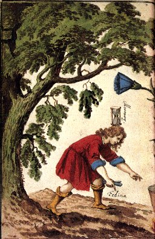
FIGURE I
(Cabala Mineralis, Simeon Ben Cantara)
D'abord, il est hors de doute que l'alchimie véhicule des concepts à la fois riches et variés : elle en devient protéiforme quant à l'interprétation qu'on est en droit de donner à ses postulats ; et l'on pourrait dire qu'il y a eu autant d'interprétations différentes que d'Artistes. Les traités sur l'Art sacré sont là, en tout cas, qui font foi de la pluralité des modes d'approche sur la nature exacte de la prima materia. Les uns conseillent d'utiliser le sulfure d'antimoine - le loup gris de Basile Valentin -, les autres le dragon rouge - le réalgar, sulfure rouge d'arsenic -, d'autres encore font des supputations sur le sublimé corrosif - bichlorure de mercure -, d'autres enfin conseillent de mêler l'esprit de vin au sel de tartre. Tous sont unanimes pour déclarer que l'objectif suprême est la Pierre au rouge - le lapis philosophorum, invention du Moyen Âge -. De ce Lapis, les alchimistes prétendent qu'il possède deux ordres de vertu : le pouvoir de rendre riche et le pouvoir de guérir. Voire ! Qui de nos jours peut encore croire et douter de telles idées mirobolantes ? Qui peut croire encore à la transmutation métallique, c'est-à-dire à la Métamorphose des planètes pour remployer le titre d'un traité de Monte Snyders ? D'aucuns expliquent alors que la transmutation des métaux n'est pas séparable de la transmutation spirituelle de l'alchimiste lui-même. Nous entrons alors dans un domaine complexe où coexistent des éléments entrelacés issus de la chimie, de l'astronomie, des religions, de la mythologie grecque [et aussi indo-aryenne] et l'on sait l'importance du couple Lapis-Christus dans l'approche et la perception de l'Art sacré. Dom Pernety [Fables égyptiennes et grecques, 2 vol.] avait bien saisi le parallèle entre la religion des Égyptiens et les deux principes de la pierre : Isis et Osiris sont à l'image du Soleil et de la Lune hermétique et par delà les siècles, ils rejoignent Diane et Apollon. Il faudrait encore ajouter les différents modes de représentation du processus alchimique dont nous avons parlé en préambule de notre commentaire sur l'Introïtus de Philalèthe. Nous n'y reviendrons pas ici. En bref, il y a d'un côté l'alchimie spéculative, entretenue et issue de la pensée du Moyen Âge où la religion avait valeur de science absolue et où l'esprit scolastique régnait en maître ; d'un autre côté, nous trouvons l'alchimie sacerdotale, héritée, paraît-il, de l'Art sacré pratiqué en Égypte et qui a fait croire à certains érudits, Dom Pernety par exemple, que les fables d'Ovide voilaient réellement des tours de main chimiques et des formules hermétiques, cachées par là au sens commun [on trouve des échos de cette chimie mythologique jusque dans les écrits de Bacon, voir De la sagesse des Anciens]. On pourrait citer de nombreuses fables : celle qui nous paraît la plus à remarquer sous ce rapport met en scène Cadmus et le serpent Python. L'alchimie « opératoire » ne se démarque pas - dans sa formulation traditionnelle - des deux approches précédentes et l'on chercherait en vain un texte alchimique du XVIe ou du XVIIe siècle expurgé de connotations religieuses ou sacrées. C'est pourtant de cette alchimie qu'est née, qu'on le veuille ou non, la chimie moderne et F. Hoefer a été l'un des premiers à rendre hommage aux alchimistes pour leurs travaux sur l'antimoine, les sels, les chaux métalliques, etc. Mais Hoefer est allé plus loin et a même écrit que l'alchimie avait sa propre logique ; qu'elle était cohérente avec les idées des temps anciens - correspondant au paradigme actuel - et les concepts véhiculés par les époques où s'est inscrite et profilée la pensée de chacun des grands auteurs qui figurent dans les sommes que représentent les compilations éditées au XVIIe siècle. L'alchimie sous sa formulation « » ne peut donc être nettement séparée de sa formulation spéculative. C'est de là que proviennent les interprétations différentes qu'en ont donné les alchimistes au fil des siècles. Dans la section sur le Mercure, nous avions déjà noté que les prêtres égyptiens étaient partis de la terre noire [kema], de l'argile et qu'ils avaient été amenés à préparer d'abord du verre coloré puis après du verre blanc et peut-être même du cristal. Mais cette préparation n'est pas intervenue de façon linéaire : le travail des potiers a été fondamental en ce domaine [Fulcanelli nous rappelle que les impétrants doivent calquer leur travail sur celui du potier et E. Canseliet insiste sur les écrits de Piccolpassi]. De ce travail sur l'argile et sur la terre vitrifiable, des verreries, des terres brûlées, des glaçures même ont vu le jour. En parallèle, le travail sur les étoffes, le blanchiment, les teintures se sont peu à peu développées. L'Art sacré a intégré tous ces éléments et c'est ainsi que des pierres précieuses artificielles ont été préparées [toutes ces notions sont développées dans d'autres sections ; nous ne faisons ici que faire le point quant au but, supposé, poursuivi par les alchimistes].
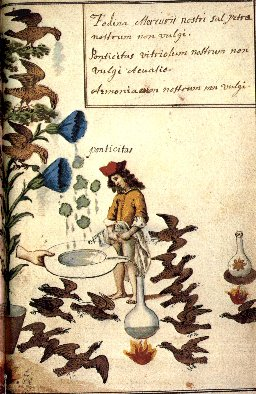
FIGURE II
(Cabala Mineralis)
1)- Si l'on envisage l'alchimie sous sa forme opératoire, voilée par une langage crypté - la cabale hermétique - plusieurs hypothèses sont envisageables en ce plaçant sous un angle de vue rationnel :
a- la transmutation et la panacée : il est impossible d'imaginer que les chimistes du XIXe et du XXe siècles soient passés à côté de la préparation de sels particuliers ou d'autres substances qui auraient pu donner lieu à des transmutations. Les hautes chaleurs des fourneaux à porcelaine ou dans d'autres circonstances n'ont jamais pu faire transmuter un métal en un autre métal. Nous révoquerons donc en doute qu'une transmutation ait jamais eu lieu ; quant aux effets initiaux de l'élixir, il s'agit ni plus ni moins [chute des dents et des cheveux] que de signes banals d'une intoxication à l'arsenic ;
b- la synthèse des pierres précieuses : c'est pour nous, la voie royale de l'alchimie. A ce titre, seuls les minéralogistes français du XIXe siècle ont de façon officielle obtenus, et par des voies identiques à celles de la nature, les pierres gemmes [section Mercure - Soufre] et tout particulièrement les corindons colorés et certains nésosilicates. Il est peu probable que les anciens alchimistes aient pu réaliser de telles synthèses cristallines ;
c- la fabrication des pierres précieuses artificielles : pour notre époque, ces synthèses ont une connotation péjorative car on pense tout de suite aux contre-façons mercantiles. Les Anciens ne voyaient pas les choses ainsi car ils ne disposaient point des méthodes nécessaires pour analyser les gemmes ; ils savaient par contre les repérer en fonction de leur pouvoir de rayer le verre, le quartz ou la topaze. Seuls le saphir et le rubis pouvaient rayer la topaze [le diamant mis à part, bien sûr]. Et ils pouvaient les reconnaître par des effets de couleur et d'astérisme. Nous en avons parlé un peu dans la section sur le Mercure et c'est le but de la présente section d'en traiter de façon détaillée les éléments ; ces synthèses conduisent aux strass colorés. Il est envisageable que les anciens alchimistes aient réussi de telles préparations. Des arguments d'ordre historique plaident en cette faveur : les relations répétées, dans les textes, au travail sur l'antimoine, à des préparations d'or particulières, au sublimé corrosif [bichlorure d'étain] ;
d- la préparation de solutions d'or : c'est le pourpre de Cassius. Il est envisageable que les alchimistes soient parvenus à obtenir cette substance complexe avant sa découverte officielle par le médecin Andreas Cassius [De Auro, Leyden, 1685]. Je dois à cet égard des renseignements importants que m'a révélés M. Philippe Litzler. Qu'il trouve ici l'expression de ma gratitude ;
e- On ne peut passer sous silence le travail des souffleurs, des mercantis de tous horizons qui ont, peut-être, fait des découvertes entièrement gouvernées par le hasard ou qui ont abusé les chalands avec des trucages qui, du reste, ont été dénoncés par les alchimistes eux-mêmes [en particulier par Michael Maïer, cf. B. Husson, in Transmutations alchimiques, J'ai Lu, 1974] ;
f- Enfin, il faudrait évoquer les cas où les alchimistes ont cru sincèrement réaliser une transmutation là où ils ne faisaient que changer la couleur d'un sel, par exemple dans la transformation d'un sulfate d'un métal en un sulfate d'un autre métal par des phénomènes de transport aisément explicables par la chimie ; ou par des phénomènes d'isomérie [tels qu'on les connaît pour des sels de fer, notamment les peroxydes ou pour les antimoniates]. Ces phénomènes ont de façon naturelle abusé les anciens alchimistes qui croyaient réellement obtenir un métal nouveau là où il n'y avait que le sel du même métal ;
2)- Si l'on envisage l'alchimie uniquement sous sa formulation spéculative, c'est l'approche de Carl Gustav Jung [Psychologie et Alchimie, Buchet-Chastel, 1970] qui est à privilégier ; l'alchimiste apparaît alors comme un démiurge qui exerce des modifications sur la matière à l'instar de Dieu. La correspondance Lapis-Christus trouve alors sa correspondance idéale, en dehors donc de toute idée « opératoire ». Dans cette vision, l'alchimie s'intègre à l'occultisme ; nous sortons définitivement d'un cadre de représentation rationnelle pour aborder de façon transcendantale les enseignements d'Hermès ; le lecteur aura alors tout intérêt à lire la somme du P. Festugière [La Révélation d'Hermès Trismégiste, 3 vol., Les Belles-Lettres, 1990] et le livre de F. Yates sur Giordano Bruno et la tradition hermétique [Dervy, 1986]. On pourra aussi consulter notre philosophie et alchimie.
Dans les pages qui suivent, on trouvera plusieurs idées développées, indissociables les unes des autres, quoique paraissant dissemblables à première vue. Il serait bon que le lecteur ait déjà des repères pour s'orienter dans ce véritable « labyrinthe de Salomon » et nous ne saurions trop lui conseiller de lire d'abord notre précis de symbolisme hermétique. Voici ces idées :
1)- les anciens alchimistes ont pu, à partir de certains sels d'étain et de sels d'or, aboutir à la préparation d'une substance assez complexe qui, pour eux, devaient avoir valeur de prodige et les inciter à croire qu'ils étaient parvenus à maîtriser la quinte essence de l'or : c'est le pourpre de Cassius ;
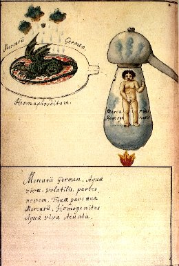
FIGURE III
(Cabala Mineralis)
2)- les alchimistes ont tourmenté l'or, ce métal, de toutes les manières possibles pour en tirer une autre « quinte essence » : c'est l'or potable ;
3)- d'une façon ou d'une autre, ces préparations nécessitaient que l'or puisse être sous forme soluble, c'est-à-dire qu'il forme un sel dissoluble dans un liquide en particulier : l'alcool ou eau-de-vie et l'éther. Etudier les dissolutions auriques, c'est donc aussi étudier l'art et la manière de procéder à la distillation du vin et à la préparation de l'oleum vitri;
4)- nous ne restons pas très éloignés du tartre vitriolé [arcanum duplicatum, sel de duobus, sel polychreste, sel de prunelle, hepar sulphuris, etc.] car, ainsi que nous le verrons, la « tête morte » [caput mortuum] obtenue lors de la distillation du vin comporte des sels complexes qui peuvent donner un dépôt contenant jusqu'à 4 % d'acide tartrique...On appelle cette tête morte « vinasse ». On a aussi beaucoup étudié les vinasses obtenus à partir de la betterave [cf. sections compendium - Principes - héraldique] dont Fulcanelli, de façon furtive, nous parle plusieurs fois... en citant Pascal [on lira avec intérêt le Pascal de Jacques Attali, Fayard, 2000].
Le lecteur l'aura compris : l'or, d'autres métaux, des sels alcalins interviennent dans ce que les alchimistes appellent le Grand oeuvre. Certaines parties du travail alchimique font appel à des agents minéralisateurs qui permettent à des minéraux de passer d'un aspect amorphe à un aspect cristallin. On a vu dans d'autres sections [Mercure ; Mercure de nature ; tartre vitriolé] que par un effet de présence dû à des sortes de catalyseurs, des substances amorphes peuvent être transformées en cristaux. La géologie moderne a admis comme certain une modification des roches au contact ou dans le voisinage des terrains massifs cristallins et c'est cette idée qui leur a valu le nom de roches métamorphiques. On montrera que l'alchimiste, officiant par voie humide, ne fait que reproduire en petit ce que la nature a mis des millions d'années à faire. Pour l'heure, nous évoquerons de façon générale le rôle des chlorures. Nous commencerons par une expérience de laboratoire avant que de donner sur la question des idées plus générales. Cette expérience a été pratiquée par Frédéric Kuhlmann et a été publiée dans les Comptes rendus de l'Académie des sciences. La voici :Note sur la production artificielle et par la voie humide d'argent chloruré [argent corné, silber-hornerz], et sur diverses épigénies par réduction d'oxydes ou de sels métalliques naturels - Dans une récente communication, j'ai eu l'honneur d'entretenir l'Académie de la production artificielle par voie humide de diverses espèces minérales [cf. Mercure de nature] qui peuvent leur donner naissance à travers des corps poreux. L'intervention de ces corps, en permettant, par un ralentissement plus ou moins grand de ces réactions, d'obtenir des corps cristallisés, rend compte d'une manière satisfaisante de la formation de certaines cristallisations naturelles en géodes. Aux faits déjà signalés, je viens ajouter la formation artificielle et par voie humide du chlorure d'argent corné. Voici comment je procède pour obtenir ce corps : après avoir empli complètement un ballon d'une dissolution de nitrate d'argent [pierre infernale], je ferme l'orifice du col avec un tampon d'un corps poreux, tel que de l'amiante, de la pierre ponce, de l'éponge de platine, de la laine, etc., je renverse le ballon dans un bain d'acide chlorhydrique en évitant toute rentrée d'air de telle manière, que le corps poreux se trouve baigné d'un côté par la dissolution d'argent, et de l'autre par l'acide chlorhydrique. [il tient donc le milieu entre les deux et se rapproche du milieu entre les deux extrémités du vaisseau de nature de Basile Valentin]. Bientôt les deux liquides se mettent en contact immédiat à travers le bouchon poreux, et il se forme à la surface supérieure de ce bouchon une petite couche de chlorure d'argent précipité, à travers laquelle la réaction se contenue lentement en donnant naissance à une arborisation de chlorure d'argent corné qui étend ses rameaux mamelonnés dans la dissolution du sel d'argent. Ce chlorure, blanc d'abord, devient sous l'influence de la lumière d'un brun violacé. [...] Cette formation artificielle et par voie humide d'une matière à aspect vitreux n'est pas sans intérêt pour la géologie ; elle donne la clef de la formation d'un grand nombre de minéraux qui ont les mêmes propriétés physiques et paraissent de même avoir été fondus. [...] C'est ainsi qu'en mettant des cristaux d'oxydule de cuivre, de carbonate et de phosphate de cuivre, du carbonate de plomb, d'oxychlorure artificiel de plomb, en contact avec du zinc et de l'acide sulfurique étendu d'eau, il y a, en peu de temps, transformation des oxydes ou des sels en masses métalliques à formes cristallines. Il suffit, pour que ces phénomènes de réduction se produisent, que le minéral à réduire soit en contact immédiat, par un point quelconque, avec le zinc immergé dans l'acide sulfurique faible. La réduction se propage peu à peu et de proche en proche sur toute la surface et dans toute l'épaisseur de la masse cristallineNous sommes très près des transmutations alchimiques... mais il ne s'agit là que de transformations isomorphiques ; tout semble se centrer autour de la conservation d'une forme cristalline par passage d'un état salin dans un autre état salin.[voila qui nous rapproche singulièrement des réactions catalytiques ; pour l'explication de ces réductions, l'oxygène nécessaire à la formation de l'oxyde de zinc qui doit saturer l'acide sulfurique pourrait être - Kuhlmann - directement emprunté à l'oxyde à réduire mais le phénomène ne se produit que lorsque l'acide est étendu d'eau et pas quand il est concentré et de toute façon, la décomposition de l'eau intervient lorsque le zinc, en contact avec l'acide sulfurique faible, sert à enlever l'oxygène combiné à l'azote dans l'acide nitrique].
[...] C'est ainsi qu'avec des cristaux d'oxyde ou de carbonate de cuivre, je produis du sulfure de cuivre ; avec le carbonate de plomb natif, avec l'oxychlorure de plomb fondu, je produis du sulfure de plomb, ayant le remarquable éclat métallique qui caractérise les galènes. Dans toutes ces circonstances, les réactions, par une sorte de cémentation, pénètrent dans toute l'épaisseur de la masse minérale, et les sulfures conservent les formes cristallines des oxydes ou des sels métalliques qui ont servi à les former.
Le chlorure de silicium réagissant à l'état de vapeur et à la température rouge sur les bases qui entrent dans la constitution des roches, se décompose en formant, par échange, du chlorure de calcium et de l'acide silicique. Tantôt cet acide reste libre, tantôt il se combine avec la base en excès et forme des silicates simples ou multiples [voir section saturnie végétale] et ces silicates terreux peuvent d'ailleurs se lier à certains sels d'antimoine [cf. Char triomphal]. Ce que cette réaction présente de remarquable, c'est que l'acide silicique qui prend ainsi naissance et les silicates qui en sont les produits ont une extrême tendance à cristalliser et il importe d'observer tout de suite que la cristallisation de ces composés s'établit à des températures inférieures à leur point de fusion. En faisant varier les proportions de base soumises au chlorure de silicium, G. Daubrée a pu préparer de l'idocrase, du grenat [dont nous avons établi -cf. Mercure de nature- qu'il constituait la pierre de transition entre celles trop riches en éléments mercuriels et celles qui se rapprochent le plus de la pierre au rubigo], de l'émeraude et du zircon [très souvent employé en bijouterie comme substitut du diamant]. Le chlorure d'aluminium peut être utilisé de la même manière que le chlorure de silicium : en passant sur de la chaux au rouge, il produit du chlorure de calcium et de l'alumine en cristaux de deux formes différentes qui se rapportent à deux types propres au corindon [base du rubigo] et ayant de grandes ressemblances avec les télésies. Le même type de réaction a encore lieu avec la magnésie qui peut se combiner en sorte de donner du spinelle : on met pour cela en présence un mélange de chlorure d'aluminium et de chlorure de magnésium en présence de chaux portée à la chaleur rouge. Avec les chlorures de zinc et d'aluminium, on produit le spinelle zincifère ou gahnite [qui a peut-être été préparé par Fulcanelli, vu ses nombreuses références cryptées au zinc]. La magnésie cristallisée [périclase de la Somma] peut être obtenue par la réaction de la chaux sur le chlorure de magnésie que l'on trouve dans les vapeurs chlorurées des fumerolles du Vésuve. Le même chlorure de magnésie peut donner, sous l'influence de la vapeur d'eau, donne aussi la périclase et le chlorure de zinc fournit du zinc cristallisé.
Cette notion d'un chlorure pouvant cristalliser est donc fondamentale dans l'explication de certaines cristallisations naturelles et la chaux semble jouer, à cet égard, un rôle déterminant dans des réactions d'oxydo-réduction. Dans la section du Mercure de nature, nous avons rappelé que la richesse des calcaires cristallins en minéraux étrangers est le résultat de ce que la chaux, en y réagissant avec la silice, a servi à former des silicates particuliers. C'est ainsi que le corindon, le spinelle [éléments du rubigo], le périclase n'ont pu s'y développer sans l'introduction postérieure d'agents chimiques qui leur étaient étrangers. C'est par l'intervention d'émanations chlorurées et fluorées que s'explique la formation de ces combinaisons, au niveau de fissures ou au sein de roches qui sont devenues ensuite très compactes.
Si l'on reprend l'exemple -Mercure de nature- des calcaires cristallins et des dolomies les mieux dotés en minéraux [Saint-Gothard, Suède, Finlande], on observe que c'est l'arrivée des chlorures, mélangés à des fluorures et aussi mêlés à des composés sulfurés qui rendent compte de la formation des minéraux cristallisés qui nous intéressent. Ce n'est que par cette manière de voir que l'on peut expliquer les dépôts de zinc oxydé rouge ou des amas de fer oligiste oxydulé qui ont été engendrés dans le calcaire. En termes hermétiques, c'est la Terre qui sert de matrice ou de mère à la genèse du minéral, par l'aide d'un agent universel [l'action catalytique des minéralisateurs, sels stannifères, chlorures et fluorures] disposé en forme d'esprit salin, de complexion humide et ignée. Cet esprit permet l'accrétion du Soufre et permet dans certains cas la naissance du rubigo et l'interaction entre la Terre et l'Esprit procède des affinités chimiques différentes entre l'antimoine et la magnésie des Sages : les expériences montrent ainsi qu'en présence du chlorure de silicium ou d'aluminium, la chaux cède son oxygène, la magnésie passe à l'état d'oxyde et entre dans la combinaison oxydée avec la silice ou l'alumine réincrudée. Ce sont ces phénomènes d'oxydation [en terme hermétique, de corruption] qui expliquent que le quartz puisse cristalliser plus tardivement que les silicates à une température qui dépasse à peine le rouge-cerise et donc, très inférieure à son point de fusion [les alchimistes ont dit qu'à partir d'une certaine époque de l'oeuvre, le travail se faisait grâce à des causes physiques qui dépassaient la seule chimie et Fulcanelli situe la transition à partir de l'infusion des deux Soufres dans le dissolvant]. L'eau, enfin, doit être évoquée dans ce processus ; loin d'hydrater, elle joue au contraire, à forte température et sous pression, un rôle de déshydratation et on voit la silice et l'alumine, anhydres, se séparer d'une dissolution aqueuse à une température de 300 à 400°C. C'est dans ces états limites qu'il faut situer la formation, par voie sèche et par voie humide, du quartz [l'Esprit corporifié] et du corindon [le Corps de la Pierre].
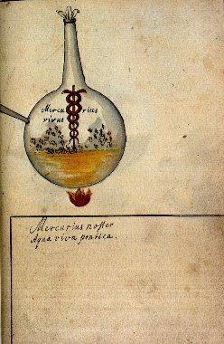
FIGURE IV
(Cabala Mineralis)
Dans la même optique, on doit signaler des travaux de synthèse menées grâce au chlorure de calcium. Frédéric Kuhlmann signale des faits intéressants survenus dans une série d'essais en vue d'extraire économiquement la potasse du feldspath. La méthode d'extraction consistait à fondre le feldspath pulvérisé avec du chlorure de calcium ; Kuhlmann eut recours à la calcination dans de grands fours d'un mélange de craie et de résidu de la fabrication du chlore, formé de chlorure de manganèse et d'un peu de chlorure de fer. le résultat de cette calcination consistait principalement en chlorure de calcium et protoxyde de manganèse, qui colore la masse fondue en vert. Lors de réparations faits à ce four, Kuhlmann remarqua ceci :"... j'ai remarqué que dans la partie de la masse du chlorure de calcium la plus rapprochée du foyer, sur des points où ce chlorure pénétré de protoxyde de manganèse a pu séjourner quelque temps et où il a subi l'action de la température d'un feu oxydant, il y avait des cavités tapissées de magnifiques cristaux noirs, et que les parties superficielles de la masse avaient acquis une couleur bleue des plus éclatantes. Les cristaux noirs sont formés d'un oxyde particulier de manganèse contenant 3 1/2 % d'oxyde de fer et d'une composition correspondant à la hausmannite Mn3O4 [...] quant à la réaction qui a donné naissance à la formation des cristaux de hausmannite, on peut admettre que cette formation a été le résultat de l'oxydation graduelle du protoxyde de manganèse au milieu de la masse de chlorure de calcium fondu, et que la volatilisation ou la décomposition d'une certaine quantité de ce chlorure a facilité cette cristallisation en géodes remarquables..."
Dans cette relation, plusieurs éléments sont à souligner. D'abord, le chlorure de calcium fondu qui joue le rôle d'agent minéralisateur, c'est-à-dire de Mercure ; ensuite, la possible volatilisation de celui-ci qui facilite la formation des géodes. Voilà un bel exemple d'alchimie naturelle. Il faut en rapprocher la cristallisation du fer oligiste dans des conditions analogues et penser que c'est l'esprit de sel produit par la décomposition du chlorure de calcium, au contact de la vapeur d'eau, qui sert d'intermédiaire pour amener l'oxyde de manganèse à l'état cristallisé : nous sommes proches de la voie humide. Kuhlmann ajoutait :
"Dans le même four où une quantité considérable d'hausmannite s'était produite, il s'est trouvé un point de la maçonnerie où selon toute apparence quelque débris d'un outil en fer a été engagé et où il s'est formé une magnifique géode de fer oligiste, magnétique et même polaire, comme beaucoup de fers oligistes naturels que l'on rencontre dans les volcans. Ces cristaux ne contenaient que des traces de manganèse et se trouvaient fixés à la maçonnerie par une couche de silicate de fer également cristallisé."
Deux points importants sont à considérer. D'abord, toutes ces cristallisations peuvent avoir lieu à la faveur d'une matière liquéfiable à une haute température et qui, à l'état liquide, permet aux molécules des masses minéralisées cristallisables de se mouvoir librement. Ce liquide, dans des circonstances particulières, agit comme dissolvant et permet à la matière cristallisable de pénétrer à travers les corps poreux, pour former à leur surface des cristaux. Ensuite, c'est très souvent qu'on voit la relation au fer oligiste et cela mérite un développement, allant de pair avec le concept « d'Aimant des sages » rencontré dans les textes que l'on étudiera au chapitre 2. Pour le moment, nous allons continuer cette étude des chlorures avec une note de Frédéric Kuhlmann aux Comptes rendus de l'Académie des plus intéressantes :
Le peroxyde de fer est un des corps les plus abondants de la nature et on le trouve soit hydraté, soit à l'état anhydre. Anhydre, il se présente en cristaux noirâtres, souvent gris d'acier, à surfaces fortement irisées : c'est le fer oligiste. Dans les terrains volcaniques on le trouve en lames hexagonales, d'un éclat très vif qui l'ont fait nommer fer spéculaire. On le trouve enfin en masses compactes dont la cassure est fibreuse, d'une couleur rouge foncé : c'est l'hématite rouge, appelée aussi sanguine dans les Arts. A l'état hydraté, le peroxyde se nomme hématite brune et c'est le minerai de fer le plus commun en France. C'est cet oxyde hydraté qui forme les ocres jaunes et, à l'état anhydre, les ocres rouges qui constituent d'ailleurs un mélange d'oxyde de fer et d'argile en proportions variables. Fait important, ces oxydes ne sont jamais purs et renferment toujours de l'oxyde de manganèse, de la silice et de l'alumine ; on parle même de variétés terreuses qui constituent le fer limoneux et le fer des tourbières [mélange de Soufre rouge et de Terre]. Le peroxyde de fer [cf. Mercure de nature] est isomorphe avec l'alumine. On prépare le peroxyde de fer par la voie humide et par la voie sèche.
a)-voie humide - colcothar - On traite la dissolution d'un sel de sesquioxyde par la potasse, la soude ou les carbonates alcalins ; il se dégage du gaz carbonique et il faut laver ensuite à l'eau bouillante pour entraîner l'alcali dont il reste toujours quelque trace ; la substance obtenue est gélatineuse et difficile à laver. C'est cet hydrate qui se produit à la surface du fer exposé à l'air et qui constitue la rouille. L'oxyde de fer ainsi préparé est connu sous le nom de colcothar ou rouge d'Angleterre. La rouille qui nous semble si commune, si vile, rassemble cependant les suffrages de tous les Artistes : ils voient en elle comme le symbole du Soufre rouge et la nomment habituellement sous des noms de fruit, comme la pomme ou surtout la grenade. Pour certains, il paraît que ce serait même la seule matière utile à l'oeuvre, mais c'est par cabale qu'il faut comprendre l'allusion. Un seul, en grec, se dit ion et le vert-de-gris se dit ioV ; c'est aussi le suc des abeilles : les abeilles sont l'équivalent du Mercure puisqu'il s'agit de messagers entre les fleurs qu'elles pollinisent et le miel qui constitue le produit du pollen [le miel est assimilable à la Pierre]. IoV, c'est aussi le venin, la corruption [cf. section réincrudation].
b)-voie sèche - safran de Mars - On le prépare en grand par la décomposition du sulfate de fer. L'acide sulfurique se dégage en se décomposant en partie en acide sulfureux et en oxygène qui transforme le protoxyde en peroxyde. C'est d'ailleurs par cette réaction que l'on prépare l'acide sulfurique fumant. L'oxyde de fer ainsi préparé est connu sous le nom de colcothar ou rouge d'Angleterre. Lorsqu'on chauffe cet hydrate, il survient une réaction singulière : en chauffant presque au rouge, il devient tout d'un coup incandescent ; cet état ne dure que quelques instants et bientôt il revient à la température du creuset dans lequel on le chauffe. Cette incandescence est due à un changement isomérique par lequel les propriétés du métal ont été modifiées : il acquiert dès lors une grande dureté et n'est plus que très difficilement attaquable par les acides. Cette propriété se retrouve chez l'alumine. Cet oxyde, quoique d'une couleur beaucoup plus intense que le protoxyde, ne colore pas autant les flux vitreux auxquels il communique une teinte jaune-rougeâtre. Cet oxyde est aussi connu sous le nom de safran de Mars astringent et de safran apéritif ; Lemery et les anciens chimistes le décrivent.
A côté du peroxyde de fer, nous trouvons l'oxyde salin. Cet oxyde se rencontre souvent en masses considérables et cristallisées, parfaitement isolé au milieu de schistes ; cette espèce constitue la plus grande partie des mines de fer de la Suède qui donnent le meilleur fer connu. Cet oxyde naturel est magnétique et il constitue souvent les aimants naturels. On le nomme fer oxydulé ou pierre d'aimant. Il est de couleur noire et on peut l'obtenir artificiellement à partir des deux oxydes précédents [colcothar et safran de Mars]. Quelquefois, et c'est une circonstance heureuse pour le Soufre de la Pierre, on rencontre des combinaisons analogues dans lesquelles le peroxyde de fer est remplacé par de l'oxyde de chrome [c'est un cas d'isomorphisme]. Lorsqu'on chauffe le fer au rouge pour le forger, il s'en détache des écailles que l'on nomme battitures de fer et qui forment une croûte à la surface de toute la partie chauffée : ces écailles sont une combinaison des deux oxydes. On peut l'obtenir :
c)- par voie sèche - il se produit quand on brûle le fer dans l'oxygène ;
d)- par voie humide - on le prépare en humectant de la limaille de fer dans un vase ouvert ; le mélange s'échauffe et il y a dégagement d'un peu d'hydrogène, le fer s'oxydant par l'eau et par l'air : on le nomme éthiops martial [à ne pas confondre avec l'éthiop minéral qui est du sulfure de mercure]
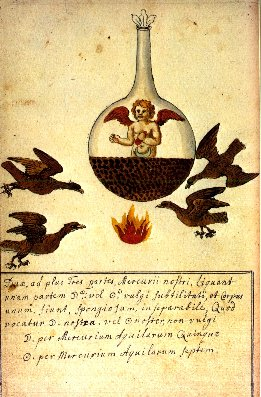
FIGURE V
(Cabala Mineralis)
Il nous reste à parler de l'acide ferrique qui a été découvert par Edmond Frémy : il est de même composition que les acides sulfurique, sélénique, manganique et est isomorphe avec eux. On le prépare ordinairement par le ferrate de potasse en chauffant au rouge-blanc un mélange de limaille de fer et de nitrate de potasse ; on doit maintenir un excès de potasse car sinon, le ferrate se décomposerait.
Nous allons à présent parler de la préparation des chlorures d'étain. On en connaît de trois types : mono- bi- et sesquichlorure d'étain.
a)- le protochlorure d'étain - il agit avant tout comme un puissant réducteur et s'empare avec avidité de l'oxygène. Il est employé dans la teinture comme mordant et comme agent de réduction. Voici comment on le prépare :
- hydraté : en traitant l'étain métallique en lames par l'esprit-de-sel [acide chlorhydrique, acide muriatique] concentré dans des vases de grès que l'on chauffe au bain de sable [l'étain doit toujours être en excès]. Lorsque l'acide est saturé, on décante la solution que l'on concentre à 45° de l'aréomètre de Baumé : on laisse reposer, on décante à nouveau et le protochlorure se prend en masse cristalline par le refroidissement ; on le nomme sel d'étain ou composition. Plus précisément, il faut traiter l'étain pur et en grenaille très divisée par l'esprit-de-sel liquide. On met l'étain dans une cornue tubulée, que l'on place sur un fourneau et dont on fait rendre le col dans un récipient lui-même tubulé. On adapte au récipient un tube recourbé qu'on fait plonger dans l'eau, et à la cornue, un tube en S. On verse par celui-ci l'esprit-de-sel en dissolution concentrée et l'on en favorise l'action par une légère chaleur. L'acide est décomposé : de là, du gaz hydrogène très infect qui se dégage et du proto-chlorure qui se dissout. Au fur et à mesure, on verse de nouvel acide et l'on continue jusqu'à ce que la majeure partie de l'étain soit dissoute ; alors on fait évaporer la dissolution dans la cornue même, on la décante dans un flacon que l'on bouche avec soin et on l'abandonne à elle-même : elle cristallise en prismes incolores par le refroidissement. Les cristaux doivent être conservés à l'abri du contact de l'air.
- anhydre : il faut chauffer peu à peu au rouge, dans une petite cornue de verre, un mélange intime de parties égales de limaille d'étain et de bichlorure de mercure [sublimé corrosif, sublimé vénitien] : le protochlorure d'étain se produit à mesure que la température croît. Il se sublime et se prend par le refroidissement en une masse grise, brillante et à cassure vitreuse.
Le protochlorure est un sel très styptique : il agit comme un puissant réducteur en s'emparant de l'oxygène d'une foule de corps. C'en est au point que le monochlorure d'étain, mis dans une solution d'acide sulfureux, en précipite le soufre ; le protochlorure d'étain en dissolution a la propriété d'enlever le chlore à plusieurs chlorures, notamment aux chlorures d'or et de mercure ; c'est ici que nous y voyons un intérêt spagyrique. En effet, lorsqu'on verse du protochlorure d'étain dans une dissolution de bichlorure de mercure, il se fait tout à coup un précipité blanc, formé de protochlorure de mercure qui se décompose lui-même de sorte qu'on finit par obtenir du mercure coulant. Lorsqu'on verse le protochlorure goutte à goutte dans une dissolution d'or très étendue, il se fait un précipité brun noirâtre qui paraît devoir sa couleur à de l'or très divisé : c'est le premier état, imparfait, du pourpre de Cassius.
b)- le bichlorure d'étain - C'est un liquide répandant à l'air des fumées épaisses, blanches et pesantes : on le nommait autrefois la liqueur fumante de Libavius. On peut obtenir directement le bichlorure d'étain anhydre en chauffant dans une cornue munie d'un récipient un amalgame d'étain réduit en poudre ou de l'étain en limaille fine mêlée avec cinq fois son poids de sublimé corrosif. On allie en général 3 parties d'étain à 1 de mercure, pulvérisant l'alliage et le mêlant avec trois fois son poids de bichlorure de mercure [le mercure a pour objet de rendre l'étain cassant]. Le bichlorure hydraté s'obtient en traitant l'étain par l'eau régale contenant un excès d'acide chlorhydrique. Dans les Arts, ce produit est souvent obtenu au moyen de mélanges d'acide nitrique et de chlorhydrate d'ammoniaque ; ou encore de chlorure de sodium ou d'acide chlorhydrique et de nitrate de potasse ou de soude : le produit que l'on obtient état autrefois connu dans le commerce sous le nom de composition d'étain.
c)- le sesquichlorure d'étain - Ce sel nous intéresse car il est employé de préférence pour préparer le pourpre de Cassius. il forme un liquide incolore ; on l'obtient en traitant le sesquioxyde par l'esprit de sel. On doit le conserver dans des flacons bien bouchés pour qu'il n'absorbe pas l'oxygène de l'air.
Cela nous amène naturellement à la préparation du sesquioxyde d'étain. Cet oxyde est blanc à l'état anhydre ; quand on le chauffe au rouge, à vase clos, pour lui faire perdre son eau, il devient noir et se dissout très difficilement dans l'esprit de sel faible : cet acide concentré le dissout assez facilement, surtout à chaud ; la dissolution saturée de cet acide a une saveur astringente, non métallique. M. Fuchs, qui a découvert cet oxyde, l'a obtenu en traitant le protochlorure d'étain par du sesquioxyde de fer hydraté [raison pour laquelle on a parlé plus haut de sa préparation]. Ce mode de préparation donne toujours un oxyde jaunâtre parce qu'une portion de l'oxyde de fer y reste mêlée : on évite cet inconvénient en prenant du sesquichlorure de fer auquel on ajoute de l'ammoniaque en assez grande quantité pour que le précipité, formé d'abord, se redissolve ; puis on y ajoute le protochlorure d'étain ammoniacal en excès. Le mélange doit remplir exactement un flacon que l'on bouche hermétiquement ; on laisse le mélange en digestion à la température de 50°C au moins et bientôt on voit le sesquioxyde d'étain se déposer ; la liqueur qui était brun-rouge, s'éclaircit et finit par être colorée faiblement en vert-bleuâtre par le protochlorure de fer qui s'est produit. Le sesquioxyde d'étain doit bien être différencié du protoxyde d'étain qui ne se rencontre pas dans la nature et qui est un produit de l'art : ce sel est blanc à l'état hydraté et noir quand il est anhydre. A noter qu'Edmond Fremy a obtenu le protoxyde d'étain en poudre rouge en évaporant au bain-marie la liqueur résultant du mélange de protochlorure d'étain et d'ammoniaque. Pendant cette évaporation, l'oxyde d'étain se dépose anhydre sous forme de grains cristallins d'un rouge cinabre, qui prennent la couleur brune ordinaire de cet oxyde par la trituration.
Nous voici donc avec des chlorures d'étain que de façon globale, on peut assimiler au sceptre de Jupiter.
Parler du pourpre de Cassius, c'est d'abord parler d'or. Nous allons donc d'abord retracer une brève histoire de ce métal en s'aidant ce que d'en dit R. Jagnaux dans son Histoire de la chimie et de ce qu'en dit Buffon dans son Histoire Naturelle.
On dit que l'or fut probablement le premier des métaux découverts et travaillés par l'homme. Ce métal est le plus dense de tous selon Buffon et est en même temps celui que la nature a produit en plus petite quantité [tout ce qui est extrême est rare, par exemple, l'or pour sa densité, le diamant pour sa dureté et le mercure pour sa volatilité]. En général, l'or se trouve dans quatre états différents : en poudre, en paillettes, en grains et en filets séparés. Les mines primordiales de ce métal sont dans les hautes montagnes [on voit l'allusion des textes alchimiques aux montagnes pour plusieurs raisons : l'évocation de l'or, la couleur bleu-noir au sommet des montagnes, les efflorescences salines]. Ces filets d'or forment des filons dans le quartz, établis dans des fentes perpendiculaires à la roche quartzeuse et l'or y est allié à une certaine quantité d'argent [de là l'espoir des alchimistes d'essayer de transmuter de l'argent en or] ; c'est à quelque distance de ces mines que se trouve l'or en petites masses, en grains, en pépites et c'est dans les ravines des montagnes qu'on le recueille en paillettes ou en poudre dans les sables que roulent les torrents et les rivières qui descendent de ces montagnes. Cette poudre est souvent disséminée et dispersée dans les terres adjacentes. On a remarqué que, plus l'or est dans un état divisé, plus il est pur : ainsi, s'il est à 20 carats dans sa mine en montagne, les poudres et paillettes font souvent de 22 à 23 carats. L'or le plus fin est à 24 carats mais on n'a jamais trouvé d'or à ce titre dans le sein de la terre. Il est curieux que l'or et l'argent apparaissent souvent alliés puisque ce sont les deux métaux qui sont inaltérables et inaccessibles aux effets des éléments humides ; et en cela ils se distinguent des autres métaux, réputés « vils » que sont le cuivre, le plomb, l'étain et le fer, sans parler de métalloïdes comme l'antimoine ou l'arsenic, lesquels d'ailleurs ont assez d'affinité. Il est un fait qui aurait dû éveiller l'attention des alchimistes, c'est que le mercure est très rarement allié naturellement à l'or. Pourtant, ils en ont fait, pour ainsi dire, sa minière et c'est en vain que les anciens alchimistes ont tourmenté le mercure pendant des siècles, à en croire Fourcroy. Dès lors, il est bien difficile d'admettre que du mercure ait pu résulter de l'or, quand bien même il y aurait, par hypothèse, des arguments qui auraient pu étayer la véracité de la transmutation...Mais c'est une idée qui semble décidément chimérique. Le fait que l'on retrouve de l'or intact dans les rivières n'est pas le fait du hasard ; il résulte bien au contraire de ce caractère inaltérable qui est le sien. Car tous les autres métaux ont été conjugués avec les sels acides, les alkalis qui rongent ces substances métalliques que nous avons évoquées : ainsi, dès que l'eau -ce puissant agent minéralisateur- a commencé d'en détacher des parties, les métaux ont été altérés, dissous et détruits par l'action des sels.
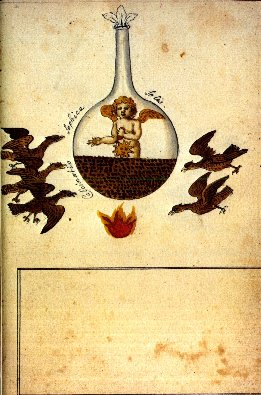
FIGURE VI
(Cabala Mineralis)
On le recueillit d'abord dans le lit des torrents comme, au XIXe siècle, dans les placers américains. Bientôt on ne se contenta pas de laver les sables aurifères et on vint à arracher l'or au sein des montagnes. D'après Agatharcides, les premières exploitations remonteraient aux temps héroïques des anciens rois d'Egypte, et même, comme l'assure Artémidor d'Ephèse, à l'histoire de la Thébaïde : elles étaient situées dans la Haute-Egypte, non loin de l'Ethiopie et sur les confins de l'Arabie. Ces traditions sont confirmées par les livres saints et les textes les plus anciens attribués à Homère. Les Egyptiens savaient fondre et travailler l'or, l'étirer en fils et en lames. L'or et l'argent étaient employés sans alliage chez les Chaldéens. Hérodote dit que :
"Dans le temple de Bel, il y a une chapelle en bas, où l'on voit une grande statue d'or qui représente Jupiter assis. Près de cette statue est une grande table d'or, le trône et le marche-pied sont du même métal. Le tout, au rapport des Chaldéens, est du poids de huit cents talents."
Les Assyriens employaient l'or à profusion. A Babylone, Sémiramis avait érigé troiss statues d'or, dont l'une avait 40 pieds de haut et pesait 1000 talents : devant ces statues était une table ou un autel en or massif de 40 pieds de long et de 12 pieds de large, pesant 50 talents. D'après le Livre des Rois, Salomon reçut en une seule année 666 talents d'or, c'est-à-dire plus de 27 tonnes. Les coupes de la maison du Liban étaient en or. Les Hébreux portaient quantité de bijoux en or fin. Les mines les plus productives étaient dans les contrées d'Ophir. L'or venait, dans l'Antiquité, de l'Inde, du pied de l'Himalaya, de la Perse, de la Bactriane, de la Médie, de l'Arabie, de l'Assyrie, de la Colchide [Pactole], de la contrée d'Ohir, du pays de Sofala [côtes orientales d'Afrique], de la Macédoine, de la Gaule et de l'Espagne. L'or était recherché aussi dans les rivières et les torrents ; Diodore de Sicile, Pline et Strabon rapportent que le Rhône et d'autres rivières de la Gaule charriaient des paillettes d'or, que les Gaulois retiraient péniblement des sables. Les Grecs exploitaient de même les rivières de la Thessalie et de la Macédoine ; celles de la Bosnie, de la Servie, l'Hèbre, le Tage et le Pô, au temps de Pline, étaient l'objet de pareilles recherches. On a retrouvé les anciennes laveries d'Haliacmon, sur le versant occidental du Pinde ; les Bohémiens exploitent encore là des sables aurifères avec des couvertures de laine et des toisons, comme au temps légendaire des Argonautes, par les procédés de Jason et de la toison d'or, décrits par Cyprien [Les travaux publics au temps des Romains, Légir]. Les Phéniciens, avant l'arrivée des colonies égyptiennes dans la Grèce, avaient, d'après Hérodote, construit des fonderies pour purifier l'or récolté dans l'île de Thasos et au mont Pangée, dans la Macédoine, les mines les plus anciennement exploitées. La Phrygie était, elle aussi, fertile en mines d'or ; Strabon dit :
"Au-dessus de la contrée des Abydéniens, se trouve la ville d'Astyra, possédant des mines aujourd'hui épuisées."
Souvenons-nous aussi de Midas, évoqué dans d'autres sections [notamment l'Oeuvre secret d'Hermès de Jean d'Espagnet], l'un des rois de Phrygie ; ce ne sont pas, certes, les ablutions de ce prince dans le Pactole qui l'ont enrichi de paillettes d'or, comme le dit Ovide, car le fleuve les arrachait aux versants des montagnes. En Colchide, où la fable avait aussi placé une toison d'or conquise par les Argonautes [nous en avons maintes fois parlé], les cours d'eau avaient la même propriété que le Pactole, et c'était sur des peaux de mouton, étendues au fond des ruisseaux, qu'on recueillait les parties les plus ténues du métal. Les mines de cette contrée étaient si productives qu'elles auraient suffis pour justifier l'expédition de Phryxus et beaucoup d'autres entreprises.
Terminons cet historique en transcrivant ici les passages suivants extraits du Système des connaissances chimiques de Fourcroy :Il est de l'or comme de l'argent, l'époque de sa découverte se perd dans la nuit des temps, et la tradition ne fournit parmi les hommes aucune trace des événements qui le leur ont fait connaître pour la première fois. On ne peut douter que ses belles propriétés, son inaltérabilité, son indestructibilité n'aient été appréciées presque aussitôt qu'il a été découvert, et qu'elles ne soient promptement devenues l'objet de l'estime et presque du culte général : Aussi la folie qui a pour but chimérique de le former de toutes pièces, de le créer comme la nature, est-elle une des maladies qui aient depuis longtemps travaillé l'espèce humaine. Tandis que quelques fanatiques se sont épuisés en vains et ruineux efforts pour produire de l'or, la foule a été généralement emportée par le désir d'en acquérir et d'en accumuler. Le philosophe qui calcule les crimes de tous les genres que cette passion effrénée a fait commettre sur le globe, est obligé de conclure que. malgré les avantages que ce métal a procurés à la société, la somme des maux qu'il a produits l'emporte de beaucoup sur celle du bien qu'il a fait naître. Dans la suite des recherches et des expériences nombreuses qui ont été faites sur l'or, les longs et pénibles travaux entrepris par les alchimistes tiennent le premier rang, et ouvrent pour ainsi dire, la scène des découvertes chimériques dont il a été l'objet. Après avoir regardé l'or comme le plus pur, le plus parfait, le plus inaltérable, le plus simple des métaux ; après l'avoir décoré du vain titre de roi, ils l'ont comparé au soleil, et ils l'ont représenté par le même emblème. Un cercle était le signe de sa perfection et de son immutabilité ; c'était pour eux l'extrême, le summum de la métallisation, l'oeuvre le plus accompli parmi les fossiles ; et peu s'en est fallu que dans leur délire ils ne l'aient placé à la tète de la création. Non seulement, suivant eux, il ne contenait rien d'âcre, rien d'étranger à la nature métallique, mais il était le produit d'une maturation accomplie, d'une incubation perfectionnée. De là les lentes expériences auxquelles ils soumettaient les autres métaux pour les mûrir et les perfectionner; de là l'infatigable patience qu'ils apportaient dans leurs recherches, et les formes ridicules même qu'ils donnaient à leurs instrument. L'argent, le plus voisin de l'état d'or, n'avait, dans leurs hypothétiques opinions, qu'un dernier degré d'amélioration à subir, qu'une teinture à acquérir, qu'une sorte d'affinage et de fixité à éprouver. Malheureux artisans d'un métier qui n'a jamais existé, et dont il est douteux que l'objet soit jamais déterminé [cf. supra pour des hypothèses sur le sujet], quoiqu'on ne puisse pas assurer qu'il y ait une impossibilité absolue de découvrir sa nature et sa composition intime, plus les alchimistes ont travaillé, et plus ils semblent s'être écartés du but qu'ils voulaient atteindre. Tout a prouvé jusqu'ici que l'or, comme les autres métaux, est un corps indestructible dont on ne peut séparer aucun principe, qu'on ne peut en aucune manière décomposer, et qui se comporte dans toutes les circonstances des opérations chimiques comme une matière simple ou indécomposable. Tout en ne faisant rien de ce qu'ils voulaient faire, les alchimistes ont appris à traiter l'or de beaucoup de manières différentes, à le faire changer de forme et de propriété, à le rappeler à son premier état, à le faire sortir aussi pur, aussi brillant et aussi intact des tortures multipliées qu'ils lui ont fait subir, à le faire entrer dans différentes compositions, et surtout à le faire servir à plusieurs opérations curieuses ou utiles. C'est dans les récits fastueux des alchimistes que les premiers chimistes systématiques ont puisé les connaissances qu'ils ont commencé à recueillir et à disposer méthodiquement sur l'or. Ils ont également profité des nombreux travaux des Adeptes, entrepris dans l'intention toujours trompée et toujours renaissante jusqu'aux jours de la physique expérimentale, de trouver dans ce métal une panacée, un remède universel. Toutes les recettes d'or potable, de teintures et d'élixirs aurifiques, tous les moyens prétendus de le diviser [l'or peut être préparé de façon très divisé ; cela n'est donc pas une pure utopie. Et c'est même sous cette forme qu'il constitue le pourpre de Cassius], de l'atténuer, de le dissoudre [de même, le sesquichlorure d'or constitue la base des autres dissolutions auriques], ont été pour les véritables chimistes autant de faits sur ses affinités et ses combinaisons. Les travaux plus sensés des docimastiques et des métallurgistes sur l'art d'essayer, de purifier, d'extraire, d'affiner, de fondre, de couler, de forger et d'employer l'or de mille manières différentes, ont fourni beaucoup de détails utiles aux chimistes pour composer l'histoire de ce métal important. Enfin, les nombreuses et industrieuses pratiques de plusieurs arts dans lesquels on emploie l'or pour lui donner cent formes variées, pour le multiplier en surfaces, pour le faire briller en bijoux, ont encore servi aux auteurs des traités de chimie ; et de cette source abondante ont découlé tous les faits qui composent son histoire particulière.
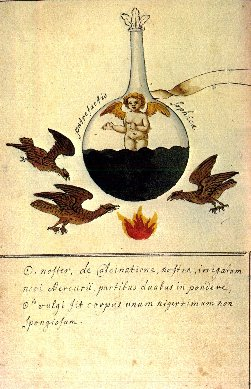
FIGURE VII
(Cabala Mineralis)
Coupellation. - Les Égyptiens et les Hébreux savaient déjà probablement purifier l'or et l'argent par une espèce de coupellation, à l'aide du plomb et des cendres [alkali fixe] des végétaux. Dans cette opération, les cendres des végétaux faisaient le même office que les coupelles d'os calcinés. La coupellation a été vaguement indiquée par Diodore de Sicile, Pline et Strabon :"Un sujet de surprise, dit Pline, c'est que pour purifier l'argent, il faille le calciner avec du plomb."
L'extraction de l'argent de ses minerais par fonte plombeuse est fort ancienne. Heureusement qu'au rebours de l'argent, dit M. Fournet, le plomb et son sulfure sont très fusibles, très oxydables, et l'oxyde engendré sous l'influence de la chaleur est à peu près tout aussi facile à liquéfier que le métal qui en fait la base. D'un autre côté, celui-ci possède une précieuse puissance dissolvante à l'égard d'une foule d'autres corps. Il est un fondant par excellence, si bien que les alchimistes s'avisèrent de comparer le plomb au vieux et froid Saturne qui dévore ses propres enfants, prétendant d'ailleurs qu'il reçoit les influences de la planète de ce nom [cf. l'humide radical métallique]. En outre, ce même oxyde, vulgairement connu sous le nom de litharge, étant amené à l'état de fusion, jouit de la faculté mouillante de l'eau et de certains liquides. Eh bien, en vertu de cette cause, il pénètre avec la plus grande facilité dans la plupart des corps poreux, et notamment dans les cendres que leur état pulvisculaire doit faire classer parmi les substances absorbantes les plus énergiques. Au contraire, par suite des étranges prédilections des effets capillaires, l'argent se refuse à cette intime dissémination, quel que soit le degré de fluidité auquel il est amené. De même que le mercure qui est dans l'impossibilité de mouiller un papier brouillard qu'imbibe l'huile, il demeure en parties suffisamment cohérentes entre elles pour constituer au moins des globules. Concluons donc que l'oxyde de plomb et l'argent métallique, corps tous deux si faciles à produire et pourtant si disparates dans les mêmes conditions, devaient tendre à se séparer du moment où un hasard quelconque amènerait un fondeur à chauffer suffisamment un minéral plombo-argentifère, et qu'enfin il trouva les grenailles du métal dans le magma cendreux et plombeux, résidu de son opération, Elles devaient nécessairement I'avertir, et puis un petit effort de son aptitude industrielle intervint pour amener le perfectionnement de cette ébauche de traitement. On a retrouvé au cap de Gao cinquante-deux fourneaux de coupellation, à Barcelone, des plaques épaisses de litharge ; et aux environs de Carthagène, des saumons de plomb incomplètement dépouillés de leur argent et les gâteaux d'argent qui en provenaient. M. Ledoux a décrit les fours de réduction découverts au milieu des scories amassées autour des anciennes usines de l'Attique, et remontant à la période grecque. Ils étaient très bas, cylindriques, d'environ 1 mètre de diamètre, et construits avec des micaschistes du Laurium ou avec des trachytes très réfractaires, de l'île de Milo. Le combustible était du charbon de bois provenant des forêts du pays ; le courant d'air était fourni par des soufflets mus à bras d'hommes. Au-dessus des fours, de hautes cheminées devaient aspirer et enlever les fumées délétères du plomb. Le plomb d'oeuvre, fondu et exposé au courant d'air, s'oxydait, se transformait en litharge qu'on enlevait, et l'argent restait au fond du creuset. On a retrouvé, non pas les fours de coupellation, mais, au milieu des scories, les débris des litharges jaunes et rouges qui en provenaient ; ces litharges, ou écume d'argent, comme les appelle Pline, étaient revivifiées et donnaient du plomb pauvre. (Léger, les Travaux publics aux temps du Romains). L'or pur était appelé par les anciens or apyre (or sans feu), c'est-a-dire qui n'a pas besoin de passer par le feu. Agatarchide nous indique le moyen qu'on employait pour purifier l'or :
« Les fondeurs, dit-il, après avoir reçu, au poids et à la mesure, une certaine quantité de minerai d'or, le déposent dans un vase de terre ; ils y ajoutent du plomb proportionnellement à la quantité d'or, avec une addition de sel, d'un peu d'étain et de son d'orge ; ensuite ils recouvrent le creuset d'un couvercle qu'ils lutent exactement; enfin, ils exposent le creuset à un feu de fourneau pendant cinq jours et cinq nuits, sans discontinuer. Après ce laps de temps, ils laissent refroidir la matière. Alors on voit apparaître l'or très pur, et sans la moindre trace des substances étrangères qu`on y avait ajoutées. Le métal a perdu un peu de son poids. »
Cette opération était une véritable coupellation. On ne voit pas la nécessité de l'étain, mais l'orge, comme toute matière organique, servait de réducteur. L'or ainsi purifié s'appelait or obryze, c'est-à-dire or plusieurs fois passé au creuset. Suétone rapporte que Néron exigeait que les impôts lui fussent payés en or obryze, c'est-à-dire en or ayant subi les épreuves de la coupellation. L'altération des monnaies a toujours été assez commune. C'est à ce crime qu'est dû l'art de l'essayeur :
« Les uns, dit Pline, altèrent les monnaies en y ajoutant du cuivre, les autres font une soustraction du poids légalement établi, et qui est tel que 84 deniers pèsent exactement une livre, C'est pourquoi on institua par une loi l'art d'essai les monnaies (ars demarios probandi). Cette loi était si agréable au peuple qu'on éleva à Marius Gratidianius, qui l'avait fait porter, des statues massives dans toutes les rues de Rome... »
L'essai des monnaies se faisait très probablement déjà par la coupellation ; pour séparer l'or de l'argent, on employait un mélange semblable au cément royal (Voir Séparation de l'or et de l'argent). Mais les Romains savaient combien il était difficile, à l'aide de leurs procédés imparfaits, de séparer de l'or les dernières traces d'argent. On lit dans les Institutes :
« De même que le vin et le miel donnent naissance à une espèce d'émulsion, ainsi, l'or et l'argent fondus ensemble donnent un alliage appelé électrum, dont il est également difficile de séparer les éléments. »
Dans un des papyrus de Leyde, qui remonte environ au IIIe siècle de notre ère, on trouve le moyen suivant pour purifier l'argent :
« Prenez une partie d'argent et un poids égal de plomb ; mettez dans un fourneau, maintenez fondu jusqu'à ce que tout le plomb ait été consumé ; répétez l'opération jusqu'à ce qu'il devienne brillant. »
Au VIlle siècle, Geber décrit clairement la coupellation :
« L'argent et l'or supportent, dit-il, seuls l'épreuve de la coupellation. Le plomb résiste le moins ; il s'en va et se sépare promptement. »
Voici ce mode d'opération :
« Que l'on prenne des cendres passées au crible, ou de la chaux, ou de la poudre faite avec des os d'animaux brûlés, ou un mélange de tout cela, ou d'autres choses semblables. Il faudra ensuite les humecter avec de l'eau, les pétrir et les façonner avec la main, de manière à en faire une couche compacte et solide. Au milieu de cette couche, on fera une fossette arrondie et solide, au fond de laquelle on répandra une certaine quantité de verre pilé. Enfin, on fera dessécher le tout. La dessiccation étant achevée, on placera dans la fossette l'objet que l'on veut soumettre à l'épreuve et on allumera un bon feu de charbon. On soufflera sur la surface du corps que l'on examine, jusqu'à ce qu'il entre en fusion. Le corps étant fondu, on y projettera du plomb par parcelles, et on donnera un bon coup de feu. Et lorsqu'on verra le corps s'agiter et se mouvoir vivement, c'est un signe qu'il n'est pas pur. Attendez alors jusqu'à ce que tout le plomb ait disparu Si le plomb a disparu, et que ce mouvement n'ait pas cessé, ce sera un indice que le corps n'est pas encore purifié. Alors il faudra de nouveau y projeter du plomb et souffler à la surface jusqu'à ce que tout le plomb soit séparé. On continuera ainsi à projeter du plomb et à souffler, jusqu'à ce que la masse reste tranquille et qu' elle apparaisse pure et resplendissante à sa surface. Dès que cela a lieu, on éteindra le feu ; car l'oeuvre est alors parfaitement terminé. En projetant du verre sur la masse qu'on soumet à l'épreuve, on remarque que l'opération réussit mieux, car le verre enlève les impuretés. A la place du verre, on pourra employer du sel ou du borax, ou quelque alun. On pourra également faire l'épreuve du cineritium dans un creuset de terre, en soufflant tout autour et sur la surface, comme nous l'avons indiqué. Le cuivre se sépare de l'alliage un peu plus lentement que le plomb ; mais il est plus facilement enlevé que l'étain. Le fer ne se prête pas à la fusion, et c'est pourquoi il ne s'allie pas avec le plomb. Il existe deux corps qui résistent à l'épreuve de la perfection, à savoir, l'or et l'argent, à cause de leur solide composition, qui résulte d'un bon mélange et d'une substance pure ».
Les perfectionnements apportés au procédé de la coupellation permirent de traiter pour argent des plombs de moins en moins riches, si bien qu'au Moyen Âge on put coupeller avec avantage les couvertures des vieux bâtiments. Dans un manuscrit fin XVe siècle, se trouve un chapitre relatif à la préparation des coupelles et à la construction d'un fourneau particulier destiné à la coupellation. Il est question, dit le Dr Hoefer, non seulement de la préparation des coupelles, au moyen de cendres mouillées et façonnées dans un moule métallique, mais encore de la construction d'un fourneau particulier (moufle) exclusivement destiné à la coupellation :
« Ce petit fourneau (furnellum) doit être carré, d'un empan et demi de hauteur, de cinq quarts d'empan de largeur. Il faut y pratiquer un petit pont en fer ; on y met les charbons, sur lesquels on ne souffle jamais. On place au-dessous de ce pont une lame (de fer), sur laquelle on pose la coupelle ».
L'auteur ajoute que le métal est soumis à la coupellation par doses fractionnées, et qu'on le fait fondre avec des quantités proportionnées de plomb. L'ordonnance de Philippe de Valois, de l'année 1343, décrit la coupellation en termes très précis :
« Les coupelles, y est-il dit, sont de petits vaisseau à plat et peu creux, composez de cendres de sarment et d'os de pieds de moutons calcinez et bien lessivez ; pour en séparer les sels qui feroient pétiller la matière de l'essay, on bat bien le tout ensemble, et après cela on met, dans l'endroit où l'on a fait le creux, une goutte de liqueur qui n'est autre chose que de l'eau où l'on a délayé de la mâchoire de brochet ou de la corne de cerf calcinez: ce qui ha une manière de vernis blanc dans le creux de la coupelle, afin que la matière de l'essay y puisse estre plus nettement, et que le bouton de l'essay s'en détache plus facilement. »
L'ordonnance de 1343 insiste particulièrement sur la pureté du plomb employé
pour l'opération :« Le général essayeur ou l'essayeur particulier doit avoir bon plomb et net, et qui ne tienne or, argent, cuivre ne soudoure, ne nulle autre communication ; et de celuy doit faire essay. »
Elle prescrit aussi une foule de précautions minutieuses dans l'emploi de la balance, elle va jusqu'à recommander d'éviter le contact de l'haleine :
« Le général essayeur ou l'essayeur particulier doit avoir des balances bonnes et légières, loyaux et justes, qui ne jaugent d'un costé ne d'autre. Quand il poise les essays, il doit estre en lieu où il n'y ait vent ne froidure, et garder que son haleine ne charge la balance ».
Au XVIe siècle, Césalpin appelle le plomb un savon qui nettoie l'or et l'argent dans la coupellation.
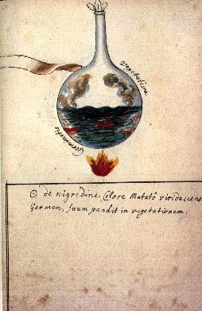
FIGURE VIII
(Cabala Mineralis)
Séparation de l'or et de l'argent. -- Les Anciens savaient séparer l'or de l'argent. Strabon dit, en parlant des mines d'or du sud de l'Espagne :« Si l'or est fondu et purifié à l'aide d'une certaine terre appelée stypteria, il reste un résidu d'électrum (alliage d'or et d'argent) ; mais si l'on recuit ensuite ce résidu, qui contient de l'or et de l'argent, l'argent se consume et l'or reste ».
Ce passage set assez obscur. Qu'est-ce que la terra stypteria ? Les uns prétendent que c'est le vitriol vert natif [sulfate de fer] ; les autres, un alun naturel. Pline décrit également le procédé, mais avec plus de détails :
« On torréfie l'or dans un vase en terre, avec deux fois son poids de sel et trois fois son poids de misy puis on répète l'opération avec deux parties de sel et une partie de la pierre appelée schiste. De cette façon, il donne des propriétés actives aux substances chauffées avec lui, tout en demeurant pur et intact. Le résidu est une cendre que l'on conserve dans un vase en terre. »
L'affinage de l'or était produit par l'aide chlorhydrique formé, qui donnait du chlorure
d'argent. Dans un des papyrus de Leyde, examiné par M. Berthelot, on trouve la recette suivante, qui ressemble à la méthode connue plus tard sous le nom de cément royal, à l'aide de laquelle on séparait autrefois l'or et l'argent :« Prenez du vinaigre piquant, épaississez, prenez de (lacune dans le manuscrit), 8 drachmes de sel commun, 2 drachmes d'alun lamelleux (schiste), 4 drachmes de litharge, broyez avec le vinaigre pendant 3 jours, séparez par décantation et employez. Alors ajoutez au vinaigre 1 drachme de couperose, une demi-obole de... , trois oboles de chalcite (minerais de cuivre, tel que pyrite), une obole et demie de sory (sulfate de cuivre mélangé de sulfate de fer), une silique de sel commun, deux siliques de sel de Cappadoce (variété de sel gemme). Faites une lame ayant deux quarts (d'obole ?), soumettez-la à l'action du feu... jusqu'à ce que la lame se rompe, ensuite prenez les morceaux et regardez-les comme de l'or affiné ».
Au Moyen Âge, pour effectuer la séparation du l'or et de l'argent, on employait le cément royal et l'antimoine. Le cément royal, usité autrefois dans la fabrication des monnaies, était préparé ainsi, suivant Macquer: On prend 4 parties de briques pilées et tamisées, 4 partie de vitriol vert calciné au rouge, 1 partie de sel commun ; on en fait une pâte ferme que l'on humecte avec de l'eau ou de l'urine. On la stratifie avec des lames d'or minces dans un pot de terre ; on lute le couvercle et on chauffe à un feu modéré pendant 24 heures, en prenant garde de fondre l'or; on répète au besoin l'opération. Dans un traité d'orfèvrerie, dont on possède une copie date de 1478, mais qui remonte à une époque plus ancienne, et inséré par M. Berthelot dans la Collection des alchimistes grecs, on trouve trois procédés pour effectuer la séparation de l'or et de l'argent. Voici la traduction de ces textes donnée par M. Berthelot.
(N°42) -· Eau pour extraire l'or de l'asèm (alliage d'or et d'argent).
« Prenant deux parties de sel ammoniac et trois parties de sel de nitre, broie bien dans un mortier ».On les met en réaction prolongée dans un alambic, ce qui fournit une eau divine [cf. section réincrudation].
« Quand tu voudras retirer l'or de l'asèm, coupe l'asèm en morceaux, mets-le dans l'alambic, bouche bien. Epuise l'action de l'eau divine et mets à part l'or : il est à l'état pulvérulent. Agglomère-le avec l'outil à dorer ».
(N°43). -- Autre recette.
« Prends 2 litres d'alun ; du sel de nitre, 1 livre ; du vitriol romain, 4 livre et demie : broie, mets dans un alambic, place sur un fourneau; ferme bien et recueille l'eau-forte. L'eau divine est ainsi confectionnée en 24 heures ».« Quand tu voudras retirer l'or de l'asèm, mets l'eau-forte dans un vase de verre posé sur de la cendre chaude ; l'argent se dissout avec bouillonnement ».
En évaporant la liqueur, le composé d'argent reste au fond de l'alambic.
(N°44). - Affinage de l'or.
« Prenant de la marcassite (sulfure d'antimoine naturel), 8 onces ; soufre, 4 onces, fais fondre ensemble dans le creuset; il se forme de l'antimoine (sulfuré). Lorsque tu voudras affiner l'or en grains, mets l'or dans un creuset au milieu du feu. Ensuite projette de l'antimoine (sulfuré) au milieu du creuset, à ta volonté, jusqu'à l'ébullition, etc. ».(N°45). - Autre recette.
« Extraits l'or en poudre de l'asèm (par le procédé n° 43 ?) et place la poussière dans le creuset. Ensuite, délaie avec l'antimoine, au milieu du creuset, et fais chauffer. Après cela, place sur une brique de Grèce afin d'affiner et de laisser refroidir. On obtient ainsi de l'or fin ».Dans ce procédé l'argent est perdu. Le procédé de calcination avec l'antimoine était très défectueux. :
« Le troisième moyen d'affiner l'or et le séparer d'avec l'argent et le cuivre, dit Savot, se fait avec l'antimoine, en fondant avec l'or de l'antimoine plus ou moins, selon qu'il y a plus ou moins d'argent ou de cuivre allié avec l'or. L'antimoine étant ainsi fondu avec l'or non pur, il s'emboit et s'abreuve et du cuivre et de l'argent, quittant l'or, lequel tombe peu après comme un régule au fond du creuset; mais d'autant que cet or demeure aigre, ne se pouvant qu'il ne retienne et emporte avec soi quelque chose de l'antimoine, pour en retirer tout à fait l'antimoine, on fait exhaler et évaporer tout ce que l'or aurait pu tirer d'antimoine avec soi, en l'éventant avec prudence : car si on chasse l'antimoine un peu trop fort. il emporte de l'or avec soi ». (Métallurgie des Anciens).
D'après Hoefer, il est probable qu'on employait déjà sous le règne de Philippe de Valois l'eau forte pour séparer l'argent de l'or. Cependant à en juger par une ordonnance de François Ier (de l'année 1540), ce moyen n'aurait commencé à être généralement en usage que vers le commencement du XVIe siècle. Dans une Ordonnance du Roy François lI donnée à Blois le 10 mars, l'an 1540 :
« les gages des Essayeurs de la Monnaie, dit Savot, sont augmentés de la moitié, pour raison de ce départ avec l'eau-forte ; car il y est dit en termes exprès, que les Essayeurs au lieu de 5O livres tournois qu'ils avaient accoutumé d'avoir, auront chacun 100 livres tournois pour subvenir aux frais des essais de l'or au feu et à l'eau ».
Paracelse (1493-1541) décrit nettement la séparation de l'or et de l'argent au moyen de l'eau-forte :
« Pour séparer, dit-il, les métaux à l'aide de l'eau-forte ou d'autres eaux corrosives semblables, vous procéderez de la manière suivante : Commencez par réduire l'alliage en petites parcelles, introduisez-le ensuite dans une cornue, et versez-y de l'eau-forte ordinaire en quantité suffisante. Laissez digérer jusqu'à ce que le tout se résolve en une eau limpide. Si c'est un alliage d'or et d'argent qu'on a ainsi traité, l'argent seul se dissoudra, et l'or se déposera semblable à du gravier noir. C'est ainsi que les deux métaux, l'or et l'argent se trouvent séparés l'un de l'autre. Voulez-vous retirer l'argent de la liqueur sans avoir recours à la distillation ? Plongez dans la liqueur une lame de cuivre, l'argent se déposera comme du sable au fond du vase, pendant que la lame de cuivre sera attaquée et corrodée ».
Agricola donne la description détaillée de la coupellation, et signale l'emploi de l'eau forte pour la séparation de l'or et de l'argent. Il indique aussi le vitriol vert et l'huile de vitriol, puis le soufre et l'antimoine pour le même usage. A la même époque, l'Italien Biringuccio décrit les procédés d'affinage de l'or, et donne des détails très précis sur la méthode dite d'inquartation, qui est encore employée aujourd'hui. Les Vénitiens et plus tard les Hollandais avaient le monopole du commerce de l'eau-forte et de l'eau régale. Avant de terminer, signalons l'emploi de la pierre de touche dans l'antiquité :
« A propos de l'or et de l'argent, dit Pline, il faut parler de la pierre coticula (pierre de touche). Les experts, quand ils ont traité avec cette pierre comme avec une lime le minéral pour en détacher quelques parcelles, disent aussitôt combien ce minéral renferme d'or, d'argent ou de cuivre, à un scrupule près ; et cette épreuve merveilleuse est infaillible ».
Au Moyen Âge, les orfèvres, qui n'avaient pas besoin de procédés aussi exacts que celui de la coupellation, essayaient l'argent à la raclure ou à l'échoppe ; ils faisaient les essais d'or avec les touchaux, comme aujourd'hui. Pour essayer une matière d'argent, ils en tiraient de petits morceaux de un à deux grains, à l'aide d'une espèce de burin appelée échoppe ; ils les mettaient sur des charbons ardents, et ils jugeaient, par la blancheur du métal, du degré de sa pureté.
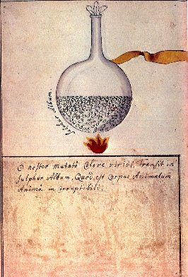
FIGURE IX
(Cabala Mineralis)
C'est à la préparation du sesquichlorure d'or que nous allons nous atteler ici. Voici d'abord un procédé d'obtention de ce sel extrait d'un traité de chimie du XIXe siècle [Malaguti] :
sesquichlorure d'or Une dissolution d'or dans l'eau régale, évaporée jusqu'à cristallisation, donne de longues aiguilles d'un jaune clair, formées de sesquichlorure d'or et d'acide chlorhydrique [esprit de sel, acide muriatique] ; ces cristaux, exposés à une température graduellement croissante, fondent en un liquide rouge brun, qui se fige en aiguilles prismatiques composées de sesquichlorure d'or sans excès d'acide chlorhydrique et dont 100 parties renferment 65 d'or et 35 de chlore. Le sesquichlorure d'or est soluble dans l'eau [qu'il colore en rouge-rubis], l'alcool et l'éther. Sa dissolution est le point de départ pour les autres préparations auriques. La dissolution de sesquichlorure d'or est décomposée par la lumière : en effet, les parois intérieures des flacons de verre qui contiennent ce liquide se recouvrent peu à peu d'une couche de métal et finissent par dorer. Le protochlorure d'étain y détermine un dépôt d'un beau rouge foncé [pourpre de Cassius, combinaison d'or, d'étain et d'oxygène]
On le voit, la préparation du sesquichlorure d'or nécessite de l'eau régale ; cette eau régale nécessite elle-même de l'esprit de sel [acide chlorhydrique, acide muriatique] et de l'esprit de nitre [acide azotique, acide nitrique, eau forte, aqua sicca].
a)- ouverture du métal : l'eau régale
Comment les chimistes anciens préparaient-ils l'eau régale ? Voici le procédé de Nicolas Lemery :
Pulvérisez quatre onces de sel Armoniac, et les mettez dans un matras, ou dans un autre vaisseau de verre assez ample : jetez dessus seize onces d'esprit de nitre : placez le vaisseau sur le sable un peu chaud jusqu'à ce que le sel Armoniac soit tout à fait dissout, puis versez la dissolution dans une bouteille que vous boucherez avec de la cire, c'est l'eau régale. Remarques - cette eau est nommée régale, parce qu'elle dissout l'or, qu'on appelle le roy des métaux. On la nomme aussi Aqua Stygia, ou Chrisulca. Il faut que le vaisseau dans lequel on fait l'Eau Régale soit assez ample ; parce que dans la dissolution, les esprits volatils se raréfient avec une si grande impétuosité, qu'ils créveraient tout s'ils ne trouvaient suffisamment de l'espace vide. Quand on prépare beaucoup de cette eau, il faut observer de retirer le vaisseau du feu lorsque la dissolution commence à se faire. On peut encore faire l'Eau Régale avec parties égales de salpêtre, et de sel gemme [pour mémoire, F. Hoefer rapporte que les Anciens confondaient le sel ammoniac et le sel gemme - celui dont parlent Avicenne, Sérapion et Columelle- ]., en mettant ces sels avec trois fois autant de bol [terre argileuse] en poudre, et on en fait une distillation de la même manière que nous avons dit, pour tirer l'esprit de nitre.Lemery considérait que l'eau régale était un sel marin dissout dans l'esprit de nitre. Voyons ce qu'en pense Lefèvre :L'esprit de sel composé se prépare avec partie égale de nitre et de sel commun, ou gemme, il est principalement composé de l'esprit de nitre, qui sort en forme de fumée rouge, et de quelques particules de l'esprit de sel, et c'est ce qu'on appelle l'eau régale, dont on se sert pour dissoudre l'or. [...] Méthode pour bien préparer l'eau forte, et l'eau régale - Prenez du vitriol, ajoutez-y du nitre dissout dans l'eau commune ; distillez le tout sur le sable par une retorte, vous aurez un esprit de nitre ou eau forte parfaite : et en y ajoutant du sel commun, vous aurez une eau régale. Quoique j'aie dit qu'il ne demeurait rien du vitriol dans l'eau forte, il est pourtant certain que le nitre emporte avec soi quelques particules métalliques de Vénus [c'est donc à partir de la couperose ou vitriol bleu que travaille Lefèvre]. La preuve de ceci, est que si on met un couteau dans l'eau-forte lorsqu'elle bout, il s'enrouille incontinent, par la raison que les particules acides qui exhalent de l'eau forte, corrodent le fer : ainsi quoi qu'il ne reste ruien du vitriol dans l'eau forte, néanmoins suivant la pensée de Glauber, il se joint quelques particules métalliques à l'esprit de nitre qui montent avec lui.A ce sujet, Lefèvre donne un chapitre qui rejoint ce que nous avons dit du tartre vitriolé - il l'appelle nitre vitriolé :A l'égard de la tête morte de l'eau forte, elle est composée de vitriol et d'esprit de nitre, et étant calcinée, puis coulée à lessive avec de l'eau commune, elle donne un sel blanc qu'on peut appeler fort à propos nitre vitriolé. Le sel alcali du nitre, s'unit dans cette mixtion à la partie métallique du vitriol, et tire quelque chose de son soufre fixe. Ce nitre vitriolé s'appelle l'arcanum duplicatum de Mynsicth son inventeur ; il contient une vertu anodine ou somnifère qui le rend recommandable contre les longues veilles [est-ce pour cette raison que le Mutus Liber présente en frontispice un dormeur que deux anges s'apprêtent à réveiller au son de l'airain ? N'est-ce point sciemment que les alchimistes insistent de façon banale sur les nuits de longue veille qu'exige le Grand oeuvre ? A ces questions, nous laisserons au lecteur le soin d'examiner le bien fondé de leur raison] [...] Comme l'eau-forte emporte avec soi quelques particules métalliques, il faut au lieu de vitriol, y ajouter de l'alun, qui n'ayant aucunes particules métalliques, rendra l'eau-forte meilleure et plus pure. L'eau régale est composée de nitre et de sel commun ou ammoniac ; car quand on ajoute du sel au nitre, on en fait toujours une eau régale. Celle-ci sert à dissoudre l'or, et l'eau forte à dissoudre l'argent.Enfin, nous prendrons un dernier avis avec Glaser :Eau régale - On a donné à cette eau le nom de régale, à cause qu'elle a la vertu de dissoudre l'or, Roy des métaux. Sa base est l'esprit de nitre, ou l'eau forte, laquelle se rend régale par l'addition du sel armoniac, ou du sel commun, en la manière suivante. Prenez quatre onces de sel armoniac purifié, et pulvérisé, mettez-le dans un grand matras, et versez par dessus une livre de bonne eau-forte, et placez le matras sur le sable médiocrement chaud, afin que l'eau forte puisse tout doucement dissoudre le sel armoniac, ne bouchez pas le matras, pour le danger qu'il y aurait qu'il ne se cassât, et évitez les vapeurs qui s'élèveront dès que l'eau forte commencera d'agir sur le sel armoniac ; car ce sont des esprits sauvages, lesquels ne peuvent ête plus condensés, et sont très nuisibles : dès que vous verrez le sel armoniac dissout, ôtez le matras hors du sable, et étant refroidi, mettez l'eau dans une fiole, et la bouchez avec de la cire, et de la vessieIl nous faut à présent résumer certains points d'histoire de la chimie, touchant à l'or afin de savoir si les anciens chimistes avaient la possibilité de réaliser déjà les opérations que nous avons décrites.
Autre eau régale - Mettez dans une cornue demie livre de sel marin, ou de sel gemme en poudre, et versez par dessus une livre de bon esprit de nitre, ou de bonne eau forte, puis distillez au feu de sable dans un récipient, jusqu'à ce que le sel demeure sec au fond de la cornue, et conservez l'eau dans une fiole bien bouchée.
Autre eau régale - Prenez une livre de sel marin, ou de sel gemme, et une livre de bon salpêtre, mette-les en poudre subtile, et les mettez avec huit livres de bol commun aussi en poudre, puis les distillez par la cornue à feu de réverbère, de la même façon que nous avaons enseigné la distillation de l'esprit de nitre, et vous aurez une eau régale, laquelle dissoudra facilement l'or.Ces trois sortes d'eau régales sont également bonnes.
L'or a tenu assez tôt le premier rang entre les sept métaux - nous dit Nicolas Lemery - parce qu'on lui reconnaissait des vertus incomparables : il était réputé le plus parfait, le plus pesant, il recevait les influences du plus beau de tous les astres, qui est le Soleil. Assez tôt, aussi, en médecine, l'or fut considéré comme un bon remède pour ceux qui présentaient des signes d'intoxication au mercure, car ces deux métaux forment un amalgame. Voici comment on le purifiait naguère :
Mettez rougir dans un creuset, à grand feu, telle quantité d'or qu'il vous plaira ; et lorsqu'il commencera à prendre la fusion, jetez-y quatre fois autant pesant d'antimoine en poudre, l'or se mettra aussitôt en fusion ; continuez un grand feu jusqu'à ce que la matière jette des étincelles. Retirez votre creuset du feu, et le secouez, afin que le régule descende au fond. Cassez-le quand il sera froid, et séparez les scories du régule qui seront dessus. Si vous voulez conserver votre creuset, il faut renverser la matière en fusion dans un mortier de fer en culot, lequel vous aurez auparavant un peu chauffé et graissé de suif, puis frapper avec des pincettes autour dudit mortier, jusqu'à ce que la matière soit en masse. Laissez un peu refroidir cette masse, puis l'ayant renversée séparez avec le marteau le Regule d'or d'avec les scories. Pesez ce régule, faites-le fondre à grand feu dans un creuset ; et lorsqu'il sera en fusion, jetez dedans peu à peu trois fois autant de salpêtre ; continuez un feu très violent, afin que la matière demeure en fusion ; et lorsque les fumées étant cessées, elle paraîtra claire et nette, jetez-là dans votre mortier de fer, chauffé et graissé [...] et votre régule d'or sera très pur. Remarques - Le commun usage pour la purification de l'or est la coupelle, en laquelle on procède de la même manière que nous dirons en la purification de l'argent. Mais la coupelle n'étant pas capable de séparer l'argent d'avec l'or, on a recours à une autre opération, qu'on appelle Départ pour y parvenir. On fait fondre dans un creuset sur un grand feu trois parties d'argent avec une partie d'or, et lorsque le mélange est en fusion, on le jette dans l'eau froide, il se condense en grenailles ; lesquelles étant séchées, on fait la séparation de l'argent d'avec l'or, par le moyen de l'eau-forte, car ce dissolvant dissout fort bien l'argent, mais l'or demeure en poudre au fond du vaisseau par la raison que nous dirons au chapitre de l'eau régale. [...] On a encore une autre méthode pour purifier l'or, à savoir la cémentation qui se fait ainsi. On stratifie dans un creuset des lamines d'or, avec une pâte sèche qu'on appelle cément, dans lequel on fait entrer des sels gemmes et Armoniac : On couvre ce creuset, puis l'ayant entouré de feu on fait calciner la matière pendant dix ou douze heures avec beaucoup de violence, afin que les sels mangent et consument les impuretés de l'or ; mais souvent ils le laissent encore chargé d'autres métaux [...] La purification de l'or par l'antimoine est plus assurée que les autres ; car il n'y a que l'or qui soit assez solide pour résister à ce dévorant : il en mange souvent une petite portion, mais il ne laisse aucun autre métal. Il faut observer de mettre un tuileau sous le creuset, de peur que l'air venant par le cendrier, n'en refroidisse le fond. L'or se met en fusion aussitôt que l'antimoine est jeté dans le creuset, parce que l'antimoine est rempli de certains soufres salins, qui augmentent la force du feu, et séparent les parties de ce métal ; c'est alors que ce qu'il y a de plus poreux et volatil s'étant uni avec l'antimoine, une partie s'exalte en fumée, et l'autre partie qui est plus fixe demeure en scories. Les étincelles qui sortent de la matière, sur la fin, proviennent de quelques particules d'antimoine qui s'étant trouvées embarrassées dans l'or, ont fait violence pour en sortir : il faut alors retirer la matière du feu afin qu'il ne s'en perde point, et la renversant dans un culot, comme nous avons dit. On fait ensuite refondre le régule sur lequel on jette du salpêtre, afin qu'il absorbe tout l'antimoine qui pourrait être resté, et de cette manière on a un régule autant purifié qu'il peut l'être.Nicolas Lefèvre ajoute trois dragmes de limaille de Mars et réitère trois fois l'opération. Il donne un procédé pour départir [faire le départ] de l'or sans eau-forte, inquart ni coupelle.
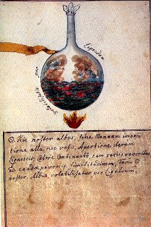
FIGURE X
(Cabala Mineralis)
Nicolas Lefèvre nous dit que l'or :
... se dissout par le moyen de l'esprit de sel acué de l'esprit de nitre. L'on se sert ensuite de l'esprit de vin tartarisé, on édulcore, on en fait l'extrait avec l'esprit de sel dulcifié par l'esprit de vin. On évapore, et enfin par la digestion l'esprit de vin se charge d'une teinture rouge comme du sang, on la filtre et on l'évapore jusqu'à siccité par la chaleur du bain ; il reste une teinture sulfureuse d'or comme sang caillé ; on la digère trente ou quarante jours [nous avons insisté sur ces 40 jours dans la section sur l'humide radical métallique], c'est le vrai soufre d'or, que Basile Valentin nomme manteau de pourpre. De Saulx.C'est cette préparation qui donne le sesquichlorure d'or. Le soufre d'or serait donc en fait... un chlorure. Voila ce qu'en disent Malaguti puis Berthier :
Malaguti - XLVIIe leçon Une dissolution d'or dans l'eau régale, évaporée jusqu'à cristallisation, donne de longues aiguilles d'un jaune clair, formées de sesquichlorure d'or et d'acide chlorhydrique : ces cristaux, exposés à une température graduellement croissante, fondent en un liquide rouge brun, qui se fige en aiguilles prismatiques composées de sesquichlorure d'or, sans excès d'acide chlorhydrique et dont 100 parties renferment 64.88 d'or et 35.12 de chlore.
Berthier - Traité des Essais par la voie sèche - chapitre XXVIII
L'eau régale [...] dissout l'or et le transforme en chrômure [...] - Pour dissoudre l'or on se sert souvent dans les arts d'un mélange de 4 p. d'acide nitrique et de 1 p. de sel ammoniac : on peut remplacer le sel ammoniac par un autre chlorure alcalin, et l'on peut employer également un mélange d'acide muriatique et d'un nitrate quelconque [...] Le perchlorure [sesquichlorure] est d'un rouge-brun très foncé, déliquescent, incristallisable, très soluble dans l'eau et dans l'alcool, qu'il colore en rouge de rubis. Desséché, il est anhydre. - La chaleur le réduit aisément en le faisant passer à l'état de protochlorure. La lumière solaire le réduit aussi au bout d'un certain temps [...] Les acétates, citrates et tartrates le réduisent, mais très lentement [nous avons vu que le délai de rigueur semblait être de quarante jours]
L'or est précipité à l'état métallique de ses dissolutions par un grand nombre de corps : la noix de galle colore d'abord la dissolution en vert, mais cette couleur disparaît peu à peu à mesure que le précipité se forme. Avec les sels de protoxyde de fer, le précipité est pur si la liqueur est maintenue acide et c'est par le moyen du protosulfate de fer qu'on prépare ce qu'on appelle l'or divisé, qu'on applique sur les émaux avec un fondant. Cela nous ramène à ce que nous avons dit sur les émaux dans la section sur le Mercure ; quant à l'état très divisé de l'or, on verra l'importance remarquable qui en découle dans la préparation du pourpre. il est d'un grand intérêt de constater que les régimes de couleurs - les régimes planétaires de Philalèthe - trouvent leur correspondance dans la combinaison des sels avec l'or : avec un sel de protoxyde de fer, si la dissolution est concentrée et qu'on emploie un excès de fer, la liqueur devient d'abord d'un beau vert [régime de Mars] ; puis à mesure que le précipité se forme elle passe au bleu [régime de Vénus], et elle finit par se décolorer tout à fait. nous verrons ce qu'il faut penser de l'action des sels d'étain. Les chlorures doubles d'or et d'alcali sont d'un jaune d'or pâle [aurore, régime du soleil] et exposés à l'action de la chaleur, ils se fondent en un liquide rouge-brun foncé, et ils ne commencent à se décomposer qu'à la température à laquelle le verre se ramollit. On se perdait autrefois en conjectures sur la vraie couleur de l'or ; il apparaît d'un beau jaune un peu rougeâtre ; lorsqu'il est réduit en feuilles très minces il est transparent et paraît vert. Vauquelin pensait que sa véritable couleur était le bleu et qu'il ne paraît vert que par le mélange des rayons jaunes réfléchis. Mais M. Buisson croit que l'or à l'état de division extrême a une couleur pourpre. Ceci semble en accord avec ce que nous savons de la cabale hermétique : le pourpre est la couleur par excellence que l'alchimiste recherche dans son travail et qui ne paraît que tardivement. Nous renvoyons le lecteur sur ce sujet à ce que nous avons écrit dans le commentaire du char triomphal de l'antimoine. En fait, l'or est d'une couleur tellement extraordinaire que l'on fera voir sur le cercle chromatique d'E. Chevreul la disposition circulaire que revêt l'or, au point de vue de sa coloration.
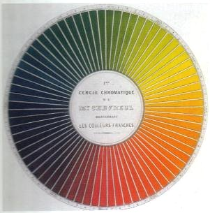
FIGURE XI
(planche extraite de : Les couleurs et leurs applications aux arts industriels à l'aide des cercles chromatiques, Eugène Chevreul, J.B. Baillière et fils, 1864)
L'or potable a toujours été un mystère pour ceux qui se sont intéressés tant soit peu à l'alchimie. On le disait pourvu de propriétés miraculeuses. On trouve en général une confusion entre l'aurum potabile, or buvable, et l'elixir vitae, élixir de vie, c'est-à-dire une décoction soluble de pierre philosophale. C.G. Jung a traité du sujet dans le chapitre Le Concepts de base de l'alchimie, §3. Conceptions et symboles du but, [Psychologie et Alchimie, Buchet-Chastel, 1970] mais là encore dans une perspective résolument psychanalytique et métaphysique, en éludant totalement la pratique des Adeptes. Armand Barbault, dans son Or du Millième matin [J'ai Lu, 1969] nous dit :
"La légende évoque souvent l'Elixir de longue vie destiné à lutter contre la vieillesse et la décrépitude. Plus près de nous, l'Or potable des alchimistes possédait de merveilleuses vertus pour guérir les maladies les plus rebelles, régénérer l'organisme et assurer un grand âge à son détenteur."
La vérité est, hélas, beaucoup plus prosaïque et l'or potable ne semble plus guère avoir de vertu. Toutefois, en thérapeutique humaine, en rhumatologie, nous soignons encore certains rhumatismes inflammatoires chroniques, et tout spécialement le plus fréquent d'entre eux, la polyarthrite rhumatoïde par des sels d'or, soit en injections intra- musculaires, soit en comprimés : c'est le seul point de rapprochement que l'on peut faire avec l'or potable des Anciens. Et encore ! De nombreux effets indésirables empêchent souvent d'utiliser les sels d'or et de nombreuses précautions doivent être prises avant chaque injection. Le sels d'or ne sont pas utilisés dans d'autres spécialités médicales ; on leur accorde généralement un rôle dans l'immuno- modulation des phénomènes inflammatoires qui conduisent à la destruction progressive de la synoviale des articulations. Pourtant, il semblerait qu'Armand Barbault ait pu arriver à des résultats singuliers comme on va le lire dans l'extrait ci-dessous. Malheureusement, ces essais n'ont pu être reproduits et nous devrons donc, à regret, les ranger avec les autres décoctions d'or, dans les produits inutiles, voire dangereux. Voici cet extrait :
Le phénomène de corruption qui affecte la Matière opère la séparation des mixtes et permet aux forces vives de se fixer dans les sels résultant de l'incinération ; ainsi ces forces vives deviennent assimilables par le corps humain du fait que tous les éléments qui concourent à cette préparation sont de nature végétale.Nous donnons cet extrait pour ce qu'il est mais ne souscrivons pas au propos : jamais, en effet, on n'a mis en évidence de « corps éthérique » et il est clair que les propos d'Armand Barbault sont teintés de ce mysticisme qui avait cours dans les années cinquante ou soixante. N'étant pas qualifié pour juger de la pertinence de ces idées, nous passerons outre [cela du reste ne remet pas en cause la poésie, souvent puissante, qui se dégage du livre de Barbault, que l'on a évoqué comme « alchimiste vert » et écologique avant la lettre].Quel nom faut-il alors donner à cette préparation ?
Les ouvrages anciens qui évoquent ce sujet parlent d'or potable, préparation chère à Paracelse et à ses précurseurs et qui serait douée du pouvoir de guérir toutes les maladies et de prolonger la durée de la vie. Toutefois, si on a beaucoup parlé de cet or potable, aucun des chercheurs qui s'intéressent à l'alchimie n'a été capable jusqu'à présent d'en préparer. D'autres auteurs parlent d'or végétal, de fleurs d'or ou de quintessence, sans pour autant donner de détails au sujet de leur procédé d'obtention. Au début de mes travaux, j'ai pensé avoir affaire à l'or potable, mais, dans son sens strict, cette opinion devait être bientôt démentie puisque l'analyse spectrale ne révéla aucune trace d'or dans ma préparation. Pourtant l'expérience est formelle : si, à la fin de la phase d'incinération, je prends de la poudre vierge, neuve, et si je mets cette poudre en coction dans un bain de rosée, la couleur de l'or ne se manifeste pas, même après de nombreuses heures de coction ; l'eau, une fois déposée, prend un aspect légèrement verdâtre, elle est de nature alcaline, son pH étant de 11 à 12. Si maintenant je recommence la même expérience, mais en ajoutant cette fois à la poudre vierge quelques grammes d'or en poudre et si je fais baigner l'ensemble dans de la rosée, le liquide se teinte de la couleur de l'or au bout de quelques heures de coction. Ainsi, d'une expérience à l'autre, il faut bien admettre qu'il y a un changement, ne serait-ce que dans la couleur. J'ai posé la question à des savants qui n'ont pu me donner aucune explication de ce phénomène. D'autres, inspirés par les conceptions théosophiques ou anthroposophiques, m'ont assuré qu'il n'y avait rien là que de normal, l'or se trouvant transporté sur un tout autre plan que le plan physique, à savoir le plan éthérique, ce qui d'ailleurs est à l'origine de ses vertus thérapeutiques. Il faut souligner, disent-ils, que certaines maladies nouvelles qui semblent inguérissables au moyen des médicaments modernes sont en fait des maladies qui ont leur siège dans le corps éthérique, en sorte qu'il est fort possible que celte médecine alchimique de l'or ait des effets positifs du fait que la préparation est apte à faire passer le médicament spécifique sur le plan éthérique. Cependant je dois dire que, pour satisfaisantes qu'elles soient, ces considérations sont loin d'exprimer la certitude que je ressens profondément. C'est que je n'oublie pas ce que disaient les alchimistes et notamment Raymond Lulle, quand ils affirmaient que l'or a un corps mais aussi une âme et lorsqu'ils admettaient que cette âme de l'or était sa couleur, cette dernière contenant alors toutes les vertus thérapeutiques du métal. Or, la couleur de l'or passe dans ma liqueur. même. Si l'analyse chimique et l'examen spectrographique n'y révèlent aucune parcelle corporelle de ce métal. C'est ma végétabilisation de l'or qui a extrait cette âme assimilable. Quant à moi, je pense que cette préparation est justement celle que certains spagiristes nomment or végétal ou encore or végétabilisé ; en effet, l'énergie qui permet, d'une part, l'action des poudres dissolvantes sur l'or métal et, d'autre part, la régénération de la poudre épuisée, cette énergie provient des végétaux. Aussi bien cette préparation qui ne contient aucun élément toxique et peut donc s'absorber sans aucun danger à raison toutefois de quelques gouttes seulement chaque jour, est-elle parfaitement assimilable. Elle est issue en quelque sorte des végétaux de la terre lui sont eux-mêmes assimilables par le corps humain. Ici encore, les lois d'analogie permettent de comprendre le phénomène.[...]
Différentes recettes ont été essayées. On les trouve dans le Cours de chymie de Nicolas Lefèvre, en addition au texte [Cours de chymie, pour servir d'introduction à cette science, par Nicolas Le Fèvre, Paris, J.-N. Leloup, 1751]. Les voici :
- or potable par l'eau pure - on emploie de l'or limé le plus fin possible et on verse dessus, dans un mortier, de l'eau de citerne ou d pluie bien clarifiée ; il faut le broyer avec un pilon de marbre ; quand l'eau se charge de la couleur aurique, on la verse par inclination dans un vaisseau de verre [décantation] et 'on continue ainsi à verser de l'eau dans la même proportion que l'on change et que l'on vide au fur et à mesure, en continuant les décantations. L'eau chargée d'or doit être filtrée sur un papier gris puis évaporée dans un vaisseau de verre sur des cendres chaudes ou à la vapeur du bain ; il reste alors une liqueur épaisse. On la fait redissoudre dans de l'eau en broyant comme auparavant, filtrant et évaporant, jusqu'à ce qu'il ne se fasse plus de fèces dans le filtre ; en général, cela survient vers la 10ème filtration. Pour se servir de cet or potable, il faut verser sur la liqueur de l'esprit de vin bien déflegmé, faire circuler dans un pellican ou dans un matras fermé par un vaisseau de rencontre. [Lefèvre fait remarquer qu'il tient cette préparation de M. Garnot Liégeois ; il n'est pas du tout certain qu'il s'agisse du véritable or potable car l'or n'est évidemment pas soluble dans l'eau, restant divisé à l'état métallique] ;
- teinture d'or - on prend une demi-dragme d'or dissout dans deux onces d'eau régale ; on verse sur cette dissolution une once d'huile essentielle de genièvre. Cette huile prend une couleur jaune et l'on sépare le menstrue décoloré, c'est-à-dire l'eau régale, par l'entonnoir. On verse ensuite sur cette huile de l'esprit de vin qui l'étend. On laisse ces deux matières en digestion douce pendant un mois ou deux, et pendant ce temps-là, l'esprit de vin se teint en jaune, puis en rouge. [Ici, par l'eau régale, on forme du sesquichlorure d'or qui est très soluble dans l'eau et dans l'alcool, qu'il colore en rouge de rubis. Lorsqu'on l'agite avec de l'éther, il se dissout et la liqueur se partage par le repos en deux parties, l'une inférieure, incolore qui n'est que de l'eau chargée d'acide hydro-chlorique, et l'autre d'un beau jaune qui surnage et qui contient tout l'or ; cette 2ème préparation semble correspondre à cela. Dans ces conditions, il est possible qu'elle conduise au véritable or potable] ;on trouve ensuite p. 130 et sq. un traité : De la composition du Soufre et du menstrue végétable ou l'Or potable, suivant la pratique de Raymond Lulle donné en 1545, à un Seigneur Français, par le Médecin la Brosse [Théâtr. Chymiq., tom. VI, p. 288] :
opération : Prenez le meilleur vin rouge que vous pourrez trouver, mais qui ne soit pas trop fort en couleur, et qui ne soit ni aigre, ni gâté ; mettez-le putréfier au bain ou au fumier de cheval, pendant huit ou dix jours, afin que les esprits commencent à se développer. Raymond Lulle marque néanmoins dans sa Lumière des Mercures, de le faire putréfier pendant vingt jours. Je l'ai fait de deux manières, qui m'ont paru également bonnes. Sans cette putréfaction, la dissolution non plus que la corruption ne saurait être parfaite ; ainsi point de nouvelle génération. Après quoi distillez et rectifiez votre eau de vie, de manière qu'il n'y reste aucun flegme. Vous tirerez ce flegme à part et le conserverez : il vous restera au fond de votre distillation, une matière aussi épaisse que du miel. Vous remettrez dessus une partie du flegme que vous en avez tiré, vous en retirerez un quart ou environ de l'alambic, vous digérerez pendant deux jours le restant qui doit venir en huile chargée de teinture ; vous la verserez par inclination, et remettrez sur votre matière d'autre flegme que vous digérerez de même ; et dès qu'il sera coloré, vous le viderez de la même manière ; et quand le flegme ne tirera plus de teinture, vous trouverez dans la cucurbite une matière noire, que Raymond Lulle nomme le noir, plus noir que le noir. Sur cette terre, vous mettrez de votre eau de vie distillée, la hauteur de deux travers de doigt au-dessus de la matière ; et vous la ferez digérer quelques jours, vous la viderez doucement, et vous verserez trois fois de nouvelle eau de vie sur la même matière, pour en tirer l'âme qui est invisible. Conservez cette eau en un vaisseau de verre bien bouché. Après quoi vous déposerez cette terre en un matras bien bouché et scellé, de manière que rien ne puisse transpirer, vous poserez ce matras à feu de cendres pendant dix jours, pour bien dessécher et calciner votre matière. Prenez votre phlegme réservé, que vous verserez en une cucurbite avec votre terre calcinée, et vous les mêlerez bien. Faites-là bouillir pendant six heures, laissez-là clarifier, et versez le clair par inclination, ce que vous répéterez trois fois avec de nouveaux phlegmes, et au fond de la cucurbite restera une terre damnée, terra damnata, filtrez vos phlegmes et les faites distiller lentement au bain, et le sel vous restera d'une blancheur de neige. Il faut observer que Raymond Lulle prétend que quand la terre est calcinée, quoique impure, on doit y joindre son âme qui se trouve infuse dans l'esprit de vin ci-dessus ; même avant que de tirer l'âme de cette terre damnée, ce qu'il pratiquait, afin de pouvoir sublimer ensemble l'âme avec sa terre. Je l'ai fait de deux manières, mais j'ai crû devoir préférer mon opération à celle de Raymond Lulle ; j'en ai tiré une plus grande quantité de sel, et qui même est beaucoup meilleur. Cependant l'une et l'autre méthode est bonne. Prenez maintenant cette terre qui est épurée, et la mettez dans une cucurbite avec l'eau de vie animée ci-dessus, vous l'y mettrez toute ou du moins la moitié, et vous la distillerez à feu très lent, et par là le sel s'unit avec l'âme, et par cette partie de l'opération, votre terre devient animée. Après quoi vous prendrez trois livres de nouvel esprit de vin qui n'ait pas encore servi, et vous l'insinuerez dans une cornue avec trois onces de votre sel animé, et après avoir bien lutté la cornue, vous la distillerez à un feu modéré, et vous aurez en même temps le corps, l'âme et l'esprit. Mais si à la fin de votre opération il restait au fond de la cornue quelque partie de votre terre, il faudra y verser de nouvel esprit de vin, à proportion de la terre qui vous reste ; car l'esprit ne reçoit pas plus de terre que ce qu'il peut enlever avec soi dans la distillation. Cette eau s'appelle la quinte essence végétable , et sert de menstrue pour la conservation des natures humaines et métalliques ; c'est ce dissolvant glorieux qui dissout l'or et lui communique toute sa perfection, qu'il tire tant de cet esprit que de son sel dissous, liquéfié et même exalté dans cette quinte essence. C'est par ce moyen que nous achevons nos opérations. C'est ce qui a fait dire à Guillaume de Paris, excellent Philosophe, que la femme dissolvait son mari, et que le mari fixait sa femme, parce que par une analogie tirée de la conjonction de l'homme et de la femme, cette quinte essence végétable faisait la dissolution de l'or, de même par un retour réciproque ; l'or, quoique dissous, fixait le corps de cette quintessence, qui devient ensuite inutile à toute autre chose. Les Philosophes savent que l'or est le feu le plus puissant que l'on connaisse, qui ne saurait être surmonté par aucun autre feu ; il a même la force de fixer tous les autres métaux, parce que le fixe a seul pouvoir de fixer. il est donc certain que sans notre quinte-essence, on ne saurait arriver à rien de parfait, tant pour la conservation du corps humain, que pour la transmutation des métaux. On voit par là que tous ceux qui emploient des eaux fortes et d'autres corrosifs, loin de faire quelque chose de bon et de louable, ne font que montrer leur ignorance ; c'est ce qui a fait dire à Raymond Lulle, à Arnauld de Villeneuve, à Albert Le Grand, et autres grands maîtres en cet art, que la véritable dissolution ne saurait se faire par ces eaux violentes et corrosives, qui ne sont pas conformes à la nature. Il nous faut parler maintenant de la calcination de l'or, que sa composition dure, ferrée et compacte empêche d'être dissout à moins qu'il ne soit auparavant calciné et réduit en parties subtiles et presque imperceptibles. C'est par conséquent une opération nécessaire dans laquelle nous suivrons principalement Raymond Lulle, qui la fait d'une manière naturelle et sans corrosif.Le traité de Nicolas Lefèvre se poursuit avec le chapitre suivant :
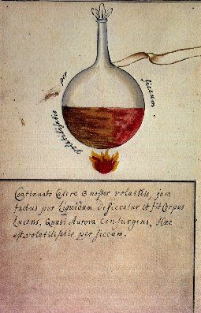
FIGURE XI
(Cabala Mineralis)
Calcination de l'or suivant Raymond Lulle et Aristote le Chymiste - Prenez de l'or de la minière, tel pourrait être celui des Ducats ; et pour le rendre encore plus pur, faites le passer par le ciment royal [les Philosophes pour avoir cet or plus épuré ordonnent de le faire passer trois fois par l'antimoine]. C'est ce que Raymond Lulle appelle l'or de Dieu, en quoi il veut marquer son excellence ; mais il ne faut pas employer l'or factice ou des Philosophes, parce qu'il a été fait par des corrosifs ; par là il paraît exclure tout or travaillé par les sels ou autres matières minérales, quoique ailleurs il semble dire le contraire. Pour plus de sûreté, prenez donc de l'or de mines très pur, et l'amalgamez avec six fois son poids de mercure, et deux fois autant de sel préparé [on prépare le sel en le faisant fondre dans l'eau, le filtrant et le coagulant derechef] que de mercure. Vous mettrez votre amalgame bien broyé et bien lavé dans un creuset, couvert d'un autre creuset percé au fond, et vous le placerez au feu de réverbère pendant vingt-quatre heures, et le mercure et le sel [le sel qui est une matière fixe, ne saurait s'évaporer, et il se fera seulement quelque déperdition de sa substance, ou plutôt de son esprit] s'évaporeront. Au bout des vingt-quatre heures, vous prendrez votre or calciné que vous broierez avec le même poids de sel préparé qu'auparavant, ce que vous recommencerez jusqu'à six fois, autrement l'or ne serait pas ou détruit ou du moins suffisamment ouvert. Après ces diverses opérations, vous broierez votre or dans un mortier de marbre ou de verre pour le réduire en poudre, et vous le mêlerez avec de son double poids de fleurs de soufre ; vous le mettrez pareillement en un creuset sur des charbons ardents, pour le faire brûler et calciner. Cette calcination du soufre se doit répéter au moins trois fois pour réduire votre or en poudre impalpable ; et vous le laverez avec le phlegme de vin que vous aurez gardé de votre distillation. Vous le distillerez derechef, laverez, sécherez et mettrez en poudre. Après cette calcination et pulvérisation, prenez une once de cette poudre aurifique, que vous mettrez dans un matras avec cinq onces de notre quinte essence ci-dessus spécifiée, bouchez le matras et le mettez sur les cendres chaudes pour le faire bouillir, pendant vingt-quatre heures, puis au bain-marie pendant une nuit, après quoi versez par inclination ce qui a pris teinture, réitérez cette infusion de la quinte essence sur la poudre d'or, tant qu'elle en tirera la teinture, par là on prend l'âme de l'or. Vous mettrez toute votre quinte essence colorée dans un alambic au bain-marie, et vous calcinerez l'âme de votre or pendant quarante jours, c'est le temps que marquent les Philosophes ; d'autres le font en trente jours ; pour moi je l'ai fais en vingt. Mais ce temps est au choix de l'artiste, quoique les Philosophes disent que plus l'or est épuré, plus il est exalté. Cette pierre ainsi préparée, est la seule qui puisse servir à la guérison des maladies et à la conservation du corps humain, au lieu que celle qui est préparée par des minéraux, est corrosive, dangereuse dans l'usage et difficile à digérer. Il faut avouer cependant que pour la transmutation des métaux, la pierre faite par les corrosifs a plus de force que celle qui est faite par la quinte essence végétable. Mais pour revenir à notre opération : nous vous disons donc de prendre l'âme de l'or jointe avec notre quinte essence, putréfiez-là au bain et la distillez, et vous trouverez au fond de la cucurbite votre or rouge, spiritualisé et d'une odeur très agréable, dont vous pourrez user à votre volonté. Ainsi vous aurez l'or potable préparé suivant la maxime des Philosophes. Quant à la quinte-essence que vous en avez retirée, conservez-là précieusement pour votre usage : elle est d'une efficacité admirable, et se trouve remplie de toutes les vertus de l'or. Il est bon de remarquer après Raymond Lulle, que la quinte-essence n'acquiert une odeur agréable, que quand elle a été jointe à l'or. Pour la terre qui reste de votre or, après en avoir tiré la teinture, mettez-là dans une cucurbite, et versez dessus de votre menstrue végétable qui ne vous a pas encore servi, mettez-le au bain de cendres, et le distillez et cohobez dix ou douze fois ; desséchez-là et la mettez en un lieu frais pour la faire tomber en délit [deliquum] , et vous pourrez vous en servir pour la santé ou autrement.
- Dissolution de l'Or - Il me reste à dire quelque chose sur les dissolutions de l'or qui peuvent se faire par le moyen de cette quinte essence végétable. Raymond Lulle dans on Traité de la Lumière des mercures, rapporte une autre dissolution de l'or qui est très parfaite, et par son opération toute la substance de l'or passe en teinture, sans laisser aucune terre. Je l'ai faite et je l'ai trouvée véritable : et voici ce qu'il en dit :« Si après la dixième distillation, vous mettez votre or préparé dans la susdite quinte- essence, et qu'après avoir retiré cette même quinte-essence, vous mettiez votre or en un lieu humide ou au bain, il se résoudra de lui-même en quatre jours. Et c'est-là cet or potable qui a tant de vertus, comme je l'ai marqué dans mon Livre de la conservation de la vie de l'homme. »
J'ai fais l'épreuve de ces deux sortes de dissolutions et je les ai trouvées également bonnes. Et je puis assurer que leur force et leur efficace est si grande, que nul remède ne peut leur être comparé. Mais je crois devoir avertir que la dissolution de toute la substance de l'or, est beaucoup meilleure pour la transmutation des métaux, que l'extraction de son âme, telle que je l'ai enseignée ci-dessus ; parce qu'après cette extraction faite, suivant notre méthode, il reste une terre dans laquelle on trouve beaucoup d'esprit mercuriel de ce métal. On peut lire sur notre quinte essence végétable et sur la dissolution de l'or, ce qu'en a écrit Raymond Lulle en son Livre des Quinte-essences.
- Pour corporifier le sel d'esprit de vin pour dissoudre l'or, et en tirer la teinture, par M. Duclos, Médecin de la Faculté de Paris. Prenez de bon vin vieux, distillez-en l'esprit, puis tout le phlegme, jusqu'à ce qu'il y demeure une substance noire et visqueuse. Prenez cette substance, et versez autant d'esprit de vin qu'il en faudra pour la dissoudre. Digérez pendant sept jours ; puis distillez d'abord au bain-marie, jusqu'à ce que l'esprit de vin en soit sorti, et distillez ensuite au sable jusqu'à sécheresse, et il passera une huile ou esprit blanc comme lait, que Raymond Lulle nomme aqua secunda, que vous garderez à part bien bouché. Mettez derechef sur le caput mortuum, ce qu'il faut d'esprit de vin pour le dissoudre tout ; digérez sept ou huit jours comme ci-devant et mettez la liqueur blanche qui en sortira avec la précédente. Réitérez cette solution, digestion et distillation du caput mortuum, tant qu'il ne vienne plus d'aqua secunda, ou esprit blanc, et que le caput mortuum reste fort sec ; que vous ferez calciner deux ou trois jours en deux pots de terre non vernis. Vous prendrez la matière calcinée que vous mettrez en une cucurbite, et vous l'imbiberez de la dixième partie de votre aqua secunda, et digérez deux ou trois jours : puis distillez la liqueur au bain-marie, et ce qui en sortira sera insipide, ayant laissé toute sa force dans le caput mortuum. Ajoutez-y de nouvelle aqua secunda pour l'imbiber, digérez et distillez comme ci devant, ne mettant à chaque fois que le dixième au total de votre aqua secunda. Mettez ensuite sept parts de bon esprit de vin sur une de votre matière ; digérez deux ou trois jours, puis distillez au bain-marie, et la liqueur passera insipide. Imbibez de nouveau votre terre avec six parts de nouvel esprit de vin, digérez deux ou trois jours et distillez. Réitérez le même avec cinq parts de nouvel esprit de vin, puis avec quatre parts et continuerez l'imbibition, digestion et distillation avec les quatre parts tant que votre terre ou caput mortuum n'en veuille plus et que l'esprit de vin en sorte aussi fort quand vous l'y avez mis. Faites sublimer cette terre pendant deux jours, faisant rougir le vaisseau sur la fin ; et il se sublimera un sel très pur et très blanc, qui n'est autre que le sel d'esprit de vin.Et comme tout ne sera pas encore sorti de cette terre, il faut de nouveau l'imbiber avec de bon esprit de vin, tant qu'elle n'en veuille plus, et que l'esprit de vin en sorte avec la même force. Sublimez comme auparavant pour tirer le sel ; imbibez derechef jusqu'à ce que votre esprit de vin sorte également fort. alors cette terre est inutile et vous la jetterez. Prenez maintenant tous vos sels sublimés, et mettez dessus trois fois leur poids de bon esprit de vin, et les distillez ensemble. Tel est le grand menstrue de Raymond Lulle, qui dissout radicalement tous les métaux et l'or même, quand il est bien ouvert et calciné ; et tire la teinture essentielle de tout. Quand vous aurez extrait la teinture de l'or par ce menstrue, faites bouillir quelque temps le corps qui vous restera dans de l'esprit d'urine, et il se résoudra en mercure coulant. Cette opération demande du soin et de la patience ; mais elle sera utile de plus d'une manière à qui saura en profiter.
- Pour faire l'or potable - Faites amalgame de l'or avec six fois son poids de mercure, broyez, triturez, purifiez bien l'amalgame avec sel et vinaigre distillé pour en ôter les noirceurs.Retirez par le cuir la moitié de votre mercure. Triturez le reste avec son pesant du total de fleur de soufre, faites évaporer au creuset ; & le soufre en brûlant enlèvera le mercure & laissera l'or très-bien calciné. Et s'il est besoin recommencez le même procédé pour avoir l'or en poudre impalpable ; réverbérez cet or au fourneau du réverbère, & il restera en fleurs. Prenez lesdites fleurs & les mettez en excellent vinaigre distillé, que vous mettrez pendant quinze jours au fumier de Cheval. Versez par inclination le vinaigre qui sera coloré, & en remettez d'autre ; faites digérer de même dans le fumier ; continuez aussi longtemps que le vinaigre ne se colore plus. Retirez votre vinaigre au feu de cendres par une cucurbite & alambic de verre, & il vous restera une huile noirâtre, sur laquelle vous verserez de l'esprit de vin, que vous ferez digérer en vaisseau de rencontre pendant douze semaines, & votre esprit de vin se coagulera ; mettez en poudre & le placer fur un verre à la cave & l'or tombera en huile, qui est l'or potable, dont il faut user avec modération & en petite quantité, comme de deux, trois ou quatre gouttes dans un véhicule convenable [...]
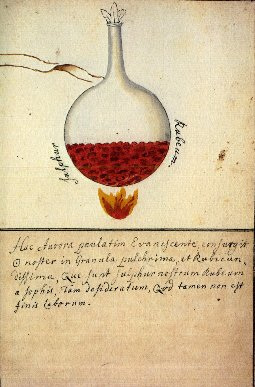
FIGURE XII
(Cabala Mineralis)
- Or potable de Paracelse -Distillez dix pintes de bon vin rouge, dont vous tirerez deux pintes d'esprit de vin que vous rectifierez et réduirez à une pinte. Il faut que cet esprit soit sans phlegme. Mettez-le en un matras bouché d'un autre de rencontre et bien lutté. Laissez-le circuler six semaines entières dans le fumier de cheval que vous renouvellerez tous les cinq ou six jours. Au bout de ce terme, examinez s'il y a au fond du matras une poudre blanche séparée de la quinte essence : si cela n'est pas faites encore circuler tant que vous verrez ce signe. Alors ouvrez votre matras, versez votre quinte essence doucement par inclination, elle rend une odeur très agréable. Quand vous aurez tiré votre esprit de vin, distillez le phlegme de votre vin que vous mettrez à part ; calcinez les fèces à feu lent et les desséchez. Mettez en poudre et faites bien sécher sur le sable chaud. Mettez en cucurbite et y jetez de votre phlegme, que vous ferez digérer vingt-quatre heures sur cendres chaudes ; versez par inclination, remettez de nouveau phlegme et digérez de même ce que vous répéterez tant de fois que les fèces ne contiennent plus de sel. Filtrez tous ces phlegmes et les distillez au bain, et le sel restera au fond de la cucurbite ; pour rendre ce sel plus pur, dissolvez-le dans son phlegme, filtrez et le distillez de nouveau ; et ce sel sera très purifié. Faites circuler sur cendres chaudes dans un matras deux parts de ce sel, avec une part de la quinte essence odorante, tant qu'ils se coagulent et congèlent en sel transparent. C'est le vrai sel des Philosophes, par lequel on calcine l'or, les pierres, perles, corail, etc. Broyez une partie de ce sel avec autant d'or en feuille, et jetez dessus la moitié de leur poids de la quinte essence susdite, et les mêlez bien ensemble en un mortier de verre. Incontinent l'or se résoudra en une liqueur couleur de sang, qui est le véritable or potable.On pourrait citer bien d'autres recettes : la liqueur d'or potable de Fioraventi, l'huile d'or de Rudelius [in Lefèvre, p. 153], médecin de Scucberg en Misnie ; l'or potable de Zwelpher [idem, p. 154] ; l'or potable de M. Sthall que nous donnons ci-dessous en raison de l'importance historique de ce chimiste :Sur trois parties de sel de tartre très pur, vous mettrez deux parts de soufre jaune, que vous ferez fondre en un creuset, et pendant la fusion vous y jetterez une partie d'or, qui s'y fondra et dissoudra facilement. Après la fusion, retirez la matière du feu, et vous trouverez un hepar sulphuris qui se pulvérisera. Mettez cet hepar pulvérisé dans de l'eau chaude et il s'y fondra. Filtrez cette eau, elle est rouge et chargée d'or, c'est un or potable, d'un goût peu agréable, et approchant de celui du magistère de soufre. M. Sthall donne à cette dissolution toutes les qualités que l'on accorde à l'or potable. Il faut avouer cependant qu'en évaporant à feu très doux toute la liqueur, il reste une chaux rouge qui se joint aisément au mercure : ainsi l'or n'y est pas dissous radicalement. [Lefèvre, p. 156]Cette préparation a un intérêt remarquable dans l'histoire des sels d'or. Ce qu'a obtenu Stahl [Sthall] n'est autre que du sesquisulfure d'or par voie directe. Pour cela, il fait digérer de l'or en poudre dans du polysulfure de potassium [hepar sulphuris]. Le soufre qui se trouve en excès dans cette dernière substance se combine avec l'or ; le sulfure qui en résulte se combine à son tour avec le sulfure de potassium pour former un sulfosel, dont il est l'élément électro-négatif. A noter qu'en lieu et place du polysulfure de potassium, on peut utiliser du soufre et du carbonate de potasse [lui-même pouvant être préparé de différentes façons : à partir du salpêtre, c'est l'alkali fixe - à partir du tartre, c'est l'huile de tartre par défaillance, sorte de carbonate hydraté très concentré]. Mais il y a plus et d'après Malaguti à qui nous empruntons ce passage :"La connaissance de ce fait est due à Stahl, qui en cherchant à découvrir de quelle manière les Hébreux avaient pu, sans l'intervention d'un miracle, boire le veau d'or en punition de leur idolâtrie, rencontra ce phénomène. Dans son ouvrage intitulé : De Vitulo aureo, il suppose que l'or avait dû être amené à l'état de sulfure double."
Charles Rollin, dans son Histoire ancienne des Egyptiens, des Carthaginois, des Assyriens, des Babyloniens, des Mèdes et des Perses, des Macédoniens, des Grecs, T. 5. [Vve Estienne, Paris, 1740] :
"L'art de fondre l'or et l'argent est de l'antiquité la plus reculée, sans qu'on en puisse précisément marquer l'origine. Les dieux de Laban que Rachel vola, paroissent avoir été de fonte. Les bijoux offerts à Rébecca étoient d' or fondu. Avant que de sortir de l' Egypte, les israélites y avoient vû des statues de fonte, qu' ils imitérent en fondant le veau d' or ; et depuis ils firent le serpent d' airain. Dès lors toutes les nations de l' orient avoient des dieux de fonte, (...) ; et Dieu défendit sous peine de mort à son peuple de les imiter. Dans la construction du tabernacle, les ouvriers n' inventérent pas l' art de la fonte : Dieu ne fit que diriger leur goût. Il est marqué que Salomon fit fondre les figures emploiées dans le temple et ailleurs près de Jéricho, parce que la terre y étoit argilleuse, (...) : ce qui montre qu' ils avoient déja la même maniére que nous pour fondre de très grosses masses."
Pour de plus amples détails sur l'or, on pourra se reporter à ce qu'en dit Rollin [Histoire ancienne, serveur Gallica, bnf]. L'anecdote est confirmée par la lecture de la Bible [La Bible enfin expliquée par plusieurs aumôniers de S.M.L.R.D.P., Voltaire, Genève, 1776] :
"Et Aaron leur dit : prenez vos boucles d' oreilles, et celle de vos fils, et de vos filles ; et le peuple ayant apporté ses boucles d' oreilles, il en fit un veau d' or en fonte ; et ils dirent : voilà tes dieux, ô Israël... et Aaron dressa un autel devant le veau ; et dès le matin on lui offrit des holocaustes. Alors le seigneur parla à Mosé, et lui dit : va, et descends. Et lorsque Mosé fut arrivé près du camp, il vit le veau et les danses ; et de colere il jetta les tables et les brisa, et prenant le veau qu' ils avaient fait il le mit au feu, et le réduisit en poudre, et répandit cette poudre dans l' eau, et en donna à boire aux fils d'Israël." [Exode]
Le sesquisulfure d'or est employé dans la décoration céramique, et spécialement dans le but de donner à la dorure sur porcelaine l'aspect chatoyant auquel on donne le nom de bourgos. On cite d'autres teintures d'or, préparées d'abord avec du nitre de troisième cuite à combiner avec de l'esprit de vitriol. Le mélange est broyé et cuit avec de l'or réduit en chaux : on en tire la teinture et on laisse le corps blanc. Une autre préparation vaut d'être citée en entier car elle se rapproche de l'obtention du sesquichlorure d'or :
- L'or réduit en huile pour la Médecine :Vous prendrez deux parts d'esprit de sel, et une part d'esprit de nitre dans lesquels vous ferez dissoudre autant de feuilles d'or très pur, que votre eau en pourra dissoudre ; vous la distillerez au bain-marie fort doux, jusqu'à ce que l'or soit réduit en gomme ou sel cristallin. Vous le mettrez à l'air afin qu'il se dissolve de soi-même. Puis distillez derechef, et faites résoudre de lui-même ; réitérez les distillations et dissolutions tant que rien ne se congèle, et que tout reste en une liqueur colorée [...]Nous citerons encore une dernière recette due au Chevalier Digby
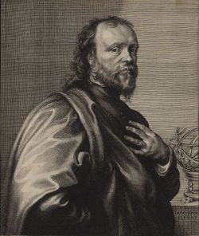
Sir Kenelm Digby (1603 – 1665)
[Sir Digby Kenelm, philosophe et chimiste anglais (1603-1665) acheta à un moine italien le secret d'une préparation de vitriol pulvérisé et calciné pour arrêter les hémorragies. Il la nomma « poudre de sympathie ». Au lieu de se contenter de vanter sa poudre comme styptique, il lui donna des vertus imaginaires agissant à distance sur les plaies et cicatrices. Phénomène merveilleux qui rappelle les plus curieuses expériences de Paracelse. Cuvier considère que Digby était un chimiste à moitié charlatan, anglais, né d'un père qui fut exécuté à Londres pour avoir pris part à la conspiration des poudres contre Jacques Ier. Digby le fils était né en 1603. D'autres historiens rapportent qu'il mourut à Londres, de la pierre - lithiase rénale - En 1661 il était retourné en Angleterre, et il y avait publié la même année un Discours sur la végétation des plantes, qu'il avait prononcé au collège de Gresham. Il était membre de la Société royale de Londres, qui venait d'être instituée, et aux assemblées de laquelle il fut toujours très assidu. Il se livrait à des expériences chimiques dans des vues de médecine ; c'est lui qui composa et répandit la poudre de sympathie qui n'est autre chose qu'une poudre calcinée : c'était du vitriol bleu ou sulfate de cuivre, préparé d'une manière particulière] :Or potable - Broyez de l'or avec nitre, sel et alun, selon que l'enseigne Zuelfer, ensuite faites-le bouillir dans de l'eau commune qu'on évaporera jusqu'à parfaite siccité, puis mettez dessus du pur esprit de vin, et digérez ; l'esprit de vin se teindra d'une teinture d'or : versez ledit esprit teint et en remettez d'autre, faisant ainsi jusqu'à ce qu'il ait extrait tout l'or. Distillez fort doucement l'esprit jusqu'à ce que la matière soit comme un sirop, sur lequel mettez trois fois son pesant d'esprit de miel, [tout sucre est un corps réducteur] qui est pour empêcher la fulmination : ensuite de cela faites-le précipiter avec de l'esprit d'urine, et l'or tombera au fond comme boue verte-brune qui demeurera dans le filtre : laissez rasseoir encore la liqueur passée par le filtre dix ou douze jours, et il se précipitera de soi-même encore de la matière, mais non pas si verte ni si brune comme auparavant, que séparerez par le filtre ; continuez ceci jusqu'à ce qu'il ne se précipite plus d'or, et à chaque fois ce qui se précipitera sera plus délié et subtil. Lavez vos précipitations avec de l'eau distillée, jusqu'à ce que vous ayez ôté tout le sel et acrimonie : puis mettez-y votre menstrue d'esprit de vin acué avec esprit ou sel d'urine, et au fond il tirera une teinture rouge et brune en vingt-quatre heures ; versez le menstrue teint et en mettez d'autre, continuant cela jusqu'à ce qu'il ne teigne plus, même à la chaleur du bain-marie. La première fois que l'eau se teindra au frais, mais après il faut chaleur du bain, car autrement il ne se teindrait plus. Distillez votre esprit teint jusqu'à ce qu'il y reste une gomme humide ; sur la fin de cette distillation il passera quelque phlegme qu'il faut recevoir à part ; et si lors on donne trop de chaleur, il montera quelque teinture avec ce phlegme, car si vous le desséchez trop il ne se dissoudra pas bien dans l'esprit de vin. Sur une dragme de cette gomme mettez une once d'esprit de vin et un demi-septier de vin d'Espagne, et filtrez cela par le papier gris ; de quoi donnerez une once pour dose. Pour ne rien perdre de votre or, prenez le corps restant après que votre menstrue en a tiré toute la teinture qu'il a pu, et réitérez avec lui de nouveau toute l'opération comme vous avez fait avec l'or crud : c'est-à-dire broyez-le avec les trois sels [sans doute nitre, sel marin et alun ?], et faites-le bouillir dans de l'eau commune jusqu'à sécheresse. Réitérez encore avec l'esprit de vin : filtrez le dit esprit et évaporez à sirop : dissolvez dedans trois fois son pesant d'esprit de miel, précipitez avec esprit d'urine ; abluez la précipitation de toute sa salsunogité, et tirez-en la teinture avec votre menstrue. Notez qu'à toutes les fois que vous tirez la teinture avec votre menstrue, le première fois que vous la mettez, après avoir dulcifié votre précipité, l'esprit de vin acué tirera la teinture à froid ; mais après que vous aurez versé cette première extraction et que vous y versez nouveau menstrue, il faut digérer au bain, car autrement le menstrue ne se tiendrait pas : répétez la même opération sur le corps qui ne donne plus de teinture, commençant par l'ébullition dans l'eau commune avec les trois sels, et achevant avec l'extraction de la teinture par le moyen de votre menstrue : réitérez cela jusqu'à ce qu'il ne vous reste plus d'or ; mais que le tout soit dissout en teinture et vous verrez qu'à chaque fois l'or deviendra plus pâteux, et en digérant le menstrue sur l'or, il y surnagera une huile. Voila comment l'or potable se fait, mais en travaillant pour y parvenir on a d'autres curiosités quand on s'éloigne de ce droit chemin, et particulièrement pour faire le crocus solis, comme l'enseigne Zuelfer [Zwelpher], à savoir broyez votre or avec les trois sels ; faites bouillir dans l'eau commune ; évaporez à siccité : dissolvez de nouveau en eau commune ; quand tout est dissout, précipitez avec huile de tartre : faites passer la liqueur par le filtre, et l'on a trouvé dans le dit filtre du mercure coulant avec la poudre que Zuelfer appelle crocus solis, mais il n'y a point d'or, c'est seulement quelque terrestréité des sels, imprégnée de quelque esprit d'or, lequel est tout dans la liqueur qui a passé dans le filtre, qui ne se précipite pas avec le sel de tartre, mais l'esprit d'urine le précipite tout, et il est fulminant : lorsqu'il est précipité, versez la liqueur surnageante, et sur l'or précipité mettez de l'eau commune et du mercure coulant que battrez ensemble, et le mercure fera que l'or deviendra en poudre tannée, laquelle laverez bien de toute saleure ; et si vous la mettez dans un creuset et la réverbérez à grand feu, cette poudre d'or deviendra fixe : mais si vous la broyez premièrement avec du soufre, et puis la mettez à réverbérer, tout l'or s'en ira avec le soufre. Quand l'or dissout par les trois sels et l'eau commune a été retiré avec l'esprit de vin, on le peut précipiter en l'agitant dans un matras avec du mercure coulant : il tombe lors en poudre violette fort subtile et si ouverte, que si on la mêle avec du soufre commun, elle se sublimera toute avec le dit soufre au feu d'ignition ou de réverbère ; néanmoins la teinture ne s'en tire pas si facilement que de celle qui est précipitée avec l'esprit d'urine. [...]Le chevalier Digby donne d'autres recettes mais nous passerons outre. Une fois encore, on retiendra l'allusion à l'alcool, à l'ammoniaque, à un sel de potasse [huile de tartre = carbonate de potasse]. Avec du nitre, du sel et de l'alun, on doit aboutir à de l'eau forte ; celle-ci va agir sur l'or en le transformant en sesquichlorure très impur qui fond, à une certaine température sous la forme d'une poudre rouge brun [Digby évoque une substance verte brune et il est possible que la couleur verte soit due au sulfate de fer issu de la décomposition de l'alun -sulfate de fer + sulfate d'alumine-]. De toute façon, le protoxyde de fer développe au contact du sesquichlorure d'or un précipité brun. Par la suite, après des lavages répétés, Digby semble obtenir une liqueur rouge et brune qui correspond sans doute à du sesquichlorure d'or purifié. La suite de l'expérience de Digby ne laisse pas d'étonner. Il remploie les trois sels [il y a formation d'acide sulfurique avec d'autres corps] puis ajoute de l'alcool : en principe, il doit alors se former de l'éther. Ce qui semble accréditer cette hypothèse, c'est l'huile qui surnage la dissolution. En effet, P. Berthier nous dit :"Lorsqu'on l'agite avec l'éther [le sesquichlorure] il se dissout, et la liqueur se partage par le repos en deux parties, l'une inférieure incolore, qui n'est que de l'eau chargée d'acide hydro-chlorique, et l'autre d'un beau jaune qui surnage, et qui contient tout l'or. [Berthier ajoute] - On ne connaît pas bien sa nature. On employait autrefois cette dissolution sous le nom d'or potable..."
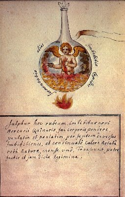
FIGURE XIII
(Cabala Mineralis)
Il est encore plus remarquable d'observer que Digby lui-même nous dit qu'il s'agit bien de l'or potable... Quant à la préparation du crocus solis, il s'agit du protoxyde d'or et voici comment Malaguti indique son obtention :"Pour préparer le protoxyde d'or, il faut faire digérer le protochlorure d'or [c'est le même or préparé avec les trois sels, mais au lieu qu'il soit mis en digestion, il est bouilli] dans une dissolution de potasse [huile de tartre faite par défaillance] : il se forme une poudre violette insoluble, décomposable environ à 250°c, qui ne se salifie pas et que l'esprit de sel dédouble en sesquichlorure et en or métallique."
Voyez plus bas ce que l'on peut obtenir avec du protoxyde d'or. Digby nous indique dans la suite de sa relation la préparation de l'or fulminant. Voici comment P. Berthier l'obtient :
"La première espèce d'or fulminant s'obtient en faisant digérer de l'oxyde d'or dans de l'ammoniaque ou dans du sulfate d'ammoniaque. -Elle est d'une couleur foncée ou grise. Elle se décompose avec explosion soit par une chaleur très peu plus élevée que celle de l'ébullition de l'eau, soit par le choc, soit même par le plus léger frottement..."
Mais on a vu que la préparation de Digby ne détonait pas ; ceci arrive lorsqu'on fait digérer la dissolution avec du fer, du zinc ou du mercure ; peut-être est-ce le fer de l'alun utilisé [l'un des trois sels] qui permet d'éviter ce phénomène...Nous citerons un autre procédé de teinture d'or [du cours de chymie de Nicolas Lefèvre, p. 159] :
Teinture d'or très spécifique - Prenez de l'or très pur une partie, du sel Philosophique préparé, ainsi qu'il sera dit, dix parties ; charbon de racines de vignes trois parties. Faites fondre le sel Philosophique dans un fort creuset ; et lorsqu'il sera fondu, jetez-y l'or en limaille qui se fondra aussitôt. Alors ajoutez-y le charbon en poudre grossière ou en petits morceaux, et cela peu à peu, et que le tout demeure en fusion un bon quart d'heure. Vous verserez ce mélange dans un mortier de marbre échauffé, où vous le pulvériserez. Et sur cette poudre, mettez de l'esprit de vin très pur et en tirez la teinture selon l'art. Cette teinture est regardée comme universelle et admirable, tant pour les maladies des hommes que des métaux. Fondez de nouveau ce qui restera de l'extraction de la teinture, et vous le fondrez avec autant de sel Philosophique, pour le pulvériser et en tirer la teinture comme auparavant. Le sel Philosophique se fait par l'huile de soufre, et le sel marin résous à l'humide, ou se peut encore faire avec le sel gemme ou marin, dissous et filtré et joint avec autant d'huile de vitriol que vous coagulerez en sel, selon l'art.Le sel Philosophique est le sel admirable de Glauber [sulfate de soude] ; le charbon de racines de vignes est un sel de potasse. Dans cette opération, il est possible que la potasse et la soude puissent dissoudre un peu d'or et qu'il se forme un sulfure ; il y aurait alors formation d'un sel double dans lequel l'or fait partie du principe électro-négatif. Toutefois, il faudrait admettre que du polysulfure de potasse [foie de soufre] se forme initialement dans le creuset avant d'attaquer l'or. Nous avons vu plus haut que ce sulfosel expliquait, d'après Stahl, comment les Hébreux avaient pu « boire le veau d'or » puisque l'aurate de potasse et l'aurate de soude sont très solubles dans l'eau. Il reste que l'on voit mal comment les Hébreux auraient survécu à ce breuvage qui était extrêmement caustique... Ce ne sera pas la première fois qu'une légende a inspiré l'oeuvre d'un chimiste. Souvenons-nous du serpent de Kékulé qui fit comprendre à ce chimiste l'aspect de la molécule de benzène [l'anneau de Kékulé]. Ce serpent n'était ni plus ni moins que le serpent Ouroboros de la tradition hermétique.
Abraham Eleazar, Uraltes chymisches Werk, Erfurt 1735 ; Leipzig, 1760
l'Ouroboros alchimiqueTous les procédés, les « recettes » cités peuvent plonger le lecteur dans la perplexité, si ce n'est, même, dans la confusion. Mais on repère des constantes dans ces recettes. D'abord, ce qu'il faut retenir de toutes ces préparations, c'est la référence permanente à l'esprit de vin, c'est-à-dire à l'alcool. Ensuite, la saveur du sel préparé d'une certaine façon, qui est sucrée ce qui va nous amener tout à l'heure à des hypothèses concernant la nature de ce produit. Voyons d'abord le cas de l'alcool.
Les boissons fermentées sont connues depuis la plus haute antiquité ; c'est cependant seulement au Moyen Âge qu'on est arrivé à en retirer par la distillation l'esprit de vin ou alcool étendu d'eau. On attribue cette découverte à Aboucasis et à Arnauld de Villeneuve mais elle paraît remonter plus loin. D'après Jagnaux [Histoire de la chimie], les alchimistes donnaient le nom d'alcool à une substance réduite en particules très ténues par des moyens mécaniques ou chimiques. Ainsi, le nouveau produit était-il, pour eux, le vin dépouillé de sa partie grossière et ce nommait alcool vini. Raymond Lulle indiqua le moyen de concentrer l'alcool à l'aide du carbonate de potasse [cendres de chêne, de végétaux, alkali fixe, borith de Anciens]. Lowitz de Saint-Petersbourg et Richter parvinrent à le déshydrater complètement par la chaux vive. Pendant tout le Moyen Âge, l'alcool fut uniquement consacré à la médecine et était considéré comme une véritable panacée : il possédait, disait-on, la vertu de rajeunir les vieillards et de prolonger la vie ; de là son nom d'eau de vie [notez que l'alcool est responsable de nos jours d'une surmortalité considérable : on lui doit, hélas, beaucoup de disparitions prématurées dans le cadre des accidents de la route, des cirrhoses du foie alcooliques, des neuropathies diverses, des faits divers, etc.]. Vers la fin du XVIe siècle, l'eau de vie commença à servir de boisson et se répandit bientôt dans presque tous les pays d'Europe. La composition de l'alcool demeura inconnue jusqu'à la fin du XVIIIe siècle : Stahl pensait que l'alcool était composé d'une huile très atténuée et très légère, intimement unie, par l'intermédiaire d'un acide, à une quantité d'eau plus grande que celle qui entre comme principe dans la combinaison de l'huile. Le chimiste Macquer disait ceci de l'alcool :
"Mais d'un autre côté, si l'on fait attention aux propriétés essentielles et fondamentales de l'esprit de vie, à sa miscibilité parfaite avec l'eau, à sa flamme, qui n'est accompagnée d'aucune fumée, ni suie, à l'impossibilité de le réduire à l'état charbonneux, enfin à ce que dans sa combustion, on n'en retire qu'une matière qui brûle et de l'eau pure, toutes propriétés qui ne conviennent à aucune huile proprement dite ; on ne peut guère s'empêcher de tomber d'accord que ce n'est pas de l'huile, mais le phlogistique pur qui est le principe inflammable de l'esprit de vin [...]"
Si l'on essaye de définir l'esprit de vin en des termes hermétiques, il est certain qu'il se rapproche beaucoup de ce que les alchimistes appelaient eau ignée ou feu aqueux et l'on serait alors tenté de croire que nous sommes dans le faux dans les sections sur le Mercure, où pas une goutte d'esprit de vin n'existe, pour la bonne raison qu'il aurait brûlé immédiatement. La réponse est simple et nous paraît évidente : il s'agit du principe de la véritable voie humide ; de cette voie humide par laquelle on parvient à ouvrir l'or et qui conduit, d'une part aux préparations de l'or potable et d'autre part aux teintures d'or, en particulier le pourpre de Cassius, lui-même entrant dans la préparation de pierres précieuses factices. De plus, il ne faudrait pas oublier que Fulcanelli nous parle de deux voies qui se succèdent dans le temps : d'abord la voie humide, puis une période d'assation. En somme, la voie humide passe par l'esprit de vin, et nous le verrons bientôt sans doute aussi par l'éther, tout cela au matras ; et en vue de la préparation des dissolutions auriques ; et la voie sèche se passe au creuset. Dans les autres sections, c'est donc essentiellement de la voie sèche classique que nous avons parlé, c'est-à-dire de celle où il n'y a point besoin des dissolutions auriques et partant, point besoin de l'alcool ou de l'éther. Nous passerons sur les détails concernant la détermination précise des principes de l'alcool et que l'on trouve dans tous les traités de chimie pour nous consacrer à son application dans l'oeuvre d'Hermès. Nous ajouterons seulement sur ce point précis que c'est M. Berthelot [cf. Chimie des Anciens] qui effectua la synthèse de l'alcool en 1854. De l'alcool, la transition à l'éther se fait d'elle-même. On attribue souvent à tort la découverte de l'éther à un allemand, Valérius Cordus, qui décrivit en 1537, dans sa Pharmacopée chymique, sous le nom d'Oleum vitrioli dulce, une liqueur qu'il préparait en distillant un mélange à poids égaux d'acide sulfurique et d'esprit de vin, après l'avoir fait digérer au feu de cendres pendant deux mois. Mais - assure Jagnaux - il est probable que le produit qu'il obtenait ainsi était plutôt ce qu'on appela depuis huile douce de vin, que le véritable éther sulfurique. En outre, le pseudo-moine bénédictin Basile Valentin, au XVe siècle, parle, dans différents passages que nous avons identifiés, en particulier dans le Char Triomphal de l'antimoine, d'une essence « agréable et d'une bonne odeur » qu'il préparait en distillant de l'huile de vitriol avec de l'alcool. il semble donc que l'on puisse attribuer la découverte de l'éther au groupe d'Adeptes ou à l'alchimiste qui écrivait sous le pseudonyme de Basile Valentin.
frontispice d'une édition tardive du Currus triumphalis antimonii
Quoi qu'il en soit de l'intérêt hermétique de cette réflexion, pendant près de deux siècles, la réaction de l'acide sulfurique sur l'alcool fut l'objet de recherches de bien des savants, parmi lesquels on peut citer Boyle, Thomas Weillis, Newton, frédéric Hofmann, Stahl, Henckel, Pott, etc. En 1730, un chimiste allemand nommé Frobenius, publia dans les Transactions philosophiques [note de Thomson : « ce mémoire n'est guère autre chose qu'une rapsodie dans le style des alchimistes. Il se termine par une note de M. Godfroy, préparateur de Boyle, faisant mention d'expériences faites autrefois sur ce liquide par Boyle et par Newton »] un mémoire dans lequel se trouvent exposées les propriétés les plus remarquables du liquide sous l'action de l'acide sulfurique sur l'alcool. C'est lui qui donna à la substance le nom d'éther, à cause de son extrême fluidité. On attribua alors à Frobénius la découverte de ce composé, qui prit le nom de liqueur de Frobénius. Mais Newton avait déjà préparé l'éther. Boyle avait décrit sa préparation et quelques-unes de ses propriétés et bien d'autres chimistes encore, connaissaient ce liquide avant Frobénius, et en faisaient moins de mystère. La description trompeuse de l'éther donnée par Frobénius était faite plutôt pour déguiser que pour dévoiler la connaissance de ce composé :
« Paratur ex sale volatili urinosa plantarum phlogiste, aceto valde subtili per summam fermentationem cunctis subtilissime resolutis et mixtis ».
Frobénius envoya une certaine quantité de son liquide à Geoffroy aîné ; presqu'en même temps, Grosse en reçut d'un chimiste anglais, Godfrey Hanckvitz, qui était le préparateur de Boyle ; ce qui prouve - nous dit Jagnaux - que l'éther était connu à cette époque en Angleterre. L'attention des chimistes français se porta sur ce liquide ; Geoffroy, Duhamel, un duc d'Orléans retiré à l'abbaye Sainte-Geneviève, les deux Rouelle, Bayen, Hellot, Grosse s'en occupèrent plus particulièrement. A l'étranger, les recherches furent entreprises par Scheele, Goettling, Klaproth, etc. Ce fut Grosse qui approfondit le sujet avec le plus de sagacité. Sachant que pendant la distillation du mélange d'acide sulfurique et d'alcool, il se dégageait des substances différentes, il voulut s'assurer d'abord de la nature de ces substances. En dehors de l'éther sulfurique, l'éther chlorhydrique était déjà connu des alchimistes qui, au XVIe siècle, l'obtenaient plus ou moins mélangé d'alcool ou de produits chlorés. Cependant vers la fin du XVIIIe siècle, on doutait encore de son existence ; ce fut Gehlen qui le prépara le premier, à l'état de pureté, en 1804, au moyen du chlorure d'étain fumant et de l'alcool. L'éther nitreux était peut-être connu de Paracelse ; mais on s'accorde à penser [Jagnaux] que ce fut Kunckel qui fit, le premier, mention de cet éther, en 1681, dans une de ses lettres à Voight. Cette découverte était tombée dans l'oubli, lorsque Navier, en 1742, la remit en lumière et publia avec Geoffroy un procédé de préparation. L'éther acétique fut préparé par le comte de Laurageais qui reconnut, en 1739, qu'on pouvait obtenir un éther par action de l'acide acétique sur l'alcool. Il le préparait en distillant et cohobant à plusieurs reprises parties égales d'esprit de vin rectifié et de vinaigre radical retiré par distillation des cristaux de Vénus [acétate de cuivre]. Apparemment, le procédé de Laurageais est très sensible au nombre de fois qu'il faut pratiquer la distillation [cela pourrait se rapprocher de certains tours de main alchimiques aperçus dans le traité d'Ulstade en particulier]. Il nous reste à parler de l'acide acétique.
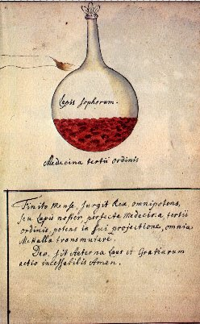
FIGURE XIV
(Cabala Mineralis)
Acide acétique - Le vin abandonné à l'air se transforme en vinaigre ; ce fait est connu de la plus haute antiquité. Moïse parle du vinaigre et dès le temps d'Hippocrate, le vinaigre était utilisé comme médicament. Pline le considère comme un conservateur excellent des fruits et des légumes :"L'altération du vin devient un remède : le vinaigre est un excellent réfrigérant, et un résolutif non moins puissant ; aussi versé à terre, il fait effervescence."
Mêlé au miel, le vinaigre constituait la boisson ordinaire des soldats romains. Se propriétés dissolvantes étaient également connues des Romains. Tite-Live rapporte qu'Annibal, lors de son passage à travers les Alpes, l'employa pour humecter certaines roches qu'il faisait briser ensuite avec des coins de fer, et Pline nous apprend que, dans l'exploitation des mines d'or, les Romains brisaient les barrières de silex qu'ils rencontraient en creusant les galeries, au moyen du feu et du vinaigre. La composition de ce liquide ne fut connue qu'au XVIIIe siècle. Le vinaigre est de l'acide acétique impur en dissolution dans l'eau. Les alchimistes le séparèrent des impuretés qui l'accompagnent ; Geber, dans son traité De investigatione magistoris, dit qu'on le purifie et qu'on l'améliore par la distillation. Basile Valentin, au XVe siècle, obtient de l'acide acétique plus concentré, ou vinaigre radical, par la distillation du verdet [acétate de cuivre]. Stahl indique différents procédés pour préparer l'acide acétique concentré ; en 1697, il soumit l'acide faible à des congélations successives, puis, décantant la partie restée liquide, il la trouva plus riche en acide. En 1702, dans son Specimen Becherinnum, il décrivit un nouveau mode de concentration qui consistait à saturer l'acide par un alcali, à évaporer à sec et à distiller le résidu avec de l'acide sulfurique. En 1739, de Laurageais trouva que l'acide concentré est susceptible de cristalliser ; à cet état, on lui donna le nom de vinaigre glacial. Il faut remarquer par ailleurs, que la production de l'acide acétique par la distillation du bois et d'autres fibres végétales est fort ancienne, car Glauber, dans son Furni novi philosophici dit que le vinaigre de bois est une substance déjà bien connue de son temps, ne différant pas beaucoup du vinaigre ordinaire, et qu'on rend aussi bonne que lui par la distillation ; pour ces motifs, on la désignait sous le nom acetum lignorum [Riban]. Boyle identifia l'acide du bois avec celui du vinaigre, de façon plus explicite. Ayant obtenu, par la distillation du bois, de l'alcool et du vinaigre mélangés ensemble dans un récipient, il les sépara par une nouvelle distillation, à une température ménagée, de façon à ne laisser passer que l'alcool. Mais comme par ce procédé, l'esprit de bois contenait toujours un peu de vinaigre, il traita le liquide par la chaux ; par une dernière distillation il obtint de l'esprit de bois seul :
"En chauffant fortement, dit Boyle, cette chaux saturée par l'acide, on obtient [par la distillation] un esprit très rouge, d'une odeur très pénétrante, d'une saveur excessivement piquante, et qui diffère entièrement de celle des autres liquides acides. C'est ce que quelques chimistes ont appelé teinture de corail. En poussant la distillation du bois aussi loin que possible, on remarque que la liqueur qui passe dans le récipient n'est plus incolore, mais d'un beau jaune, d'une odeur très forte, d'une saveur plus acide que l'esprit de vinaigre, et qu'elle possède toutes les propriétés dissolvantes des acides. Ne sachant trop me rendre compte de son origine, je l'ai nommée acetum radicatum."
Boyle montra que l'acide ainsi obtenu décomposait les carbonates alcalins avec effervescence, qu'il dissolvait le corail et qu'il se combinait avec le plomb calciné (oxyde) pour former le sucre de Saturne. Voila quels sont les faits rapportés par Raoul Jagnaux dans son Histoire de la chimie. Si nous avons tenu à détailler un peu ce paragraphe, c'est qu'on retrouve des tours de main, des procédés qui rappellent grandement ceux qui sont utilisés par les alchimistes qui usaient de la voie humide.
Nous donnons ici de larges extraits d'un texte que Louis Figuier consacre à L'alcool et la distillation, dans ses Merveilles de l'Industrie [Les merveilles de l'industrie ou Description des principales industries modernes [1, 2, 3]. Industries chimiques, Louis Figuier, Paris : Jouvet : Furne,1873]. Profitons-en pour dire que Louis Figuier, contrairement à ce que pensent Jacques Sadoul et Bernard Husson, n'a pas été un adversaire si acharné que cela de l'alchimie : son ouvrage est imposant, on perçoit un travail d'érudit et on est même étonné d'un dialogue, vers la fin de l'ouvrage [[L']alchimie et les alchimistes : essai historique et critique sur la philosophie hermétique par Louis Figuier, L. Hachette, Paris, 1860], avec un alchimiste, conversation pour ainsi dire saisie sur le vif et où L. Figuier ne montre nul mépris pour son interlocuteur...
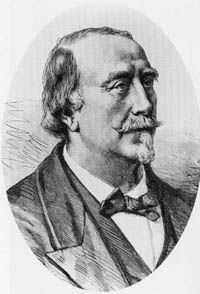
Louis Figuier (1819-1894)
Le premier auteur qui ait décrit avec netteté et précision un appareil pour la distillation du vin et l'extraction de son alcool, est le physicien napolitain, J.-A. Porta, le même qui a rendu son nom à jamais célèbre par l'invention de la chambre obscure, instrument qui sert de base à la photographie. J.-B. Porta publia, en1609, un volume in-4°, écrit en latin, ayant pour titre Joannis Baptistae Porta, Napolitani, de Distillationibus lib. IX, etc. Cet ouvrage traite de toutes sortes de distillations, de celle du vin en particulier, des vases que l'on doit y employer, de la manière d'opérer, etc. Le dix-neuvième chapitre du premier livre renferme la description de deux appareils qui peuvent servir à la distillation des vins, et qui prouvent que J.-B. Porta avait, sur cette opération, les idées les plus exactes. Le premier de ces appareils se compose d'une chaudière munie d'un tuyau en
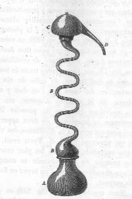
FIGURE XV
(appareil distillatoire de J.-B. Porta)forme de serpent. Nous représentons ici (fig. I) ce premier appareil distillatoire. A, est la chaudière ou cucurbite; BB, le tube qui conduit les vapeurs au condenseur, C; D, le tube qui amène le liquide condensé dans un récipient disposé sous le réservoir. Il est bon d'expliquer la forme tortueuse donnée au tube BB qui surmonte la chaudière A. Les alchimistes et les chimistes du Moyen Âge croyaient que l'esprit-de-vin, l'eau ardente (aqua ardens) devait au feu ses propriétés actives. Ils pensaient donc devoir laisser le liquide qui fournissait l'esprit-de-vin, soumis le plus longtemps possible à l'action de la chaleur. De là la forme contournée, bizarre, qu'ils donnaient au col de leurs alambics. Ils voulaient par ce moyen prolonger l'action de la chaleur sur l'esprit-de-vin, pour l'imprégner intimement de cette chaleur, où l'on voyait la cause des vertus spéciales de l'esprit-de vin.
Le second appareil décrit par J.-B. Porta, dans son ouvrage, consiste en une série de sept à huit chapiteaux, qui ressemblent à des oeufs. Au moyen de cet appareil, dit J.-B. Porta, on retire d du vin, des eaux-de-vie de divers degrés, suivant le nombre de
chapiteaux que parcourt la vapeur ; c'est-à-dire que, par les plus bas, on obtient de l'eau-de-vie d'un degré inférieur; et par les plus élevés de l'eau-de-vie en esprit d'un titre supérieur. Voici comment J.-B. Porta s'exprime à cet égard [...] :« Nous nous servons aussi, pour obtenir l'eau-de-vie, d'un vase qui se compose de huit ou dix capacités, dont chacune s'insère au côté opposé de l'autre, et selon que l'on recueille le produit distillé à un point, on obtient de l'eau-de-vie à différents degrés, car plus elle est recueillie dans un vase élevé, plus elle est spiritueuse ».
J.-B. Porta ajoute que ces vases peuvent être de cuivre, de laiton ou de verre :
« aeneo, vel aurichalco, vel vitreo ».
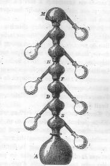
FIGURE XVI
(l'hydre à sept têtes de J.-B. Porta)A côté de la description de cet appareil, l'auteur en donne le dessin que nous reproduisons dans la figure II. A, est la cucurbite, M, le dernier condenseur, B, D, F,H, des condenseurs inférieurs. Des récipients sont fixés au col de chacun de ces
condenseurs particuliers. Dans le second chapitre du huitième livre, on trouve la manière d'extraire l'eau-de-vie par le feu, et la manière de la rectifier par plusieurs distillations répétées. Ces descriptions sont très exactes et elles ont été reproduites dans plusieurs auteurs de la fin du siècle dernier. Mais le neuvième chapitre est particulièrement digne de remarque. Il traite de la manière d'extraire l'eau-de-vie par d'autres moyens en abrégeant le travail et les dépenses :« Quomodo aqua vitae aliis mo dis ad laboris et impensaruni compendium extrahatur. »
Ces moyens consistent à se servir des deux vases, dont l'auteur a déjà donné la description, et dont il attribue l'invention à « des hommes de génie » qui. sans doute, avaient vécu avant lui. L'un de ces vases est celui que représente la figure II, d'après l'ouvrage de Porta. On ne peut se méprendre sur le sens du passage de Porta, dont voici le texte :[...]
« Quelques-uns distillent, dans trois, quatre et même sept vases, c'est-à-dire dans l'hydre, afin d'obtenir de l'eau-de-vie à différents degrés de force, car le vase supérieur fournit une eau-de-vie plus spiritueuse, le vase inférieur laissant écouler le phlegme, et tout étant ainsi conservé. »
Le même chapitre se termine par ce précepte, qu'une seule distillation pratiquée de cette manière vaut mieux qu'un grand nombre d'autres [...] L'auteur y prouve que, par une seule chauffe, on extrait immédiatement du vin, des eaux-de-vie de divers degrés (variae note), depuis le plus inférieur jusqu'au plus élevé. On appela hydre à sept têtes l'appareil de J.-B. Porta. On y pratiquait des ouvertures à différentes hauteurs, pour y prendre à volonté une liqueur plus ou moins riche, selon la distance entre l'orifice et la cucurbite. Un auteur italien, Savonarole, a décrit un appareil qui marque le premier pas vers la production industrielle de l'alcool, en permettant d'opérer la distillation des vins sur une plus grande échelle. Savonarole dit que l'on se servait, de son temps, d'une grande cucurbite en cuivre (aenea) étamée à l'intérieur, et qui portait trois ouvertures : la première, placée au sommet et un peu latéralement, servait à introduire le vin ; la seconde, sur le milieu de la cucurbite, se reliait au tube du serpent, ou au serpentin ; la troisième, au niveau du fond du vase, servait à extraire le phlegme, c'est-à-dire le résidu aqueux de la distillation. Par-dessus la cucurbite, on disposait un vase plein d'eau froide, proportionné à la dimension du serpentin et dans lequel celui-ci devait être contenu. Ce serpentin était luté à l'orifice central de la cucurbite. La liqueur qui distillait coulait dans le récipient, par l'autre extrémité de ce serpentin. Vers le milieu du dix-septième siècle, Nicolas Lefèvre, l'un des fondateurs de la chimie, décrivit, dans son Traité de chimie, un appareil qui ressemble à celui de Porta, que nous avons représenté plus haut (fig. I). C'est un long tuyau en zigzag, formé de plusieurs pièces angulaires, qui se raccordent l'une à l'autre. Ce tuyau va aboutir à l'orifice du chapiteau; au bec de ce chapiteau est fixé le récipient condenseur. Nicolas Lefèvre décrit aussi, pour être placé entre le chapiteau et le récipient, un réfrigérant, qui n'est qu'une allonge du col du chapiteau, laquelle traverse un tonneau rempli d'eau froide. On trouve une figure de ce dernier appareil dans le Traité de chimie de Lefèvre, imprimé à Paris, en 1651, et réimprimé en 1660 et 1669. En parlant de l'alcool de vin (page 9 du deuxième volume de l'édition de 1669), -Nicolas Lefèvre s'exprime ainsi :
« Comme il faut beaucoup de temps et beaucoup de frais pour arriver à ce point de perfection, j'ai donné le modèle d'un vaisseau, qui est capable de faire cette opération d'un seul coup et à peu de frais, sans qu'il soit besoin de tant de distillations réitérées qu'il fallait faire avant cette belle invention pour y bien réussir, à cause que les vaisseaux dans lesquels on faisait les cohobations pour la rectification étaient trop bas, ce qui était cause que le phlegme était toujours mêlé avec l'esprit ; mais dans le vaisseau que nous donnons, il est impossible qu'il puisse jamais monter, quand même on donnerait une chaleur bien violente, ce qui se connaît sur la fin de la distillation de l'esprit-de-vin qu'on a mis dans la vessie ; car, lorsque le phlegme commence à dominer sur l'esprit, à cause qu'il est en plus grande quantité, l'artiste est obligé de doubler et de tripler le feu, afin de faire monter le reste de l'esprit, qui ne laisse pas pourtant d'être aussi pur et aussi subtil que le premier. »
Nous représentons, dans la figure III l'appareil distillatoire de Nicolas Lefèvre. B, est
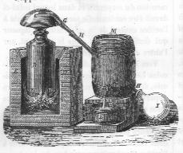
FIGURE XVII
(appareil de Nicolas Lefèvre pour la distillation du vin)la cucurbite en cuivre, C, le chapiteau condenseur, que l'auteur appelle tête de more. Au bec G de ce chapiteau s'adapte un tube, H H, qui traverse l'eau froide contenue dans un tonneau, M, eau que l'on renouvelle sans cesse et qui s'écoule par le robinet, K, dans un cuvier, L. Le liquide distillé est recueilli dans le récipient, I. Cet appareil est des plus remarquables. Il diffère si peu de notre alambic actuel, qu'il suffirait d'élargir la cucurbite, et de remplacer le tube droit qui traverse l'eau froide par un tube replié, c'est-à-dire par un serpentin, pour obtenir l'alambic en usage dans les laboratoires des pharmacies. Nicolas Lefèvre décrit un autre appareil dans lequel la chaudière est surmontée d'une sorte de soucoupe, que l'on remplit d'eau froide, et qui est munie latéralement d'un tube amenant les vapeurs dans le récipient. Sans nous arrêter à cet appareil, qui ne marque aucun progrès, nous en signalerons un troisième, plus important, que Nicolas Lefèvre donne comme propre à rectifier l'eau-de-vie. La figure IV représente cet appareil. On remarque un vaste chapiteau, qui a deux becs pour transmettre dans deux récipients la liqueur condensée, par l'apposition sur ce chapiteau, de linges mouillés. La cucurbite est semblable à la précédente :
[A, bain de sable contenu dans une chaudière en fer. P, cucurbite en cuivre enterrée dans le sable. C, collet de la cucurbite, D, chapiteau en cuivre, qui porte une gouttière et deux becs, E, collet du chapiteau qui s'ajuste sur le collet de la cucurbite. F. F, becs du serpentin qui portent immédiatement la liqueur dans les récipients, sans l'intermédiaire d'un condenseur; les vapeurs sont condensées dans le chapiteau par du linges mouillés, h, anneau de fer, pour soulever le chapiteau.]
Elle est plus large et beaucoup
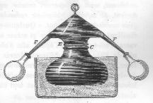
FIGURE XVIII
(appareil de Nicolas Lefèvre pour la distillation des eaux-de-vie)moins profonde. Le fourneau ne diffère du précédent qu'en ce qu'il renferme un bain de sable dans lequel la chaudière est enterrée. Il a, comme le premier, quatre registres.
On remarquera qu'on n'aperçoit pas de condenseur à cet alambic : c'est sans doute parce que les condenseurs n'étaient inventés que depuis peu de temps, ou qu'on ne
les trouvait pas tout à fait propres à remplir les fonctions pour lesquelles on les avait imaginés. Peut-être, aussi, Nicolas Lefèvre, qui partageait les idées des Anciens, craignait-il d'enlever à l'alcool cette chaleur dans laquelle on pensait que résidait toute sa vertu. On était persuadé que l'alcool acquérait d'autant plus de force qu'il demeurait plus longtemps en contact avec le feu.Ce n'est point un hasard si nombre de textes alchimiques évoquent l'esprit-de-vin [Ulsted a écrit un traité sur les distillations qui a été célèbre immédiatement, cf. le Char de Triomphe de l'antimoine]. Car l'eau et l'alcool sont les deux liquides où la dissolution de sesquichlorure d'or est soluble. Cette dissolution est, en quelque sorte, le point de départ pour arriver à toutes les autres préparations auriques. C'est la véritable manière hermétique d'ouvrir le « corps de l'or » pour employer le langage des alchimistes.
Une fois encore, nous citerons Buffon, et ce ne sera pas sans raison. N'est-ce pas, en effet, G. Daubrée, qui, dans son rapport sur les progrès de la géologie en France, a indiqué que :
"Buffon, qui a porté ses grandes vues sur toutes les branches des sciences naturelles et qui, partout, on doit le rappeler pour sa gloire comme pour l'exemple, a cherché à les contrôler par l'expérimentation, avait rigoureusement constaté, par des essais directs, que le granite et les principales roches cristallisées sont fusibles et vitrescibles. Se basant sur le fait qui vient d'être rappelé, il pensait que de grandes masses de verre naturel avaient pu acquérir leur état cristallin à la suite d'un recuit plus ou moins long [Histoire naturelle des minéraux, substances vitreuses des granits]."
et encore ceci :
"Buffon avait en outre bien remarqué que le feldspath est beaucoup plus fusible que les deux autres éléments du granit. Leibnitz, il est vrai, avait déjà dit que la terre et les pierres soumises au feu donnent du verre ; que le verre n'est que la base de pierres [Protogée, §3] ; mais il confondait ici toutes les roches, y compris le calcaire, le silex et le sable [...]"
Nous laissons au lecteur le soin de consulter la section du Mercure de nature et celle sur les blasons alchimiques pour en apprendre plus sur ce sujet précis. Pour l'heure, nous citerons donc ces quelques réflexions de Buffon à propos de l'or et du grand oeuvre :
Georges-Louis LECLERC, comte de BUFFON (1707-1788)On n'a jamais trouvé de précipités d'or, ni d'or fulminant dans le sein de la terre ; la raison en deviendra sensible si l'on considère en particulier chacune des combinaisons nécessaires pour produire ces précipités ; d'abord on ne peut dissoudre l'or que par deux puissances réunies & combinées, l'acide nitreux avec l'acide marin, ou le soufre avec l'alkali, & la réunion de ces deux substances actives, doit être très rare dans la Nature, puisque les acides & les alcalis , tels que nous les employons, sont eux-mêmes des produits de notre art, & que le soufre natif n'est aussi qu'un produit des volcans ; ces raisons sont les mêmes, & encore plus fortes pour les précipités d'or ; car il faut une troisième combinaison pour le tirer de sa dissolution, au moyen du mélange de quelqu'autre matière avec laquelle le dissolvant ait plus d'affinité qu'avec l'or; & ensuite pour que ce précipité puisse acquérir la propriété fulminante, il faut encore choisir une matière entre toutes les autres qui peuvent également précipiter l'or de sa dissolution : cette matière est l'alkali volatil, sans lequel il ne peut devenir fulminant ; cet alkali volatil est le seul intermède qui dégage subitement l'air & cause la fulmination ; car s'il n'est point entré d'alcali volatil dans la dissolution de l'or, & qu'on le précipite avec l'alcali fixe ou toute autre matière, il ne sera pas fulminant ; enfin il faut encore lui communiquer une assez forte chaleur pour qu'il exerce cette action fulminante ; or toutes ces conditions réunies ne peuvent se rencontrer dans le sein de la terre, et dès-lors il est sûr qu'on n'y trouvera jamais de l'or fulminant. On sait que l'explosion de cet or fulminant est beaucoup plus violente que celle de la poudre à canon , & qu'elle pourrait produire des effets encore plus terribles, & même s'exercer d'une manière plus insidieuse, parce qu'il ne faut ni feu, ni même une étincelle, & que la chaleur seule, produite par un frottement assez léger, suffit pour causer une explosion subite & foudroyante. On a ce me semble vainement tenté l'explication de ce phénomène prodigieux ; cependant en faisant attention à toutes les circonstances, & en comparant leurs rapports, il me semble qu'on peut au moins en tirer des raisons satisfaisantes & très plausibles sur la cause de cet effet : dans l'eau régale, dont on se sert pour la dissolution dé l'or, il n'est point entré d'alkali volatil, soit sous sa forme propre , soit sous celle du sel ammoniac, de quelque-manière & avec quelque intermède qu'on précipite ce métal, il ne fera ni ne deviendra fulminant, à moins qu'on ne se serve de l'alkali volatil pour cette précipitation ; lorsqu'au contraire la dissolution sera faite avec le sel ammoniac, qui toujours contient de l'alcali volatil, de quelque manière & avec quelqu'intermède que l'on fasse la précipitation, l'or deviendra toujours fulminant : il est donc assez clair que cette dualité fulminante, ne lui vient que de l'action ou du mélange de l'alkali volatil, & l'on ne doit pas être incertain sur ce point, puisque ce précipité fulminant, pèse un quart de plus que l'or dont il est le produit ; dès-lors ce quart en sus de matière étrangère, qui s'est alliée avec l'or dans ce précipité n'est autre chose, du moins en grande partie, que de l'alkali volatil ; mais cet alcali contient, indépendamment de son sel, une grande quantité d'air inflammable, c'est-à-dire , d'air élastique mêlé de feu ; dès-lors il n'est pas surprenant que ce feu ou cet air inflammable, contenu dans l'alkali volatil, qui se trouve pour un quart incorporé avec l'or, ne s'enflamme en effet par la chaleur, et ne produise une explosion d'autant plus violente, que les molécules de l'or dans lesquelles il est engagé sont plus massives & plus résistantes à l'action de cet élément incoercible, & dont les effets font d'autant plus violents que les résistances sont plus grandes. [...] Au reste, on ne doit pas oublier qu'en général les précipités d'or lorsqu'ils sont réduits, sont à la vérité toujours de l'or ; mais que dans leur état de précipité, et avant la réduction, ils ne sont pas, comme l'or même, inaltérables, indestructibles, etc. Leur essence n'est donc plus la même que celle de l'or de nature, tous les acides minéraux ou végétauxb)- les composés chlorurés[le vinaigre n'attaque point l'or tant qu'il est en masse ; mais si après avoir dissous ce métal dans l'eau régale, on le précipite par l'alkali fixe, le vinaigre dissout ce précipité ; cette dissolution par le vinaigre est de même précipitée par l"alkali fixe et par l'alakli volatil, et le précipité formé par cette dernière substance est fulminant, Eléments de Chimie, M. de Morveau, tome III],
et même les simples acerbes, tels que la noix de gale
[Fulcanelli évoque de façon explicite « l'étain grenaillé et la noix de gale » comme participant du Mercure : la dissolution d'or est précipitée avec le temps, par l'infusion de noix de gale, il se forme insensiblement des nuages de couleur pourpre qui se répandent dans toute la liqueur ; l'or ne se dépose au fond du vase qu'en très petite quantité, il se ramasse presque entièrement à la surface de la liqueur où il paraît avec son éclat métallique. M. Monnet - Dissolution des Métaux, p. 127 - assure que l'or précipité par l'extrait acerbe, est soluble dans l'acide nitreux - nitrique ? - et que cette dissolution est très stable, de couleur bleuâtre, et qu'elle n'est pas précipitée par l'alkali fixe].
[...] les précipités de l'or ressemblent à cet égard aux métaux imparfaits et peuvent par conséquent être altérés de même et minéralisés [...] Il ne faut qu'une petite quantité d'acide marin, mêlé à l'acide nitreux [nitrique], pour dissoudre l'or ; mais la meilleure proportion est de quatre parties d'acide nitreux et une partie de sel ammoniac. Cette dissolution est d'une belle couleur jaune, et lorsque ces dissolvants sont pleinement saturés, elle devient claire et transparente ; dans tout état, elle teint en violet plus ou moins foncé toutes les substances animales : si on la fait évaporer, elle donne en se refroidissant des cristaux d'un beau jaune transparent ; et si l'on pousse plus loin l'évaporation au moyen de la chaleur, les cristaux disparaissent, et il ne reste qu'une poudre jaune et très fine qui n'a pas le brillant métallique.[...] c'est l'alkali volatil qui, de toutes les matières connues, est le plus propre [à dissoudre l'or] ; il réduit l'or plus promptement que les alkalis fixes ou les métaux ; ceux-ci changent la couleur du précipité ; par exemple, l'étain lui donne la belle couleur pourpre qu'on emploie dans nos porcelaines. L'or pur a peu d'éclat, et la couleur jaune est assez matte ; le mélange de l'argent le blanchit, celui du cuivre le rougit ; le fer lui communique sa couleur, une partie d'acier fondue avec cinq parties d'or pur, lui donne la couleur du fer poli ; L'on connaît en chimie
[les précipités que l'on obtient lorsqu'on décompose la dissolution de l'or dans l'eau régale, au moyen de l'argent, du cuivre, du fer et des régules de cobalt et de zinc, sont des molécules d'or revivifiées par la voie humide ; au lieu que si on emploie l'étain, le plomb, l'antimoine, le bismuth et l'arsenic, les résultats de ces opérations sont des chaux d'or, susceptibles de se vitrifier au moyen des substances vitreuses qu'on y ajoute et qui en reçoivent une couleur pourpre...Les précipités que l'on obtient par l'intermède du plomb sont d'un gris-noirâtre ; celui de l'étain est pourpre...Lorsqu'on fait fulminer de l'or sur de l'étain, du plomb, de l'antimoine, du bismuth et de l'arsenic, on obtient une chaux pourpre analogue au précipité de Cassius ; au lieu que l'or fulminant sur l'argent, le cuivre, le fer, le cobalt et le zinc, se revivifie et s'incruste sur ces régules métalliques - Lettres du docteur Demeste, tome II.]
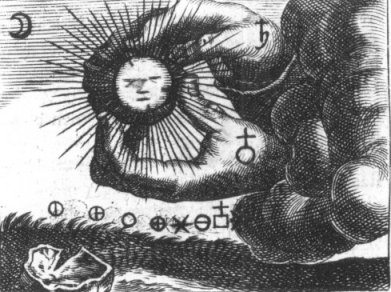
FIGURE XIX
(Lion Vert, Goossen Van Vreeswijk)
des procédés par lesquels on peut donner aux précipités de l'or, les plus belles couleurs, pourpre, rouge, verte, etc. Ces couleurs sont fixes et peuvent s'employer dans les émaux : le borax blanchit l'or plus que tout autre mélange, et le nitre lui rend la couleur jaune que le borax avait fait paraître. [...] Les chimistes ont recherché avec soin les affinités de ce métal tant avec les substances naturelles qu'avec celles qui ne sont que le produit de nos arts, et il s'est trouvé que ces affinités étaient dans l'ordre suivant :
1)- l'eau régale ; l'or a aussi beaucoup d'affinités avec les substances huileuses, volatiles et atténuées, telles que les huiles essentielles des plantes aromatiques, l'esprit de vin et surtout l'éther
2)- le foie de soufre [pentasulfure de potassium] ;
3)- le mercure ;
4)- l'éther ;
5)- l'argent ;
6)- le fer ;
7)- le plomb.
[l'éther, de même que toutes les substances huileuses très ténues et très volatiles, a la propriété d'enlever l'or de sa dissolution dans l'eau régale ; et comme l'éther est plus subtil qu'aucune de ces matières, il produit aussi beaucoup mieux cet effet ; il suffit de verser de l'éther sur une dissolution d'or, de mêler les deux liqueurs en secouant la fiole ; aussitôt que le mélange est en repos, l'éther se débarrasse de l'eau régale et la surnage ; alors l'eau régale dépouillée d'or devient blanche, tandis que l'éther se colore en jaune ; de cette manière on fait très promptement une teinture d'or ou or potable, mais peu de temps après l'or se sépare de l'éther, reprend son brillant métallique et paraît cristallisé à la surface - Eléments de Chimie, M. de Morveau, tome III].
[...] d'où l'on peut conclure qu'en général, c'est avec les matières qui contiennent le plus de principes inflammables et volatiles que l'or a le plus d'affinité, et dès lors on n'est pas en droit de regarder comme une chimère absurde l'idée que l'or rendu potable peut produire quelque effet dans les corps organisés , qui, de tous les êtres, sont ceux dont la substance contient la plus grande quantité de matière inflammable & volatile, & que par conséquent, l'or extrêmement divisé puisse y produire de bons ou de mauvais effets; suivant les circonstances et & les différents états où se trouvent ces mêmes corps organisés. Il me semble donc qu'on peut se tromper en prononçant, affirmativement fur la nullité des effets de l'or pris intérieurement, comme remède, dans certaines maladies, parce que le Médecin ni personne, ne peut connaître tous les rapports que, ce métal très atténué peut avoir avec le feu qui sous anime. Il en est de même de cette fameuse recherche appelée le grand oeuvre, qu'on doit rejeter en bonne morale, mais qu'en saine physique l'on ne peut pas traiter d'impossibilité on fait bien de dégoûter ceux qui voudraient se livrer à ce travail pénible & ruineux, qui, même fût-il suivi du succès, ne serait utile en rien à la société ; mais pourquoi prononcer d'une manière décidée que la transmutation des métaux est absolument impossible, puisque nous ne pouvons douter que toutes les manières terrestres, & même les éléments, ne soient tous convertibles ; qu'indépendamment de cette vue spéculative, nous connaissons plusieurs alliages dans lesquels la matière des métaux se pénètre et augmente de densité l'essence de l'or consiste dans la prééminence de cette qualifié, & toute matière qui, par le mélange, obtiendrait le même degré de densité, ne serait-elle pas de l'or ? ces métaux mélangés, que l'alliage rend spécifiquernent plus pesants par leur pénétration réciproque, ne semblent-ils pas nous indiquer qu'il doit y avoir d'autres combinaisons où cette pénétration étant encore plus intime, la densité deviendrait plus grande ? On ne connaissait ci-devant rien de plus dense que le mercure après l'or; mais on a récemment découvert le platine, ce minéral nous présente l'une de ces combinaisons où la densité se trouve prodigieusement augmentée, & plus que moyenne entre celle du mercure & celle de l'or ; mais nous n'avons aucun exemple, qui puisse nous mettre en droit de prononcer qu'il y ait dans la Nature des substances plus denses que l'or, ni des moyens d'en former par notre art ; notre plus grand chef-d'oeuvre serait en effet d'augmenter la densité de la matière, au point de lui donner la pesanteur de ce métal ; peut-être ce chef d'oeuvre n'est-il pas impossible, et peut-être même y est-on parvenu ; car dans le grand nombre des faits exagérés ou faux, qui nous ont été transmis au sujet du grand oeuvre, il y en a quelques-uns [Buffon parle d'un fait de transmutation du fer en or, cité par Model dans ses Récréations chimiques, traduites en français par M. Parmentier] dont il me paraît assez difficile de douter ; mais cela ne nous empêche pas de mépriser, & même de condamner tous ceux qui, par cupidité, se livrent à cette recherche, souvent même sans avoir les connaissances nécessaires pour se conduire dans leurs travaux : car il faut avouer qu'on ne peut rien tirer des livres d'Alchimie ; ni la Table hermétique, ni la Tourbe des Philosophes, ni Philalèthe & quelques autres que j'ai pris la peine de lire
[je puis même dire que j'ai vu un bon nombre de ces Messieurs adeptes, dont quelques-uns sont venus de fort loin pour me consulter, disaient -ils, et me faire part de leurs travaux ; mais tous ont bientôt été dégoûtés de ma conversation par mon peu d'enthousiasme],
& même d'étudier, ne m'ont présenté que des obscurités, des procédés inintelligibles où je n'ai rien aperçu, & dont je n'ai pu rien conclure, sinon que tous ces chercheurs de pierre philosophale, ont regardé le mercure comme la base commune des métaux & surtout de d'or & de l'argent. Bécher avec sa terre mercurielle, ne s'éloigne pas beaucoup de cette opinion ; il prétend même avoir trouvé le moyen de fixer cette base commune des métaux, mais s'il est vrai que le mercure ne se fixe en effet que par un froid-extrême, il n'y a guère d'apparence que le feu des fourneaux de tous ces chimistes ait produit le même effet ; cependant on aurait tort de nier absolument la possibilité de ce changement d'état dans le mercure, puisque malgré la fluidité qui lui paraît être essentielle, il est dans le cinabre sous une forme solide, & que nous ne savons pas si sa substance ou sa vapeur, mêlée avec quelqu'autre matière que le soufre, ne prendrait pas une forme encore plus solide, plus concrète & plus dense. Le projet de la transmutation des métaux & celui de la fixation du mercure doivent donc être rejetés, non comme des idées chimériques ni des absurdités, mais comme des entreprises téméraires, dont le succès est plus que douteux ; nous sommes encore si loin de connaître tous les effets des puissances de la Nature, que nous ne devons pas les juger exclusivement par celles qui nous sont connues, d'autant que toutes les combinaisons possibles ne sont pas à beaucoup près épuisées, & qu'il nous reste sans doute plus de choses à découvrir que nous n'en connaissons.
Le protochlorure est d'un jaune pâle. - La chaleur le réduit très aisément. - L'eau ne l'altère pas à froid ou dans l'obscurité ; mais au contact de la lumière ou à l'aide de la chaleur elle se change en or métallique et en deutochlorure. -Les acides oxygénés, saturés d'oxygène produisent le même effet : les deux tiers de l'or se séparent à l'état métallique. - Les alcalis en dissolutions étendues le décomposent totalement et le changent en protoxyde. -- On l'obtient eu chauffant avec précaution du deutochlorure d'or à la température de 200 à 230° jusqu'à ce qui ne se dégage plus de chlore , puis lavant le résidu avec de l'eau froide dans l'obscurité pour enlever la portion de perchlorure qui a pu résister à la décomposition.
Le perchlorure est d'un rouge-brun très foncé, déliquescent, incristallisable, très soluble dans l'eau et dans l'alcool, qu'il colore en rouge de rubis. Desséché il est anhydre - La chaleur le réduit aisément en le faisant passer à l'état de protochlorure. La lumière solaire le réduit aussi au bout d'un certain temps. - Lorsqu'on l'agite avec l'éther il se dissout, et la liqueur se partage par le repos en deux parties, l'une inférieure incolore, qui n'est que l'eau chargée d'acide hydro-chlorique, et l'autre d'un beau jaune qui surnage, et qui contient tout l'or. - On ne connaît pas bien sa nature. On employait autrefois cette dissolution jaune dans la médecine, sous le nom d'or potable. Elle est extrêmement caustique. Elle se décompose spontanément, et au bout d'un certain temps presque tout l'or s'en sépare à l'état métallique sous forme de petits cristaux brillants. - Quand on chauffe une dissolution de perchlorure d'or avec de l'acide sulfurique, de l'acide phosphorique ou de l'acide arsénique, au moment où la température approche de 150° il se dégage du chlore, et il se dépose du protochlorure d'or mélangé d'or métallique. Ces acides n'agissent qu'en ce qu'ils permettent à la liqueur de prendre une température élevée ; aussi les acides très volatils n'agissent-ils sur le chlorure d'or que comme l'eau pure. Les acides acétique, citrique et tartrique ne le réduisent pas. L'acide oxalique le réduit en quelques jours. Les acétates, citrates et tartrates le réduisent , mais très lentement. L'oxalate acide de potasse le réduit en moins de vingt-quatre heures, et l'oxalate neutre en quelques heures seulement
; la réduction a lieu avec dégagement de d'acide carbonique.
Le perchlorure d'or forme avec l'acide hydro-chlorique une combinaison que l'on considère soit comme un hydro-chlorate de chlorure, soit comme un chlorure d'or et d'hydrogène. C'est ce qu'on nommait autrefois le muriate acide : - Cette combinaison est d'un beau jaune d'or; elle est moins soluble dans l'eau que le chlorure, et elle cristallise aisément par refroidissement en aiguilles on en petits prismes allongés. Lorsqu'on la soumet à l'action de la chaleur il s'en dégage d'abord de l'acide hydro-chlorique, puis un mélange de cet oxyde et de chlore, et il reste du perchlorure mêlé de protochlorure.
Le perchlorure d'or a grande tendance à se combiner avec le chlorure de potassium, avec le chlorure de sodium, et la plupart des autres chlorures. Ces combinaisons se produisent dés que la chlorures se trouvent ensemble dans une même dissolution. Cette propriété explique les phénomènes qui ont lieu quand on traite le chlorure d'or par les bases. Les réactifs les plus employés dans le but de reconnaître les dissolutions auriques sont le protosulfate de fer et le protochlorure d'étain. On vient de voir que le perchlorure [sesquichlorure] d'or a une grande tendance à se combiner avec d'autres chlorures : on connaît ainsi beaucoup de chlorures doubles ou de chlorosels auriques, en particulier :- le chlorure d'or et de potassium ;
- le chlorure d'or et de sodium ;
- le chlorure d'or ammoniacal.La potasse et la soude caustiques décomposent les dissolutions de ce chlorure ; il se fait un précipité pulvérulent noirâtre d'autant moins abondant qu'on emploie plus d'alcali, et qui ne s'élève jamais à plus d'un dixième de la quantité d'or contenue dans la dissolution. Ce précipité est de l'oxyde anhydre qui retient un peu de potasse. La liqueur surnageante est à peine colorée en jaune verdâtre : elle tient en dissolution un mélange de chlorure double et d'aurate de potasse. En la saturant d'un acide elle redevient jaune, et l'addition d'un alcali peut ensuite en précipiter une certaine quantité d'or. Lorsqu'on chauffe une dissolution de chlorure d'or avec de la magnésie sans excès, il se précipite de l'hydrate d'or imprégné de chlorure d'or et de magnésie, et la liqueur, qui est d'un jaune brunâtre, contient encore du chlorure d'or ; mais quand on met un excès de magnésie, le précipité est de l'aurate de magnésie sans chlorure de magnésium et la liqueur retient en dissolution un peu d'aurate de magnésie. - L'oxyde de zinc se comporte comme la magnésie avec le chlorure d'or. Ainsi, les bases salifiables oxydent l'or pour s'emparer du chlore avec lequel il est combiné, et si elles sont en quantité suffisante, elles s'unissent à l'oxyde formé. L'ammoniaque précipite des dissolutions de chlorure d'or de l'or fulminant en poudre jaune. Les carbonates alcalins se comportent comme les alcalis caustiques avec le chlorure d'or.
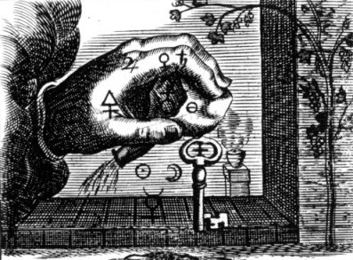
FIGURE XX
(Lion Vert, Goossen Van Vreeswijk)
On se sert de la dissolution d'or dans l'eau régale pour dorer les métaux en les frottant avec un bouchon imbibé de cette dissolution. On l'emploie aussi pour préparer l'or divisé, le précipité pourpre, l'oxyde d'or, etc. Beaucoup de substances précipitent l'or à l'état métallique [charbon, phosphore, azote, la plupart des substances végétales et animales, la plupart des métaux, les acides sulfureux, phosphoreux, nitreux, les sulfites, les sels de protoxyde de mercure et de protoxyde de fer]. La noix de galle colore d'abord la dissolution en vert ; mais cette couleur disparaît peu à peu à mesure que le précipité se forme. avec les sels de protoxyde de mercure, le dépôt est mêlé de protochlorure de mercure qu'on peut en séparer par la chaleur. Avec les sels de protoxyde de fer, le précipité est pur si la liqueur est maintenue acide. C'est par le moyen du protosulfate de fer qu'on prépare ce qu'on appelle l'or divisé, qu'on applique sur les émaux avec un fondant.L'acide aurique - Lorsqu'on verse de la potasse sur une dissolution de sesquichlorure d'or, il n'y a point de précipité ; mais si après avoir fait bouillir le mélange, on y ajoute un léger excès d'acide acétique [on comprend à présent pourquoi les textes alchimiques parlent souvent du vinaigre], il se forme un dépôt pulvérulent jaune de sesquioxyde d'or ou acide aurique. On peut obtenir aussi de l'acide aurique en saturant une dissolution de sesquichlorure d'or par du carbonate de soude, et en faisant bouillir la liqueur : l'acide aurique se précipite alors sous forme d'une poudre brune hydratée. Il se décompose sous l'action de la lumière, de la chaleur et des corps réducteurs. L'esprit de sel le transforme en sesquichlorure d'or. Notez que l'acide aurique correspond au peroxyde d'or, qui est un corps noir ; son hydrate est d'un jaune rougeâtre.
Le protoxyde d'or - On fait digérer du protochlorure d'or dans une dissolution de potasse : il se forme une poudre violette insoluble, décomposable à 250°C. Cet oxyde n'est pas directement salifiable, mais on connaît une combinaison de protoxyde d'or avec l'acide hyposulfureux, et un hyposulfite double de protoxyde d'or et de sodium, découvert par Gelis et Fordos. On prépare ce sel en précipitant, par l'alcool, un mélange de deux dissolutions concentrées, l'une de sesquichlorure d'or, l'autre d'hyposulfite de soude : le précipité est purifié par des dissolutions dans l'eau et des précipitations successives par l'alcool [voyez les textes présentés ci-dessus sur l'or potable ; ils se rapprochent beaucoup de ce procédé]. Ce sel double est incolore et cristallise en aiguilles déliées ; il est très soluble dans l'eau, à peine soluble dans l'alcool et d'une saveur sucrée [plusieurs textes parlent de cette saveur sucrée]. Convenablement chauffé, ce sel laisse pour résidu de l'or métallique et du sulfate de soude [sel admirable de Glauber] ; l'esprit de nitre le décompose en donnant lieu à un dépôt d'or. Il y a plus : l'or se trouve tellement dissimulé dans ce composé qu'il n'est décelé ni par le sulfate de fer, ni par le protochlorure d'étain, ni par l'acide oxalique [ce sel est donc un composé où l'or « se cache » : serait-ce l'or hermétique ?]. Lorsqu'on en traite la dissolution aqueuse par du chlorure de barium, il se dépose un hyposulfite double d'or et de baryte, dont la composition ressemble à celle du sel double alcalin, d'où il sort. Si, au moyen de l'huile de vitriol, on enlève toute la baryte du dépôt salin, on a pour résidu l'hyposulfite de protoxyde d'or : cet hyposulfite double d'or et de soude est employé pour fixer les images daguerriennes [E. Canseliet insiste à plusieurs reprises sur la photographie et il cite notamment Charles Cros dont nous avons parlé dans une autre section].A ce propos, nous venons de voir que l'or peut « être voilé » dans ce sel double. Profitons-en pour signaler de quelle manière on peut caractériser l'or :
- l'ammoniaque donne lieu à un précipité jaune d'or d'or fulminant et les sulfures alcalins à un dépôt noir de sulfure d'or ;
- le protochlorure d'étain colore en rouge brun foncé les dissolutions auriques [ce qui se rapproche du pourpre de Cassius] ;
- le protosulfate de fer les colore en vert violet, coloration qui signale toujours de l'or à l'état extrêmement divisé ;
- l'acide oxalique à chaud met en liberté le métal des dissolutions auriques mais l'or n'est pas dans un état très divisé : l'aspect de la liqueur est d'un jaune mat [cf. supra pour ce qu'on a dit sur la couleur réelle de l'or].Pour obtenir de l'hyposulfite de soude, on chauffe dans une capsule de porcelaine un mélange formé de 100 parties de carbonate de soude sec et de 30 parties de fleur de soufre. On remue la masse pour renouveler sa surface et faciliter ainsi l'action de l'oxygène sur le sulfure de sodium qui se forme tout d'abord. On dissout dans l'eau, on filtre et on fait bouillir la liqueur avec des fleurs de soufre. Dès que le liquide est devenu presque incolore, on le filtre de nouveau et on le fait évaporer pour avoir de beaux cristaux. L'hyposulfite de soude est incolore, inodore, d'une saveur très amère et nauséabonde, inaltérable à l'air, très soluble dans l'eau et insoluble dans l'alcool. Sous l'action de la chaleur, il subit la fusion aqueuse, puis il devient anhydre : en chauffant davantage, il se décompose en sulfate de soude et en pentasulfure de sodium. Ce sel dissout plusieurs oxydes métalliques qu'il précipite plus tard sous forme de sulfure : il dissout aussi avec une grande facilité des composés chlorurés de l'argent qui justifie son emploi dans la photographie et le daguerréotype. C'est un corps réducteur de premier ordre.
Signalons enfin, ce qui introduira le prochain chapitre, que l'oxyde d'or se combine avec les substances vitreuses et avec le borax, et il colore ces substances en un très beau jaune. P. Berthier signale qu'un des meilleurs moyens de préparer l'oxyde d'or et son hydrate consiste à faire chauffer de la magnésie ou de l'oxyde de zinc en excès avec une dissolution de sesquichlorure d'or, et à laver le dépôt avec de l'esprit de nitre qui décompose l'aurate formé.
Nous voila donc avec de l'or dissous sous forme de sesquichlorure, « or potable », des chlorures d'étain [nommés « sceptre de Jupiter »]. Que pouvons-nous réaliser avec ces matières ? C'est ce que nous allons étudier dans les deux chapitres suivants.
Il s'agit d'une substance à laquelle la peinture vitrifiable doit ses belles couleurs carminées et que Cassius découvrit en 1683. Il semble en fait que le pourpre était connu avant Cassius. Je dois à M. Philippe Litzler des commentaires du plus haut intérêt sur ce point précis. Les voici :
Dans le livre La Pierre Philosophale de Saint Thomas d'Aquin suivi de L'Art de l'Alchimie traduit et commenté par Grillot de Givry (Editions Archè), ce dernier écrit : « Comme on le voit, la dissolution préalable est d'une nécessité absolue, ainsi qu'il est dit au chapitre IX du Grand éclaircissement de la Pierre philosophale, de Nicolas Flamel. Or, comme par la succession des temps, certains secrets se révèlent à point nommé, nous pouvons soulever un peu ici le voile mystérieux du magistère. Suivant Albert Poisson, on doit faire cristalliser le chlorure aurique au bain-marie. Mais il vaudrait mieux accomplir l'opération que Saint Thomas a décrite au chapitre VIII du premier traité, et qui est la réduction immédiate du chlorure aurique par le chlorure stanneux, et qui donne un précipité pourpre que l'on appelle encore Pourpre de Cassius, mais qui était connu bien avant ce chimiste :
H2O + Au2O (SnO2)3
Nous avons encore obtenu le beau précipité d'or métallique par l'acide oxalique ou d'autres précipités encore par les acides phosphoreux, sulfureux, hydrophosphoreux, et surtout par le phosphore. Mais il est un procédé qui donne un résultat extraordinaire qui consiste à remplacer le chlorure aurique par le fluorure aurique qu'on obtiendra avec une eau régale beaucoup plus puissante que l'eau régale ordinaire, et composée d'acide fluorhydrique et d'acide nitrique. Mais l'expérience offre de grands dangers à cause de la corrosivité de l'acide fluorhydrique. Comme il est nécessaire de dissoudre l'or et que les traités enseignent généralement que l'eau régale possède cette propriété, il ne sera pas superflu d'indiquer ici que la simple dissolution de gaz chlore à l'état naissant produit cet effet ; que l'acide iodique mélangé avec l'acide nitrique en excès, dissout également l'or. Nous avons expérimenté également l'acide paratartrique additionné d'acide acétique, procédé enseigné par le vicomte de Lapasse, puis un mélange d'acide sulfurique et d'acide acétique chauffés. De plus, l'alcool dissout l'or par un procédé secret. (Voir Manusc. de la Bibl. du Vatican, n. 4095, fol. 9. Et aussi de Castaigne, Le Paradis Terrestre, 1661, page 32.). Nous avons expérimenté plusieurs fois ce procédé absolument exact. Enfin, les sucs gastriques extraits récemment du corps de l'homme ou des animaux dissolvent l'or et tous les métaux (Expérience de Sèvres.).
Guyton de Morveau a fait, en outre, une observation de la plus haute importance et bien oubliée:
« L'or, dit-il, (Eléments de chymie, tome II, p. 85) est aussi calciné et réduit en chaux pourpre, par une forte décharge électrique... Mais la même décharge revivifie l'or en chaux, comme elle réduit la chaux de plomb. »
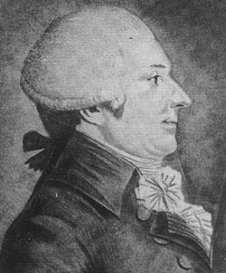
GUYTON de MORVEAU
La formule usuelle du Pourpre de Cassius est la suivante:
3 SnCl2 + 2 AuCl3 + 6 H2O ---> 2 Au + 3 Sn02 + 12 HCl
(généralement on utilise le chlorure d'or H[AuCl4])Cassius (fils) n'a fait que mettre par écrit dans son livre De Auro (1685) une méthode déjà connue depuis bien longtemps: Glauber, Kunckel et Libavius l'avait déjà testée. Dans un couvent de Bologne (San Salvatore) le procédé était également connu grâce à un manuscrit intitulé Segreti per Colori et écrit en latin au début du XVe siècle, mais on pense que Geber le connaissait également (Ganzenmuller, pg 183, L'Alchimie au Moyen-Âge).
Voici en tout cas une recette trouvée sur une tablette encore plus ancienne (in Les origines de l'Alchimie dans l'Egypte Gréco-Romaine de Jack Lyndsay, Editions Le Rocher, Jean-Paul Bertrand éditeur, Monaco, page 233 {j'en profite pour signaler que Lyndsay a pillé des passages entiers de La révélation d'Hermès Trismégiste de Festugière chaque fois qu'il avait un blanc &]):
La bibliothèque d'Assurpanipal nous a laissé de nombreuses tablettes traitant du verre. Dans la fabrication de celui-ci, les éléments fondamentaux sont la silice, un alcali et la chaux (ou quelquefois l'oxyde de plomb) ; on ajoute en général un agent décolorant tel que le manganèse. L'analyse du verre constituant les vitres de Pompéi a révélé la composition suivante: silice 69%, soude 17%, chaux 7%, alumine 3%, oxyde de fer 1% ainsi que des traces de manganèse et de cuivre. Maints agents colorants entraient dans la composition du verre antique. Le verre bleu assyrien contenait du cuivre, le verre rouge de l'oxyde cuivreux. Le verre blanc contenait de l'oxyde d'étain, et dans le jaune, on a découvert de l'antimoniate de plomb.
Il semble qu'une recette présente sous une forme rudimentaire le Pourpre de Cassius, l'objectif étant d'obtenir un corail rose ou rouge. Les ingrédients sont 7200 parties de verre ordinaire, 32 d'oxyde d'étain, 20 d'antimoine, une quantité illisible de sel et de salpêtre, et une partie d'or. La proportion d'or (0.14%) est l'ordre habituel de grandeur pour la préparation du verre rubis.
Un texte mésopotamien, remontant au XVIIe siècle avant J.-C., au règne de Gulkizar, nous livre plusieurs recettes de chimie métallurgique:
« A une mine de verre zuku, ajouter 10 sicles de plomb, 15 de cuivre, 0.5 de salpêtre, 0.5 de chaux. Mettez -les à fondre et vous obtiendrez du cuivre de plomb. »
C'est donc vraisemblablement les Perses qui apportèrent aux Egyptiens l'art de colorier le verre avec des sels métalliques et Bolos de Mendès devait s'en souvenir puisqu'il dit avoir reçu son initiation de son maître Ostanès (sage persan mythique). C'est le chimiste Richard Zsigmondy (1865-1929) qui découvrit le premier la
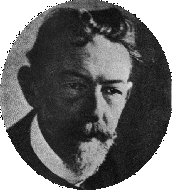
Richard ZSIGMONDY
nature colloïdale de l'or dans le Pourpre de Cassius et reçut pour cela un Prix Nobel (on voit combien ce problème hantait les chimistes de l'époque...).
L'oeuvre du Père de Castaigne, principal alchimiste du XVIIème, nommé Aumonier de Louis XIII par Marie de Médicis, nous a laissé quatre traités :
1. Le paradis terrestre
2. Le grand miracle de la nature métallique
3. L'or potable
4. Le thrésor philosophique de la médecine métallique.A ces notes, Philippe Litzler a bien voulu annexer ceci sur l'histoire du pourpre de Cassius :
Histoire du Pourpre de Cassius La découverte du Pourpre de Cassius, utilisé pour colorier le verre et la céramique en rouge profond (en fait la couleur peut varier du rose au brun), est attribuée au médecin Andreas Cassius, qui publia le livre De Auro en 1685 à Leyden. En réalité, ce pigment ne fut pas trouvé par lui puisqu'en 1659 circulait déjà une méthode détaillée pour préparer le composé à base d'or et qu'en 1676 le procédé fut même utilisé dans la manufacture de verre de Postdam pour la fabrication du verre rubis.
De plus, il n'y eut pas un, mais deux Andreas Cassius, le père et le fils. Il est possible que le père mit au point un procédé qui fut tenu secret. Le fils ne fit cependant pas mention de son père dans son livre.
Ce processus « d'or colloïdal » était connu depuis au moins deux millénaires puisque les Egyptiens et les Gréco-romains en font référence. Agricola le connaissait également ainsi que Paracelse, car au début du XVe siècle Benvenuto Cellini parle déjà d'un émail rouge transparent qu'il a vu chez un alchimiste qui était également orfèvre. Andreas Libavius indique dans son livre Alchimia en 1597 - qui constitue le premier vrai
Andreas LIBAVIUS
traité de chimie - qu'il est possible, à partir d'une teinture rouge d'or dissoute dans un liquide ou dans une huile, de préparer un cristal rouge sans trop de difficulté. En effet, quelques années par la suite, en 1612 plus exactement, apparut le premier traité sur la fabrication du verre. Il était écrit par le moine florentin Antonio Neri. Son livre, l'Arte Vetraria apportait une somme d'informations amassées durant ses séjours à Venise et à Anvers. Il fait, entre autres, référence à un rouge magnifique obtenu à partir de l'or.
Cependant ces textes ne parlent pas de la préparation à partir de l'étain. Ils indiquent l'emploi d'un précipité de poudre d'or qui acquiert la coloration pourpre par chauffage et que l'on incorpore à la «liqueur de flints» (silicate de potasse). Une approche plus intéressante sur le précipité pourpre est indiquée dans le manuscrit de Bologne, le Segreti per Colori écrit au début du XVe siècle dans le couvent San Salvatore. Ce document inclut une formule pour dissoudre l'oxyde d'étain dans une eau régal avec des marcassites aurifères pour obtenir un joli pourpre.
C'est à Johann Rudolph Glauber que revient le mérite d'avoir trouvé le premier un système plus effectif et plus économique pour obtenir la couleur désirée. Glauber était le premier chimiste «industriel» et il vivait de la vente de ses préparations médicinales dont le fameux «sal mirabila» (sulfate de soude). Il était un excellent manipulateur au laboratoire et également un créateur de fours. En 1648 il quitte sa Bavière natale pour se rendre à Amsterdam. C'est là qu'il publia la majorité de ses livres. Après la Guerre de Trente Ans qui ruina l'Allemagne, il publia un ouvrage en quatre volumes de 1656 à 1160 Des Teutschlandts Wohlfahrt (De la prospérité de l'Allemagne) où il exhorte ses concitoyens à enrichir leur pays par l'utilisation de leurs ressources naturelles, entre autres dans de nouvelles industries, comme celle du verre, à l'exemple de Venise et de la France.
Glauber était familier des précipités d'or effectués dans des solutions d'eau régale et il est le premier qui signale la possibilité d'effectuer ce précipité avec une solution d'étain. Dans son tome IV, publié en 1659, il indique de prendre 1 loth de poudre d'or très fine dissoute dans 3 à 4 loth d'un fort « Spiritu Salis » rectifié (acide chlorhydrique concentré) et d'y ajouter 12 à 15 loth d'eau pure puis une faible quantité d'étain, soit environ 2 loth ; après quoi on met le vaisseau au bain de sable et on laisse chauffer 1 à 2 heures sans porter à ébullition, ce qui provoque une précipitation de l'or sous forme d'une jolie et brillante poudre pourpre. On constate cependant une anomalie, puisque l'acide chlorhydrique n'attaque pas l'or. Glauber était un familier de l'eau régale, mais il avait trouvé qu'en distillant une solution concentrée de chlorure de zinc qu'il ajoutait à l'acide chlorhydrique il parvenait également à dissoudre l'or.
On ne sait pas si Glauber utilisait son précipité pourpre ; par contre un autre personnage, Johann Kunckel, en tira profit. Entré en 1678 au service du Prince Friedrich Wilhelm de Brandenberg, Grand Electeur, à la manufacture de verre de Postdam dont il avait reçu la charge, il venait juste de publier son livre Ars Vitra Experimentalis où il reprenait l'ancien travail de Neri ainsi que les observations effectuées par l'anglais Christopher Merret qui avait traduit Neri en anglais en 1662, en y ajoutant des notes personnelles. Ce traité fit date dans l'histoire de la verrerie et c'est là qu'il faut rechercher les références concernant le précipité pourpre décrit plus tard par Cassius. Kunckel utilisa avec succès ce précipité rouge pour produire du verre rubis, appelé «verre Kunckel».
Avant la publication de Cassius, il y eut un autre ouvrage qui sortit à Augsbourg en 1684 Sol Sine Veste, juste un an avant le De Auro. Il indiquait « Trente expériences pour extraire le pourpre de l'or ». Le livre émanait de Johan Christian Orschall, un ancien inspecteur général des mines du Landgrave de Hesse-Cassel d'où il avait été remercié pour ne pas avoir réussi à rendre les mines plus efficaces ou même les plus efficaces d'Europe, tache pour laquelle il avait été engagé. On l'accusait également de boisson et de polygamie, bien que son renvoi soit plutôt le fait de la jalousie de ses collègues. Il écrivit un livre sur la métallurgie publié en 1687 à Cassel Ars Fusoria Fundamentalis Experimentalis puis disparut ; on pense qu'il mourut dans un couvent en Pologne. Un peu alchimiste, il pratiquait des expériences sur l'or et, un jour qu'il versait de l'or en solution dans de l'eau régale, comme il n'avait pas d'autre vaisseau, il prit une bassine en étain. Celle-ci se coloria en pourpre. Orschall était en relation avec Cassius fils et essaya l'expérience devant lui, mais sans succès. Il lui expliqua alors l'histoire de la vaisselle d'étain, sur quoi Cassius lui demanda de garder le silence. On connaît la suite &
Sources principales: L.B. Hunt et Jacques van Lennep
Sa composition la plus probable semble être celle d'un double stannate de protoxyde d'or et d'étain mais pour certains, l'or est à l'état métallique [raison pour laquelle Fulcanelli emploie le terme -impropre ici- de colloïde parce que l'or est tenu en suspension dans la matière] et pour d'autres à l'état oxydé. Pour l'obtenir toujours avec une même composition, on peut procéder ainsi [cf. aussi section soufre et mercure] :
Pourpre de Cassius [1] On plonge quelques lames d'étain dans une dissolution de sesquichlorure d'or, neutre autant que possible, et qui doit être étendue de telle sorte que pour 1 g d'or, il y en ait 4 d'eau. Après quelques instants, il se forme un dépôt léger, floconneux d'un beau pourpre, qu'on lave par décantation et que l'on conserve d'ordinaire sous l'eau. Il est fort remarquable que l'or, dont l'affinité pour l'oxygène est si faible, s'oxyde pourtant avec une certaine facilité par cette sorte d'influence, encore incomprise, qu'on appelait autrefois affinité prédisposante, et que M. Liebig considère comme un phénomène de mouvement communiqué. Des expériences de Gay-Lussac ont fait connaître que si l'on traite par l'acide azotique [acide nitrique, eau-forte, aqua sicca] un alliage d'argent, d'étain et d'or, il se forme du pourpre de Cassius : mais l'or par lui-même n'étant pas attaqué par l'acide azotique, il faut en conclure qu'il l'est dans ce cas, parce que son oxyde peut se combiner avec un autre qui se forme en même temps. Sans l'oxydation de l'étain, celle de l'or n'aurait pas eu lieu. Cette observation ne s'applique pas seulement au cas où l'action oxydante est énergique ; M. Sarzeaud a trouvé du pourpre de Cassius dans d'anciennes monnaies d'argent qui étaient enfouies dans la terre, probablement depuis des siècles. Il est évident que l'argent avec lequel on avait fait ces pièces était impur, et contenait de l'or et de l'étain dont l'oxydation avait déterminé celle de l'autre métal ; car une pièce d'or enterrée ne s'oxyde jamais.
On appelle donc pourpre de Cassius le précipité d'un rouge pourpre qui se forme lorsqu'on mêle une dissolution d'or avec une dissolution de chlorure d'étain. On vient de voir que les avis divergeaient quant à la nature de l'or qui y est mêlé : Proust pensait que le précipité pourpre est un mélange d'or et d'étain métallique, l'un et l'autre très divisés et de deutoxyde d'étain. Berzelius croit que c'est un mélange variable d'alliage d'or et d'étain, de deutoxyde d'étain, d'un composé fait de protoxyde d'étain avec un oxyde d'or intermédiaire entre les deux oxydes connus [le protoxyde, d'un vert foncé ; le peroxyde, noir. Notez que le protoxyde est instable et qu'il se décompose spontanément en peroxyde et en or métallique]. M. Robiquet est aussi d'opinion que l'or s'y trouve à l'état d'oxyde ; mais selon M. Buisson, le pourpre ne serait jamais qu'un mélange de deutoxyde d'étain et d'or métallique dans un état de division extrême.Alliage de l'or et de l'argent
L'or et l'argent peuvent s'unir en toutes proportions par fusion rapide ; mais on prétend qu'en laissant refroidir lentement le mélange fondu il se sépare de l'argent un peu aurifère qui surnage sur un alliage composé de 5% d'or pour 1% d'argent. Les alliages d'or et d'argent sont plus fusibles que l'or pur et servent pour soudure. [...] Les alliages d'or et d'argent sont d'un blanc verdâtre et un 1/20e d'argent suffit pour changer tout à fait la couleur de l'or. [...] L'or vert dont on fait usage pour la bijouterie, contient 0.7 d'or et 0.3 d'argent. L'acide nitrique et l'acide sulfurique purs attaquent les alliages d'or et d'argent, et en séparent tout l'argent quand celui-ci dépasse une certaine proportion.
extrait du cours de chimie de Malaguti et du Traité des Essais par la voie sèche de Berthier Voyons à présent avec Henri Debray si l'on pourra en savoir plus sur la qualité de l'or uni à l'étain dans le pourpre de Cassius :
Pourpre de Cassius [2] Lorsqu'on verse dans une solution très-étendue de chlorure d'or une solution contenant à la fois du protochlorure et du bichlorure d'étain, on obtient un liquide brun, trouble par réflexion et pourpre par transmission,dans lequel se dépose peu à peu un précipité coloré : c'est le pourpre de Cassius, qui est, comme on le sait, la base de toutes les couleurs d'or employées dans la peinture vitrifiable, pour obtenir les roses, les rouges et les violets. On obtient encore le pourpre de Cassius dans d'autres circonstances ; sa composition varie avec son mode de préparation, mais, dans tous les cas, elle est telle qu'on peut toujours la représenter par du bioxyde d'étain hydraté et de l'or métallique ; sa couleur est aussi d'autant plus foncée qu'il contient plus d'or, mais elle ne diffère pas des tons que peut fournir la précipitation de l'or seul. Aussi Macquer, qui a fait le premier cette remarque, considérait-il le pourpre de Cassius comme un n mélange d'or et de bioxyde d'étain hydraté. Mais Proust ayant remarqué que le pourpre encore humide se dissout dans l'ammoniaque et qu'il ne cède pas d'or au mercure avec lequel on le triture, l'hypothèse du mélange fut généralement abandonnée, et le pourpre de Cassius fut considéré comme une combinaison. La seule manière rationnelle d'envisager la composition de ce corps était d'en faire un oxyde salin, c'est-à-dire un stannate de protoxyde d'étain et de sous-oxyde d'or, ce dernier contenant assez d'oxygène pour transformer le protoxyde d'étain en bioxyde. Cet oxyde salin pouvait d'ailleurs être mélangé d'hydrate stannique, en proportions variables. Il y a eu depuis Proust, beaucoup de travaux et de discussions sur la constitution du pourpre de Cassius ; il serait impossible de les résumer convenablement dans une courte Note; je dirai seulement qu'ils n'ont apporté aucun argument péremptoire où même nouveau en faveur de l'une ou de l'autre hypothèse, qui sont, à mon avis, également inexactes.
Je considère le pourpre de Cassius comme une laque d'acide stannique (ou métastannique) colorée par de l'or très-divisé ; la matière colorante de cette laque est devenue alors insoluble dans son dissolvant habituel, le mercure, comme les couleurs bon teint, dans la teinture ordinaire, résistent à l'eau par suite de leur union avec la fibre des tissus ou avec les mordants. Les expériences et les explications qui suivent justifieront complètement, je l'espère, cette nouvelle manière d'envisager le pourpre de Cassius.
On fait bouillir un mélange de solutions de bichlorure d'étain et d'acétate de soude ; le bioxyde se précipite. On verse alors dans la liqueur chaude un peu de chlorure d'or, puis de l'oxalate de potasse ; la réduction de l'or s'opère immédiatement ; une très-petite quantité de métal se dépose sur le verre, la presque totalité se précipite sur l'oxyde d'étain, qui prend alors la couleur ordinaire du pourpre dé Cassius.On peut produire une coloration tout à fait semblable de l'alumine, en précipitant l'or dans une liqueur qui contient de l'alumine en suspension. Pour cela, on ajoute, à du chlorure d'or saturé par de l'acétate de soude, de l'alumine en gelée, et, quand le mélange est chaud, on verse un peu d'oxalate de potasse qui détermine la réduction de l'or. Ces deux laques en suspension dans l'eau, agitées pendant plusieurs heures avec du mercure, n'ont pas perdu leur couleur. Le procédé habituel de préparation du pourpre de Cassius ne diffère évidemment du précédent qu'en ce que l'oxyde et la matière colorante sont précipités en même temps ; ce qui est évidemment préférable au point de vue de la beauté de la teinte, et, si l'on peut dire, de la solidité du produit, vis-à-vis du mercure. Il reste maintenant à expliquer la solubilité de cette laque dans l'ammoniaque. On sait que l'oxyde d'étain précipité à froid est soluble dans l'ammoniaque lorsqu'il est humide, et qu'il perd cette solubilité sous diverses influences, telles qu'une élévation de température, et notamment par la dessiccation : ce sont exactement les mêmes influences qui font perdre au pourpre de Cassius sa solubilité. Il faut bien remarquer, en outre, que la solution de pourpre de Cassius, qui est toujours trouble par réflexion, laisse déposer lentement de l'or métallique, l'oxyde d'étain restant presque entièrement dissous. Ce fait bien connu est tout naturel, si le pourpre de Cassius est une laque ; il est, au contraire, bien difficile à expliquer si l'on est dans le pourpre à l'état d'oxyde, car l'action de l'ammoniaque sur les oxydes des métaux précieux donne toujours des produits plus ou moins complexes, mais ne met jamais le métal en liberté.
Je terminerai par une dernière observation : Mercadieu a remarqué que, dans l'essai des métaux précieux, on obtient une matière très-analogue au pourpre de Cassius, quand on dissout dans l'acide azotique de l'argent contenant un peu d'étain et d'or ; comme l'or est inoxydable par l'acide azotique, il en concluait que l'or était à l'état métallique dans le pourpre. Gay-Lussac a repris ces expériences et soutenu la même opinion, mais leur pourpre n'étant pas soluble dans l'ammoniaque, il restait à démontrer, sinon l'identité, tout au moins l'isomérie que Gay-Lussac inclinait à admettre entre les deux substances. On peut démontrer qu'il n'y a de différence, entre le pourpre de Cassius et celui des, essayeurs, que celle qui résulte des conditions différentes dans lesquelles le bioxyde d'étain s'est formé : l'oxyde d'étain obtenu par l'oxydation de l'étain à chaud est insoluble dans l'ammoniaque ; il en est de même de sa laque ; mais si l'on attaque à une douce chaleur l'alliage tertiaire d'argent, d'or et d'étain, on obtient un résidu pourpre, soluble dans l'ammoniaque. C'est qu'en effet, comme je l'ai vérifié directement, l'oxyde d'étain obtenu dans ces conditions est soluble dans ce réactif.
Pourpre de Cassius [3]
M. Max Muller a publié un Mémoire sur le pourpre d'or dont je n'ai eu connaissance que récemment, par la traduction qui a paru dans le numéro de mars 1885 du Moniteur scientifique du Dr Quesneville [519e livraison, mars 1855]. De là le retard dans la réclamation que j'adresse aujourd'hui à l'Académie. L'auteur, en faisant l'historique d'une question qui a occupé beaucoup de chimistes, fait ressortir que ceux-ci se sont partagés entre deux hypothèses :
« Buisson, Gay-Lussac, Kaff, Marcadieu, Proust, Larzeau, J.-C. Fischer et Debray (dit M. Muller) sont d'avis que la couleur du pourpre d'or est due à de l'or finement divisé ; Berzelius, Buchner, Clarke, Desmarets, Figuier, A.-W. Fischer, Fuchs, Lentin, Oberkamp, Robiquet, Schvveiger, Seidel et Strecker sont amenés par leurs expériences à conclure que le pourpre contient de l'or à l'état d'oxydation. Quant à la composition précise du pourpre, les défenseurs de cette dernière opinion sont loin de s'accorder entre eux. »
Un peu plus loin, après avoir relaté les diverses hypothèses émises sur la nature de l'oxyde d'or colorant le pourpre, l'auteur ajoute :
« Les mêmes faits qui ont déterminé nombre de chimistes à aligner des formules compliquées pour représenter la constitution du pourpre d'or ont imposé à d'autres chimistes la conviction que la couleur était produite par de l'or métallique. Néanmoins les expériences publiées sont loin d'avoir une vertu démonstrative suffisante pour faire accepter généralement cette dernière opinion. De nouvelles recherches étaient donc nécessaires pour éclaircir la question si discutée de la constitution du pourpre d'or. »
M. Max Muller n'a certainement pas lu mon travail ; sans cela il aurait reconnu que mes expériences sont démonstratives, puisqu'il les a reproduites dans son Mémoire en les étendant seulement à d'autres corps. Ainsi, pour montrer que, dans le pourpre de Cassius, il n'y a que de l'or métallique qui teint l'oxyde d'étain, j'indique les expériences suivantes [cf. pourpre de Cassius, 2]:
« On fait bouillir un mélange de solutions de bichlorure d'étain et d'acétate de soude le bioxyde se précipite. On verse alors dans la liqueur chaude un peu de chlorure d'or, puis de l'oxalate de potasse; la réduction de l'or s'opère immédiatement; une très petite quantité de métal se dépose sur le verre, la presque totalité se précipite sur l'oxyde d'étain, qui prend alors la couleur ordinaire du pourpre de Cassius. On peut produire une coloration toute semblable avec de l'alumine en précipitant l'or dans une liqueur qui contient de l'alumine en suspension. Pour cela on ajoute à du chlorure d'or saturé par de l'acétate de soude de l'alumine en gelée, et, quand le mélange est chaud, on verse un n peu d'oxalate de potasse qui détermine la réduction de l'or. »
Le savant allemand reproduit ces deux expériences en les modifiant légèrement; il réduit le sel d'or en solution faiblement alcaline par du glucose. ll en a fait d'autres, à la vérité ; il obtient un pourpre, par exemple, en calcinant à l'air ou en réduisant dans l'hydrogène de la magnésie colorée en jaune par de l'oxyde d'or, mais ces expériences n'ajoutent rien, au point de vue théorique, à la démonstration que j'ai donnée en 1872 de la présence de l'or métallique dans le pourpre de Cassius, et je continue à penser que cet or est uni à la matière divisée qu'il recouvre de la même manière que les matières colorantes le sont aux oxydes dans les laques ou sur les fibres dans la teinture bon teint, et que cette combinaison est assez stable pour que le mercure ne puisse plus s'amalgamer avec l'or ainsi fixé. M. Max Muller pense, au contraire, que la coloration est due seulement à un état de division suffisant de l'or, sans attribuer aucun rôle à la matière qu'il colore. Mais, quoi qu'il en soit de cette divergence dans l'interprétation des phénomènes, nous sommes d'accord sur la non-existence d'un oxyde d'or. Le travail de M. Muller conserve d'ailleurs au point de vue technique toute son importance, parce qu'il a étendu la propriété de donner du pourpre à beaucoup d'oxydes et de sels insolubles (oxyde de magnésium et de plomb, phosphate de chaux, sulfate de baryte, etc.), et surtout parce qu'il indique avec précision des moyens variés d'obtenir ces pourpres avec une composition déterminée. Il a fait ainsi connaître de nouvelles matières vitrifiables rouges, dont l'industrie du verre et de la porcelaine tireront un excellent parti.
Adapté des Comptes rendus de l'Académie des sciences, 1872, t. LXXV, 1872 ; articles de Henri Debray Ainsi, nous voyons que l'or, au sein du pourpre de Cassius, semble être à l'état métallique, tout comme le cuivre dans l'aventurine. H. Debray, dans son traité, résume ainsi ses études sur cette substance :
pourpre de Cassius [4] Cette substance porte le nom du chimiste de Leyde qui la découvrit en 1683. Elle a été depuis cette époque l'objet d'un grand nombre de travaux qui ont conduit d'ailleurs à des conclusions différentes
Préparation. On le prépare en précipitant une solution d'or métallique par une dissolution d'étain contenant équivalents égaux de protochlorure et de bichlorure d'étain (sesquichlorure de Fuchs). D'après Berzelius, on obtient un beau pourpre en opérant de la manière suivante : On évapore au bain-marie la dissolution d'or dans l'eau régale après y avoir ajouté un excès d'acide chlorhydrique, jusqu' au moment où l'excès d'acide azotique est détruit, on redissout la matière et on l'étend de beaucoup d'eau. La liqueur est suffisamment étendue, si une baguette de verre, trempée dans une solution de sesquichlorure d'étain, donne quand on la plonge dans la dissolution d'or, un précipité qui se redissout complètement par l'agitation de la liqueur, et lui communique une couleur rouge ou pourpre. Si, au contraire, le précipité ne disparaît pas, il faut y ajouter une plus grande quantité d'eau. On ajoute ensuite la solution de sesquichlorure par petites portions, et on l'agite continuellement jusqu'à ce qu'il n'y ait plus de chlorure d'or, en évitant toutefois de mettre le sel d'étain en excès. La liqueur mélangée est d'un rouge brun foncé; vue par transparence, elle est limpide et d'un rouge pourpre foncé. On la laisse ensuite reposer pendant 24 heures ; dans cet intervalle le pourpre se dépose. La liqueur est alors incolore ou elle a une faible teinte rouge rose, ce qui indique que tout le pourpre n'est pas précipité. II faut attendre que la précipitation soit complète avant de filtrer, car cette opération aurait lieu avec une extrême lenteur; on peut activer la précipitation en faisant bouillir avec une solution de sel marin. Pelletier et après lui Figuier préparent le pourpre de Cassius, en précipitant la dissolution étendue d'or (20 g d'or dans 750 g d'eau) par de la grenaille d'étain, le liquide se trouble et devient brunâtre, puis pourpre. L'opération se termine comme précédemment. Le pourpre bien lavé est d'un brun foncé, il devient plus clair par la dessiccation. Par la calcination, il perd seulement de l'eau, traité alors par l'eau régale, il donne une dissolution de chlorure d'or et laisse dépôt d'acide stannique blanc. Si on le traite à l'état humide par l'acide chlorhydrique, il se forme une solution de bichlorure d'étain et il reste de l'or métallique. L'ammoniaque caustique dissout le pourpre humide, en une liqueur pourpre qui se décolore lentement, en donnant un dépôt gélatineux d'oxyde d'étain avec séparation d'or métallique. Une température de 60 à 80°C détermine la précipitation rapide du pourpre de Cassius sans qu'il puisse être redissous.
Constitution du pourpre de Cassius. - Ce corps a une composition variable, suivant son mode de préparation ; mais on peut toujours la représenter par un mélange à proportion variable, d'acide stannique hydraté et d'or métallique. Cette circonstance jointe à ce fait déjà signalé par Macquer que l'or réduit de ses dissolutions suffisamment étendues, peut, à l'état de pureté, affecter les mêmes nuances que les divers pourpres de Cassius, a conduit beaucoup de chimistes à considérer ce corps comme un véritable mélange. Proust fit remarquer le premier que le pourpre trituré avec du mercure, ne perdait pas d'or ; il admettait que ce métal se trouvait dans le pourpre a un état de combinaison particulier. Mais rien n'indiquant la possibilité d'une combinaison d'un oxyde et d'un métal, tandis qu'il est naturel de concevoir l'union de deux oxydes, Berzelius et M. Dumas l'envisagèrent comme un stannate double de protoxyde d'étain et d'un oxyde d'or inférieur.
Cette formule explique facilement tous les faits observés ; la variation dans la proportion d'acide stannique serait due à un mélange ; elle a été admise par divers chimistes qui se sont plus récemment occupés du pourpre de Cassius (Fuchs, Barral). D'un autre côté, Mercadieu et après lui Gay-Lussac, avaient appelé l'attention des chimistes sur un pourpre qui prend naissance quand on attaque par l'acide azotique des alliages d'argent (ou de zinc) contenant à la fois de l'étain et de l'or dans la proportion où ils existent dans le pourpre de Cassius. L'or étant inattaquable par l'acide azotique, Gay-Lussac en concluait que ce métal existait à l'état de mélange dans le pourpre, mais rien ne prouve que l'or conserve son inoxydabilité quand il est allié à l'étain, puisque l'acide azotique, ordinairement sans action sur le platine le dissout quand il est allié à l'argent, de plus son pourpre insoluble dans l'ammoniaque n'était pas nécessairement identique à celui de Cassius.
Le pourpre de Cassius est une laque colorée par l'or. -
Cette opinion s'appuie sur les faits suivants: Si l'on verse une solution d'or dans un liquide tenant en suspension de l'oxyde d'étain hydraté, et qu'on y ajoute ensuite un corps réducteur, l'or réduit se précipite en presque totalité sur l'oxyde d'étain qui prend la couleur et les caractères du pourpre de Cassius
[on peut faire l'expérience de la manière suivante. On ajoute du sel marin à une dissolution de bichlorure d'étain étendue préalablement bouillie, pour en précipiter l'oxyde d'étain ; on ajoute du chlorure d'or à la dissolution puis de l'acide oxalique ; en chauffant légèrement, l'oxyde d'étain se colore en pourpre et c'est à peine s'il se dépose de l'or sur les parois du vase]. Aussi le mercure n'enlève par l'or au pourpre ainsi obtenu. L'alumine hydratée donne aussi dans les mêmes circonstances une laque colorée par l'or. L'or peut donc donner des laques colorées, et son insolubilité dans le mercure, lorsqu'il est engagé dans ce genre particulier de combinaisons n'est pas plus étrange que celle de la plupart des matières colorantes, ordinairement solubles dans l'eau ou dans d'autres réactifs, et qui deviennent insolubles dans ces mêmes milieux par leur union avec les mordants, tels que l'oxyde d'étain ou l'alumine. La solubilité du pourpre de Cassius dans l'ammoniaque caustique avec dépôt lent d'or métallique et d'hydrate stannique, s'accorde très bien avec cette manière d'envisager la constitution de ce corps. Cette propriété n'est pas en effet un caractère spécifique du pourpre de Cassius, celui-ci est ou n'est pas soluble dans l'ammoniaque selon que l'oxyde d'étain qu'il contient est lui-même soluble on insoluble dans cet agent. L'oxyde d'étain préparé à froid étant soluble dans l'ammoniaque, tout pourpre préparé à froid, même celui de Gay-Lussac (obtenu à une douce chaleur) est soluble dans l'ammoniaque ; tout pourpre préparé ou chauffé à 100°C y est insoluble parce que l'oxyde d'étain qu'on obtiendrait dans ces conditions est insoluble.On voit aussi que toutes les autres réactions du pourpre de Cassius s'expliquent aisément dans cette hypothèse (H. Debray).extrait du Cours élémentaire de chimie par Henri Debray, Dunod, Paris, 1863 Ainsi peuvent s'expliquer nombre de renvois à l'étain, à l'or bien sûr et même au zinc dont abondent les textes de Fulcanelli et notamment la relation à l'étamage attribuée aux Gaulois : il s'agirait d'indications ésotériques concernant la préparation du pourpre de Cassius. Le problème est donc de savoir comment intégrer la préparation de cette substance dans une voie alchimique ou spagyrique. Nous y reviendrons lorsque nous parlerons du verre d'antimoine comme dit supra.
Toutes les substances que nous venons d'évoquer éveilleront certainement des souvenirs chez les lecteurs qui ont déjà jeté les yeux sur des textes alchimiques : l'étain, le sublimé corrosif, l'eau régale, l'or, l'ammoniac, le vinaigre, l'esprit de vin sont des substances que l'on retrouve souvent sous la plume des alchimistes. L'or est évoqué à tout propos et pas toujours -loin s'en faut- pour évoquer le métal vulgaire, mais l'or des Sages ; l'étain est évoqué par référence à Jupiter et Fulcanelli, nous l'avons dit dans d'autres sections, en parle assez souvent. Le sublimé corrosif [bichlorure de mercure] est souvent évoqué et c'est Albert le Grand, semble-t-il, qui en a parlé le plus. De nombreux textes signalent aussi l'utilisation du vinaigre et de l'esprit de vin. Enfin, certains textes, ceux de Basile Valentin en particulier, pourraient évoquer l'éther. Toutes ces substances ont un dénominateur commun : celui d'être utilisées par la voie humide. Il nous semble donc qu'ici, nous avons tenté de restituer sous une forme entièrement rationnelle la voie humide, à l'instar de notre approche de la voie sèche. Le lecteur se demandera à présent, à bon droit, à quoi nous voulons aboutir. A ceci : que les dissolutions auriques sont le point de départ de l'or potable [mais nous avons vu que « l'or potable » des anciens alchimistes est une substance très toxique, n'ayant que des rapports bien éloignés avec l'or potable actuel, utilisé en rhumatologie dans la polyarthrite rhumatoïde], du sel d'or utilisé dans le pourpre de Cassius [cf. supra], lui-même point de départ pour la préparation de certaines pierres précieuses artificielles [topaze, rubis] comme nous allons le voir tout à l'heure.
Depuis plus de quatre siècles au moins, les chimistes - et probablement aussi les alchimistes - avaient fait connaître des procédés convenant à la fabrication des pierres artificielles pour la bijouterie. Les travaux de Merret, Néri, Kunckel [un chimiste souvent cité par Fulcanelli], Orschal, Haudicquer de Blancourt, Montami et Leviel sont connus des spécialistes. Ils ont donné des recettes plus ou moins praticables. Bullion et Fontanieu en ont donné de nouvelles, et ont établi nettement les principes de cet art. Plus tard, Douault Wieland a apporté dans cette fabrication tant de perfectionnements qu'on est en droit de le considérer comme le véritable auteur du strass coloré. Plus près de nous, M. Saavry, Mosbach, Appert et Ch. Feil ont amené à un haut degré de perfection ces imitations de pierres précieuses.
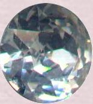
FIGURE XXI
(strass coloré)
La base de toutes les pierres artificielles est le strass incolore. Coloré par des silicates à bases métalliques, il fournit les imitations des pierres colorées. Taillé sans addition, il sert à imiter le diamant. Le strass se prépare avec la silice, la potasse, le borax et l'oxyde de plomb. On ajoute quelquefois à ces matières de l'acide arsénieux. il faut surtout porter, comme on veut avoir un produit bien pur, un grand soin dans le choix des matières premières.- La silice : elle peut se prendre à l'état de cristal de roche, de sable ou de silex. Le cristal de roche donne un verre plus blanc ; le silex contient toujours un peu de fer, qui colore le verre en jaune ; il en est de même du sable le plus pur. l'un et l'autre doivent être lavés avec l'acide hydrochlorique. Pour pulvériser et tamiser le cristal de roche ainsi que le silex, on les étonne en les faisant rougir au feu et les jetant dans l'eau froide ;
- La potasse : elle ne doit pas être mélangée avec d'autres sels ; on peut se servir aussi du nitrate de potasse [salpêtre, nitre, azotate de potasse, fleur de sel], dont l'emploi est préférable compte tenu de la pureté constante de ce sel ;
- Le borax du commerce, celui de Hollande produirait un verre brun ; il faut préférer l'acide borique cristallisé ;
- L'oxyde de plomb s'emploie à l'état de minium bien pur. La pureté absolue du carbonate de plomb pourrait engager à faire usage de la céruse de Clichy ; elle donne un beau verre qui n'est point exempt de bulles.Le choix des creusets est très important. Ceux de Hesse sont meilleurs que ceux de porcelaine. les creusets colorent quelquefois la matière en jaune ou en brun, quand leur surface laisse échapper quelques particules de fer. quant aux creusets de porcelaine, ils se cassent et sont trop perméables. On se sert pour fondre la matière, d'un four à potier ou d'un four à porcelaine, et les creusets restent 24 heures environ au feu. Plus la fusion est tranquille et prolongée, plus le strass acquiert de dureté et de beauté. Le plus souvent, on se sert d'un four à potier. Nous donnons dans le tableau suivant quatre mélanges dont s'est servi M. Douault pour faire du très beau strass.
Avec le cristal de roche, on obtient un stras plus dur que celui qui est fait avec le sable ou le silex mais il est parfois trop blanc ce qui n'est pas avantageux pour les petites pierres qui manquent d'orient et jettent alors moins de feu que celles dont la matière est légèrement colorée en jaune. Venons-en au strass coloré. Ces strass ont destinés à fournir de imitations de diverses pierres naturelles plus ou moins estimées dans le commerce de la bijouterie. et c'est là qu'un facteur psychologique intervient : il paraît que l'art du strass serait en quelque sorte un art limité et que dès que l'on peut obtenir des copies fidèles des pierres employées par les bijoutiers, le but est atteint. Car ce serait vainement qu'on pourrait se procurer des strass remarquables par leurs belles nuances, si ces strass ne ressemblaient pas à quelque pierre précieuse : ils seraient alors repoussés par les consommateurs. Nous touchons là au sommet de l'art spagyrique - du moins considéré comme tel, dans l'optique de nos recherches. Ainsi, la voie sèche au creuset conduirait aux pierres véritables [alchimie] tandis que les strass colorés manqueraient de noblesse et seraient à réserver à un usage mercantile [spagyrie] : nous laissons au lecteur le soin de juger ce point de science. Notre avis ? Nous serions tenté de croire que si des alchimistes ont réussi la synthèse de ces pierres, ils n'avaient pas les moyens actuels pour les différencier des gemmes orientales [comme en parle Buffon] ; dès lors, notre sentiment serait qu'ils ne poursuivaient pas un but mercantile mais qu'ils voulaient se rapprocher de Dieu [ou du principe divin] par cet art du feu, cet Art sacré que Dom Pernety croit devoir remonter au temps des Egyptiens... si donc, il y a des mercantis, il ne peut s'agir ici que des chalands : ceux-ci veulent acheter à bon prix des pierreries assez parfaites pour qu'un oeil peu exercé les prenne pour de véritables pierres fines, d'une valeur bien plus considérable. Sous ce rapport, le strass le plus parfait, s'il n'imitait rien, n'aurait aucune valeur car il ne tromperait personne ; c'est en quelque sorte le règne de la corruption, à envisager dans un double sens, exotérique et que nous venons de voir ; ésotérique et le lecteur voudra bien alors se rapporter à la section sur la réincrudation où il comprendra en quoi la chute de l'ange est si proche de l'Art sacré. Les fabricants de strass sont donc limités pour les couleurs et même pour l'intensité des couleurs ;sous ce rapport, l'art du strass contracte de rapports avec celui de faire le beau verre teint ou peint, voire avec le travail du vitrail [cf. section Mercure].
b)- les pierres : la phase d'assation
Dans la fabrication des pierres artificielles, on doit prendre beaucoup de précautions, observer des soins assidus, que seule la pratique ou un maître peuvent faire connaître. Les matières doivent être pulvérisées et même porphyrisées avec attention. Les mélanges doivent être tamisés de façon répétée. il ne faut pas se servir du même tamis pour passer différentes compositions, quelque soin que l'on mette à nettoyer le tamis après l'opération. Enfin, pour obtenir des masses bien fondues, bien homogènes, sans stries, ni bulles, il faut employer des substances à l'état de pureté et mélangées dans un état de ténuité extrême ; il faut choisir les meilleurs creusets, fondre à un feu gradué et bien égal dans son maximum de température ; laisser la matière au feu pendant vingt-quatre à trente heures, et ne faire refroidir les creusets que très lentement, afin que la matière éprouve une sorte de recuit. Nous signalerons un Mémoire présenté aux Comptes rendus de l'Académie des sciences qui a son intérêt : il est signé de Charles Feil que l'on a évoqué à plusieurs reprises dans la section du Mercure et de la saturnie végétale.
M. Feil adresse à l'Académie des échantillons de flint lourd (verre de Faraday), obtenus par un procédé nouveau : ce procédé permet d'avoir ce verre en masses de 25 à 35 kg, parfaitement pures, homogènes et sans fils. Les creusets ayant pu être garantis contre les attaques du plomb, on peut même arriver à dépasser la densité des verres de Faraday. M. Feil soumet également au jugement de l'Académie des échantillons de diverses pierres précieuses artificielles, telles que des émeraudes, des saphirs, des spinelles blancs et teintés, et enfin une pierre d'un bleu violacé, très riche de ton et d'un éclat dépassant celui des plus belles améthystes. La pureté et l'éclat de ces pierres sont presque supérieurs à ceux des pierres fines ; leur dureté est presque égale. l'auteur espère que ses procédés, en permettant de reproduire artificiellement des pierres fines, fourniront aussi aux physiciens la possibilité d'étudier les propriétés optiques de combinaisons nouvelles. Il se propose de faire des flints, des aluminates de chaux, de chaux et de baryte, d plomb, de bismuth, etc. ;pour les crowns, des aluminates de magnésie, de silicates de magnésie et d'alumine, etc.Il est remarquable que sur la même page de ce Compte rendu [p. 1342] figure une note de Marc-Antoine Gaudin sur la production de quelques pierres précieuses artificielles [Gaudin est évoqué dans les sections : Mercure - Soufre].
- topaze : cette composition est très sujette à varier dans la fonte, en raison du degré de température et de la durée du feu. Elle passe du blanc de strass au jaune soufre, au violet et au rouge pourpre, suivant des circonstances qui ne sont pas bien connues. On peut comparer cette matière au rubin-glass des Allemands et des Italiens. M. Douault préconise la recette suivante :
- strass très blanc : 1000
- verre d'antimoine : 40
- pourpre de Cassius : 1Il faut choisir le verre d'antimoine le plus transparent et d'un jaune orangé clair. D'emblée, la description que donne Jean-Baptiste Dumas [Traité de chimie appliquée aux arts, Bechet jeune, Paris,1828] de la topaze artificielle, revêt les caractères d'un objet hermétique. La variation des couleurs évoque à s'y méprendre les régimes de Philalèthe ou ceux qu'indiquent Cyliani en son Hermès Dévoilé ; l'or participe de l'antimoine ; l'antimoine lui-même est sous forme de verre. Et certes, ce n'est pas pour rien que Fulcanelli indique que :
"Les descriptions, - peu nombreuses et peu limpides - que nous venons de traduire, se rapportent à la nature du vase ; quantité de textes nous éclairent sur la forme de l'oeuf. Celui-ci peut, à volonté, être sphérique ou ovoïde, pourvu qu'il soit en verre clair, transparent, sans soufflure [...] l'essentiel est qu'on puisse le souder à la lampe d'émailleur..."
il s'agit là d'un langage de pure cabale ; car par verre clair et transparent, c'est de la pureté des matériaux de base qu'il s'agit ; par lampe d'émailleur, c'est de l'étain qu'il est question... Quant au verre d'antimoine, nous avons parlé de sa préparation dans le Char triomphal de l'antimoine auquel nous prions donc le lecteur de se reporter. Le lecteur douterait-il du bien fondé de ces réflexions, il faudrait alors lui montrer la planche XIV du Mutus Liber : Cette planche, nous l'avons déjà commentée mais elle mérite qu'on y revienne : le panneau du bas montre très clairement deux tamis situés au-dessus du couple alchimique. Tous deux appliquent leur doigt sur leur bouche en un geste éloquent qui dans tous les pays du monde veut dire : « chut ! ». Or, s'est-on avisé qu'en latin, cette onomatopée se dit « st », donnant ainsi les initiales de deux des matières de l'oeuvre par la voie humide [st = stannum et st = stibium]. Le Mercure est indiqué dans une fiole ; on peut renvoyer au rivage, à la côte, ce qui peut orienter soit vers une plage [sable], soit vers des algues en bordure de plage [salicornia = carbonate de soude, natron = alkali fixe] ; lege renvoie à lego avec le sens de lire, c'est-à-dire scruter. Pour en revenir à la topaze, on peut, avec du fer seul, obtenir une pierre assez belle avec le mélange suivant :
- strass : 1000
- oxyde de fer : 10
- rubis : c'est la « reine » des pierres précieuses, la plus rare et la plus chère des pierres artificielles. il se trouve que la préparation de la topaze fournit un moyen d'obtenir constamment et à volonté de très beaux rubis. Souvent le mélange pour topaze donne une masse opaque, translucide sur ses bords et offrant dans ses lames minces une couleur rouge par transparence. Une partie de cette matière topaze opaque, et 8 parties des strass fondus dans un creuset de Hesse, qu'on laisse 30 heures au feu d'un four à potier, donnent pour résultat un beau cristal jaunâtre semblable au strass. Refondu au chalumeau, celui-ci produit le plus beau rubis d'Orient. On peut aussi faire un rubis moins beau et d'une teinte différente en employant les proportions suivantes :
- strass incolore : 1000
- oxyde de manganèse : 25
- émeraude : l'émeraude est très facile à fabriquer. Celle qui réussit le mieux résulte du mélange de l'oxyde de cuivre avec le strass incolore. Si l'on ajoute de l'oxyde de cobalt, le verre obtenu présente des reflets bleus. La composition qui imite le mieux l'émeraude naturelle est la suivante :
- strass incolore : 1000
- oxyde de cuivre pur : 8
- oxyde de chrome : 0.2Evidemment, l'oxyde de chrome pose un problème au plan historique ; nous en avons parlé dans la section sur le Soufre. Il paraît qu'on peut, en augmentant la proportion de chrome ou d'oxyde de cuivre, en y mêlant de l'oxyde de fer, faire varier la nuance verte et imiter le péridot ou l'émeraude foncée.
- saphir : pour produire une couleur d'un beau bleu oriental, il faut employer du strass très blanc et de l'oxyde de cobalt très pur. Cette composition mise au creuset de Hesse luté, doit rester 30 heures au feu. voici les proportions :
- strass incolore : 1000
- oxyde de cobalt : 15
- améthyste : sa couleur doit être belle et veloutée pour qu'on en fasse quelque cas. Voici, d'après Dumas, la formule qui réussit le mieux :
- strass incolore : 1000
- oxyde de manganèse : 8
- oxyde de cobalt : 5
- pourpre de Cassius : 0.2
- aigue-marine : c'est une pierre peu recherchée, même quand elle est naturelle. C'est une sorte d'émeraude pâle, tirant sur le bleu plutôt que sur le vert, et imitant assez la couleur de l'eau de mer. On l'obtient en mêlant :
- strass incolore : 1000
- verre d'antimoine : 7
- oxyde de cobalt : 0.4
- grenat syrien : cette pierre, que les Anciens appelaient peut-être escarboucle, a une couleur vive qui la fait estimer. Elle est surtout employée pour les petits bijoux. Le grenat artificiel est une espèce de rubis foncé que l'on fabrique d'après la formule suivante :
- strass incolore : 1000
- verre d'antimoine : 500
- pourpre de Cassius : 4
- oxyde de manganèse : 4
Parmi les pierres que nous avons cité, la topaze, le rubis, peut-être l'émeraude, et surtout le grenat syrien nous paraissent devoir être retenus comme ayant pu, éventuellement, être préparés par les anciens alchimistes mais il n'est pas dit, bien sûr, qu'ils soient arrivés à obtenir des substances dans un état suffisant de pureté : là encore, il ne s'agit que d'hypothèses...Outre le strass, il nous reste à citer le cristal et le flint-glass. Ces matières vitreuses - cf. section du Mercure - ont un poids spécifique considérable, une limpidité parfaite et une grande puissance réfractive. Elles sont incolores et très fusibles.
Nous avons vu que ce qui faisait le prix des pierre précieuses était avant tout leur orient et leurs couleurs qui exercent une véritable fascination sur l'esprit humain, et ce depuis les époques les plus reculées. Le strass, matière de base des pierres artificielles par la voie humide [préparation du verre d'antimoine, du pourpre de Cassius] est un verre de plomb, semblable au flint-glass, avec la différence qu'il est coloré par certains oxydes métalliques. Ainsi, comme expliqué ci-dessus, il est coloré en bleu par l'oxyde de cobalt, en vert par l'oxyde de cuivre, en violet par l'oxyde de manganèse, en rouge-rubis par le pourpre de Cassius [mélange de chlorure d'étain et d'or métallique à l'état très divisé]. La coloration des verres par les oxydes métalliques est devenue au fil du temps, à partir du XIXe siècle, une véritable branche de l'industrie ; l'émail coloré n'est autre chose qu'un verre de plomb [cristal] rendu opaque par de l'oxyde de zinc ou préparé par de l'étain. Le verre laiteux [Milchglass] est le produit de la fusion d'une masse vitreuse avec des cendres d'os [phosphate de chaux]. Dans la fabrication du verre, on se sert souvent, à la place du carbonate de potasse ou de soude [alkali fixe, huile de tartre par défaillance, natron] du sulfate de ces bases [tartre vitriolé, arcanum duplicatum, sel de duobus, sel polychreste de Glaser, sel admirable de Glauber]. Il se produit alors la réaction suivante : l'acide silicique déplace l'acide sulfurique à une température élevée. Le déplacement est hâté par une addition de poussière de charbon [corps réducteur, de même que la chaux] ; il se dégage de l'acide sulfureux mêlé d'acide carbonique. C'est ainsi qu'un mélange fait avec 1 partie de quartz, 41/2 parties de sel de Glauber, 0.5 parties de chaux et une trace de charbon peut servir à la préparation du verre ordinaire, premier état de la pierre : c'est son état mercuriel figé. La bonne tenue des couleurs impose, dans la mesure du possible, de disposer d'un verre parfaitement incolore [mais nous avons vu qu'une très légère teinte jaune semble indispensable afin de donner un peu d'orient à la pierre]. La présence d'une certaine quantité de protoxyde de fer isomorphe avec la chaux, la magnésie, donne un verre ayant une légère nuance de coloration. Pour pallier cet inconvénient, on ajoute à la masse vitreuse du peroxyde de manganèse qui transforme le protoxyde de fer en peroxyde [colcothar], lequel ne produit presque aucune coloration, tandis que le peroxyde de manganèse se trouve, quant à lui, réduit à l'état de protoxyde qui procure des verres incolores ; notez que l'addition de salpêtre conduit au même résultat [les anciens alchimistes ne connaissaient pas le manganèse].
Nous avons été amené dans cette section à mettre en relation plusieurs éléments qui nous aiguillé vers la voie humide, alors qu'au début de ce travail, nous ne cherchions qu'à expliquer la formation du pourpre de Cassius. Comme nous le supposions initialement, la voie humide apparaît plus complexe que la voie sèche et nous ne tairons pas qu'elle garde encore des secrets. Néanmoins, l'analyse patiente des textes alchimiques, la confrontation historique avec les traités de chimie du XVIIIe siècle et ceux, plus récents, du XIXe siècle, semblent laisser planer peu de doute quant à la possibilité d'élaborer des synthèses cristallines par le biais de la voie humide. Cette voie humide diffère de celle qu'ont employée les minéralogistes du XIXe siècle dans leurs expériences de reproduction des minéraux et, pour nous, elle se rattache plus à la spagyrie qu'à la véritable alchimie. Les différents éléments que nous avons rassemblés montrent que l'on peut aboutir à des synthèses cristallines élaborées en combinant :
- l'or, que l'on doit d'abord dissoudre par l'eau régale puis retirer de sa dissolution par de l'esprit de vin ou de l'éther [substance connue de Basile Valentin] ; les dissolutions auriques mènent directement à l'or potable de Paracelse ;
- les sels stannifères, en particulier les chlorures d'étain ; nous signalons aussi le rôle minéralisateur puissant que jouent les chlorures, de façon générale ; les chlorures d'étain sont indispensables pour la préparation du pourpre de Cassius ;
- le pourpre de Cassius est une substance qui paraissait encore complexe aux chimistes du XIXe siècle ; Henri Debray la définit comme une laque où l'étain est à l'état de chlorure et l'or, à l'état métallique très divisé ; on doit signaler ici le parallèle avec l'aventurine où le cuivre est aussi à l'état métallique dans un état très divisé ;
- la distillation du vin est citée par de nombreux textes : elle permet la préparation de l'eau de vie et de l'éther sulfurique [entre autre] ; corps dans lesquels l'or est soluble ; il en va de même pour le vinaigre avec l'acide acétique, dans lequel l'or est soluble après un certain temps ;
- le mercure, sous forme de sublimé corrosif, est indispensable à la préparation des chlorures d'étain ;
- la chaux et le charbon, le salpêtre aussi, jouent un rôle réducteur des plus importants ;
- le foie de soufre [pentasulfure de potassium] est l'un des deux principaux dissolvants de l'or avec l'eau régale : c'est un point de jonction avec la voie sèche où l'on utilise le pentasulfure de potassium en le calcinant d'abord pour le transformer en tartre vitriolé ;
- les modifications des couleurs, dans la préparation de la topaze et du rubis artificiels, rappellent étrangement les régimes de Philalèthe ou de Cyliani. Ce dernier point reste à approfondir.
- l'esprit humain possède une sensibilité très particulière à certaines couleurs présentes dans des cristallisations naturelles ou artificielles : c'est là un point de liaison entre l'alchimie et la psychologie qui doivent faire relire les travaux de Jung en la matière.